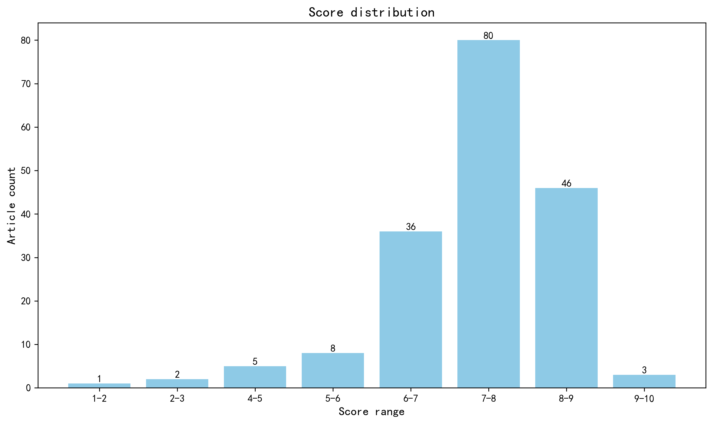

神经科学快讯·第012期 嗅觉地图重绘：MERFISH全景揭示社会气味检测的空间编码与拓扑图谱 (2026-05-31)
📊 本周概览
历史摘要修订（2026-10-18）：第 012 期保留历史期号、日期与封面。本期 402 条记录中补回 184 条正式摘要，仅对这些条目使用 DeepSeek 重新评分和分级推荐，其余评估保持原值。修订后拟发布 164 篇，其中 4 篇仍缺充分摘要，已保留资料不足提示。来源、旧评分和推荐变更见 getfiles/abstract_history_2026-10-18.json。
- 头条推荐: 2 篇
- 深度解读: 85 篇
- 简要提及: 77 篇
- 跨界启发: 0 篇
- 已过滤: 238 篇
🌏 环球视野

地区与机构按本期原始发表记录、ROR 及城市地址规则分别统计；跨地区合作可重复计入，不作为完整机构排名。评分分布不含“域外局限”文章。
🌍 国家/地区分布 TOP 10
| 排名 | 国家 | 文章数量 |
|---|---|---|
| 1 | United States | 77 |
| 2 | Germany | 31 |
| 3 | China | 28 |
| 4 | United Kingdom | 23 |
| 5 | Canada | 20 |
| 6 | The Netherlands | 15 |
| 7 | Switzerland | 11 |
| 8 | France | 9 |
| 9 | Sweden | 6 |
| 10 | Australia | 6 |
地区计次合计: 319 次；取得地区信息 151/181 篇
🏢 研究机构 TOP 10
| 排名 | 机构 | 文章数量 |
|---|---|---|
| 1 | Harvard University | 11 |
| 2 | Columbia University | 10 |
| 3 | University of California San Diego | 9 |
| 4 | University of Cambridge | 8 |
| 5 | University of Oxford | 7 |
| 6 | Stanford University | 7 |
| 7 | University of Toronto | 7 |
| 8 | Fudan University | 6 |
| 9 | University of Pennsylvania | 6 |
| 10 | McGill University | 6 |
📊 评分分布
| 评分区间 | 文章数量 |
|---|---|
| 1-2 | 1 |
| 2-3 | 2 |
| 4-5 | 5 |
| 5-6 | 8 |
| 6-7 | 36 |
| 7-8 | 80 |
| 8-9 | 46 |
| 9-10 | 3 |
总计: 181 篇评分文章
📈 各领域文章分布
| 领域 | 深度解读 | 简要提及 | 总计 |
|---|---|---|---|
| 未知领域 | 0 | 39 | 39 |
| 临床与转化神经科学 | 18 | 6 | 24 |
| 计算与理论神经科学 | 11 | 10 | 21 |
| 认知神经科学 | 10 | 9 | 19 |
| 分子与细胞神经科学 | 13 | 2 | 15 |
| 系统与环路神经科学 | 10 | 5 | 15 |
| 感觉与运动神经科学 | 9 | 3 | 12 |
| 发育神经科学 | 8 | 1 | 9 |
| 方法学 | 3 | 1 | 4 |
| 社会与情感神经科学 | 3 | 1 | 4 |
合计: 深度解读 85 篇，简要提及 77 篇，共 162 篇
🥇 头条推荐（9.0+分）
中文标题: 小鼠初级嗅觉系统中社会气味空间组织与检测
作者: Bogdan Bintu, Yoh Isogai, Ignatius Jenie et al.
单位: Department of Chemistry and Chemical Biology, Howard Hughes Medical Institute, Harvard University, Cambridge, MA 02138, USA; Department of Physics, Howard Hughes Medical Institute, Harvard University, Cambridge, MA 02138, USA; Department of Molecular and Cellular Biology, Howard Hughes Medical Institute, Harvard University, Cambridge, MA 02138, USA 等
研究地区: United States
关键词: MERFISH, 小鼠, 主嗅上皮, 嗅球, 空间编码, 单细胞图谱
亮点: MERFISH技术首次全景式解析小鼠嗅觉受体空间拓扑图谱，揭示社会气味检测的分子与结构基础。
核心优势: 结合Zhuang实验室顶尖的MERFISH空间转录组技术与Dulac实验室深厚的行为神经生物学背景，实现了从单细胞分辨率到系统级映射的跨越，提供了前所未有的高分辨率嗅觉地图。
研究局限: 主要局限于小鼠模型及体外/离体组织层面的空间映射，虽结合了活动标记，但缺乏在复杂自然行为情境下对动态神经回路功能的实时闭环验证。
目标读者: 计算神经科学家、系统生物学家、嗅觉系统研究者及空间转录组技术开发人员
推荐理由: 本研究利用多路复用错误鲁棒荧光原位杂交（MERFISH）技术，构建了小鼠初级嗅觉系统中嗅觉受体（OR）表达的高分辨率分子图谱。研究不仅全面量化了小鼠OR库的表达情况，还揭示了主嗅上皮（MOE）中感觉神经元分布的刻板梯度以及嗅球（OB）中的空间组织规律。特别值得注意的是，该工作阐明了社会性气味在初级嗅觉系统中的特异性检测机制及其空间映射模式。对于致力于理解感官信息如何从外周受体精确映射至中枢神经系统的研究者而言，这是一份极具价值的资源。其高分辨率的空间转录组数据为构建嗅觉处理的计算模型提供了关键的实证基础，同时也展示了先进成像技术在解析复杂神经网络拓扑结构中的强大潜力。
中文标题: 长新冠中自身抗体与神经系统症状之间的因果联系
作者: Keyla Santos Guedes de Sá, Julio Silva, Rafael Bayarri-Olmos et al.
单位: Department Of Immunobiology, Yale University School Of Medicine, New Haven, Ct 06519, Usa; Center For Infection And Immunity, Yale University School Of Medicine, New Haven, Ct 06519, Usa; Howard Hughes Medical Institute, Chevy Chase, Md 20815, Usa. Electronic Address: Akiko.Iwasaki@Yale.Edu.; Department Of Immunobiology, Yale University School Of Medicine, New Haven, Ct 06519, Usa; Center For Infection And Immunity, Yale University School Of Medicine, New Haven, Ct 06519, Usa.
资深研究者: Julio Silva (h指数=25); Akiko Iwasaki (h指数=125)
关键词: 人类蛋白质组学, 自身抗体, 脑干组织反应性, 长新冠机制, 因果推断
亮点: 首次通过被动转移实验确立长新冠中自身抗体与神经症状之间的直接因果联系，为免疫疗法提供坚实依据。
核心优势: 结合大规模蛋白质组学筛选与严谨的小鼠被动转移模型，实现了从相关性到因果性的关键跨越；Akiko Iwasaki团队的背书增强了研究的可信度。
研究局限: 主要基于小鼠模型验证人类IgG的效应，跨物种反应的特异性及长期临床转化效果仍需进一步的人体临床试验证实。
目标读者: 神经免疫学家、感染后综合征研究人员、自身免疫性疾病专家及关注长新冠机制的计算生物学家
推荐理由: 本研究为长新冠（Long COVID）中的神经认知症状提供了关键的分子机制证据。研究团队利用涵盖超过21,000种人类蛋白质的阵列，系统鉴定了患者体内针对神经系统蛋白的自身抗体（AABs），并证实这些抗体水平与临床症状严重程度显著相关。更具突破性的是，通过纯化IgG在人脑桥组织上的反应性及交叉反应性实验，作者建立了从分子异常到病理表型的因果联系。这不仅解释了部分长新冠患者的持续性神经损伤机制，也为开发基于清除自身抗体的靶向疗法提供了坚实的理论基础。对于关注感染后神经后遗症及自身免疫介导神经病变的研究者而言，这是一篇必读的高影响力文献。
📚 精选文献（按领域分类）
临床与转化神经科学
中文标题: 脑微结构的全生命周期规范建模
作者: Julio E Villalón-Reina, Alyssa H Zhu, Leila Nabulsi et al.
单位: Imaging Genetics Center, Mark & Mary Stevens Institute for Neuroimaging & Informatics, Keck School of Medicine, University of Southern California, Los Angeles, CA, USA.; Laboratory of Brain eScience, Mark & Mary Stevens Institute for Neuroimaging & Informatics, Keck School of Medicine, University of Southern California, Los Angeles, USA.; Imaging Genetics Center, Mark & Mary Stevens Institute for Neuroimaging & Informatics, Keck School of Medicine, University of Southern California, Los Angeles, CA, USA. julio.villalon@ini.usc.edu. 等
研究地区: United States, Canada, India, The Netherlands
关键词: 扩散张量成像 (DTI), 白质微观结构, 规范模型 (Normative Modeling), 全生命周期发育轨迹, 多中心数据整合, 人类脑图谱
亮点: 首个覆盖全生命周期的白质微观结构大规模规范模型，为神经精神疾病提供标准化偏差检测基准。
核心优势: 前所未有的样本量（N=54,583）和跨年龄覆盖范围，结合标准化的DTI分析流程与分层贝叶斯回归，建立了高统计效力的参考框架。
研究局限: 依赖扩散张量成像（DTI）这一相对基础的微结构指标，缺乏多壳层或高阶扩散模型（如NODDI/DSI）提供的特异性微观结构信息；且主要基于横断面数据推断发育轨迹。
目标读者: 计算神经科学家、临床神经影像学家、从事神经退行性疾病和精神障碍生物标志物研究的系统生物学家。
推荐理由: 本研究填补了脑白质微观结构规范建模的空白，基于涵盖4至91岁、近5.5万名个体的19个国际数据集，构建了迄今最大规模的全生命周期白质DTI指标参考标准。通过量化个体偏离群体规范的Z分数，该模型为检测退行性、精神性及神经发育障碍中的细微脑异常提供了高灵敏度的生物标志物框架。对于临床神经科学家而言，这是将大规模影像数据转化为精准诊断工具的里程碑；对于计算生物学家，其提供的标准化发育轨迹数据为理解大脑老化机制及疾病早期预警提供了宝贵的基准资源。
中文标题: 封装线粒体移植缓解线粒体和帕金森病模型中的功能障碍
输入资料不足：原始摘要未取得，当前评估仅供初筛，推送前需核对原文。
作者: Shiwei Du, Qi Long, Yanshuang Zhou et al.
资深研究者: Hao Wu (h指数=95); Jian Zhang (h指数=109)
关键词: 线粒体移植, 帕金森病模型, 微囊化技术, 代谢修复, 细胞外囊泡/细胞器递送
亮点: 通过囊封线粒体移植技术，为帕金森病及线粒体功能障碍提供了一种非病毒、直接的能量代谢干预新策略。
核心优势: 提出了绕过传统基因治疗或药物递送屏障的直接细胞器替代疗法，在PD模型中展示了显著的表型改善，具有高度的转化医学潜力。
研究局限: 该研究主要聚焦于生物医学与神经退行性疾病机制，缺乏计算神经科学视角下的网络动力学建模或系统生物学层面的定量分析，对计算/系统生物学家的直接理论贡献有限；且长期安全性与免疫原性数据可能尚不充分。
目标读者: 神经退行性疾病研究者、线粒体生物学家、转化医学专家
推荐理由: 本研究发表于《Cell》，提出了一种创新的非基因编辑疗法：通过移植封装的线粒体来改善帕金森病（PD）及线粒体功能障碍模型中的病理状态。研究证实，封装技术有效避免了宿主免疫排斥和线粒体快速降解，显著恢复了多巴胺能神经元的功能并缓解了运动障碍。对于系统生物学家而言，该研究提供了细胞间代谢互补（metabolic symbiosis）在体内长期维持的新证据；对于计算建模者，这为模拟细胞器动力学和组织水平能量稳态恢复提供了新的参数约束。此工作不仅拓宽了PD的治疗策略，也为理解细胞器互作在神经退行性疾病中的作用机制开辟了新视角。
Impact of sex chromosomes and gonad type in stress susceptibility in corticostriatal brain regions.
深度解读 8.2/10中文标题: 性染色体与性腺类型对皮质纹状体脑区应激易感性的影响
作者: Kelly N Barko, Micah A Shelton, Dawson R Kropp et al.
单位: Department of Psychiatry, University of Pittsburgh School of Medicine, Pittsburgh, PA 15213.; Center for Neuroscience at University of Pittsburgh, Pittsburgh, PA 15261.; School of Neuroscience, Virginia Polytechnic Institute and State University, Blacksburg, VA 24061. 等
研究地区: United States
关键词: 四核心基因型小鼠, 性染色体, 性腺, 慢性可变应激, 抑郁易感性, 皮层纹状体环路
亮点: 四核心基因型小鼠解耦性染色体与性腺，将应激易感性的性别差异归因于XX/XY染色体补体而非性腺类型，并揭示NAc以染色体为主、PFC兼具性腺贡献的脑区特异性转录组机制。
核心优势: 采用四核心基因型范式在SCVS模型中干净解耦性染色体补体与性腺类型，并结合PFC与NAc的RNA-seq，把行为易感性与免疫/神经元通路及脑区特异性转录组直接联系，设计严谨且结论可检验。
研究局限: 仅基于一种应激范式与小鼠模型，行为表型与转录组为相关而非因果，免疫通路的具体细胞来源与分子中介未验证，向人类MDD的转化仍需跨物种与干预实验支持。
目标读者: 行为神经内分泌学、应激与抑郁模型研究、性别差异神经生物学及转录组学研究者
推荐理由: 该研究利用四核心基因型小鼠精巧解耦性染色体补体（XX vs. XY）与性腺类型（卵巢 vs. 睾丸），在亚慢性可变应激模型中揭示雌性易感、雄性抵抗的性别差异机制。研究聚焦皮层纹状体脑区，为理解重性抑郁障碍的性别异质性提供了因果性证据，并明确了性染色体与性腺激素的独立贡献。这项工作对发展性别特异的抗抑郁策略具有重要转化价值，值得神经科学读者关注。
中文标题: 衰老与神经退行性疾病中结构与功能相互作用的大脑维持生物标志物
作者: Yumeng Li, Xinyue Zhang, Xin Li et al.
单位: Beijing Key Laboratory of Cognitive Intelligence for Elderly Brain Health, Faculty of Psychology, Beijing Normal University, Beijing, China.; Beijing Aging Brain Rejuvenation Initiative (BABRI) Centre, Beijing Normal University, Beijing, China.; State Key Laboratory of Cognitive Neuroscience and Learning, Beijing Normal University, Beijing, China. 等
研究地区: China
关键词: 静息态fMRI, 结构-功能耦合, 脑老化生物标志物, 认知弹性, 机器学习建模
亮点: 提出基于结构-功能解耦的'大脑维护'量化生物标志物，为认知韧性提供可计算的神经影像指标
核心优势: 构建了从年轻成人基准预测老年人大脑功能的模型，将抽象的'维护'概念转化为具体的、与Aβ负荷和认知衰退显著相关的量化指标；样本量较大（N=1280），具有较好的统计效力。
研究局限: 主要依赖横断面或回顾性队列数据，难以确立因果关系；'维护'定义依赖于对年轻状态的假设性外推，可能忽略个体发育轨迹的差异；未包含纵向验证以证明其作为前瞻性生物标志物的稳健性。
目标读者: 计算神经科学家、系统生物学家、关注阿尔茨海默病及正常衰老机制的临床研究者
推荐理由: 本研究通过量化大脑结构与功能之间的预测偏差，创新性地定义了“脑维护”（Brain Maintenance）这一关键概念，为解释个体在老龄化过程中表现出的认知弹性差异提供了坚实的生物学基础。利用1280名老年人的多模态MRI数据，作者构建了基于年轻成人基准的结构-功能模型，揭示了前额叶和扣带回等区域的维护状态与认知表现的强相关性。该工作不仅验证了脑维护作为独立于脑萎缩的功能性生物标志物的有效性，还为早期识别神经退行性风险及评估干预措施效果提供了可量化的影像学指标。对于致力于理解健康老化机制及开发精准医疗策略的研究人员而言，这是一项具有重要转化价值的参考研究。
中文标题: 神经退行性疾病中的表观遗传生物标志物：从分子特征到治疗靶点
作者: Sam J Washer, Marty Frith, Elizabeth Cowan et al.
单位: Oxford Parkinson's Disease Centre, University of Oxford, Dorothy Crowfoot Hodgkin Building, South Parks Road, Oxford, UK; Nuffield Department of Medicine Research Building, Centre for Medicines Discovery, Old Road Campus, Oxford, UK.; Department of Clinical and Biomedical Sciences, Faculty of Health and Life Sciences, University of Exeter, Exeter, UK. 等
研究地区: United Kingdom, New Zealand
关键词: 表观遗传学, 生物标志物, DNA甲基化, 液体活检, 综述
亮点: 由顶尖表观遗传学家领衔，系统梳理神经退行性疾病中DNA修饰与染色质架构的转化潜力，为生物标志物发现提供清晰路线图。
核心优势: 作者Jonathan Mill在表观遗传流行病学领域的极高影响力确保了综述的权威性与前沿性；Trends in Neurosciences期刊保证了内容的精炼与高传播度。
研究局限: 作为综述文章，缺乏原创实验数据支持，主要依赖对现有文献的综合与批判，创新性体现在整合而非新发现。
目标读者: 神经科学研究员、临床神经病学专家、从事生物标志物开发的计算生物学家及药企研发人员。
推荐理由: 本文系统综述了表观遗传生物标志物在神经退行性疾病（如阿尔茨海默病、帕金森病）中的最新进展。鉴于早期诊断和疾病监测工具的匮乏，该综述详细梳理了从DNA甲基化到组蛋白修饰的分子特征，评估了其作为临床诊断工具和预后指标的有效性。文章不仅总结了当前的技术挑战，还深入探讨了将这些生物标志物转化为治疗靶点的潜力。对于从事神经退行性疾病机制研究及临床转化的学者而言，这是一份极具参考价值的资源，有助于理解表观遗传调控在疾病进程中的核心作用及其临床应用前景。
中文标题: 从脑网络视角看年轻卒中后的认知表现
作者: Hao Li, Mijntje M I Schellekens, Vitória Piai et al.
单位: Center for Cognition, Donders Institute for Brain, Cognition, and Behaviour, Radboud University, PO Box 9104, Nijmegen, 6500, HE, The Netherlands; Center for Cognition, Donders Institute for Brain, Cognition, and Behaviour, Radboud University, PO Box 9104, Nijmegen, 6500, HE, The Netherlands.; Department of Neurology, Radboudumc Research Institute for Medical Innovation, Donders Institute for Brain, Cognition, and Behaviour, Radboud University Medical Center, PO Box 9101, Nijmegen, 6500, HB, The Netherlands. 等
研究地区: The Netherlands
关键词: 脑网络分析, 卒中后认知障碍, 青年卒中, 综述, 连接组学
亮点: 从脑网络视角系统重构青年卒中后认知障碍的机制与康复策略，填补年龄特异性研究的空白。
核心优势: 将局部病灶破坏与全局网络连接性结合，提出基于脑韧性的个体化康复新框架，逻辑严密且覆盖全面。
研究局限: 作为综述文章，缺乏原创实验数据支持，依赖于现有文献的整合与解读。
目标读者: 临床神经科学家、卒中康复专家、计算神经科学家及系统生物学家
推荐理由: 本文深入探讨了青年卒中幸存者认知功能的演变轨迹及其背后的脑网络机制。鉴于近半数青年卒中患者存在认知损伤，且约四分之一伴有失语症，理解这些功能障碍的时空动态至关重要。作者不仅回顾了急性期后的认知功能变化，更从局部和全局脑网络受损的角度，解析了局灶性病变如何导致广泛的认知缺陷。该综述为开发基于网络理论的认知康复策略提供了坚实的理论基础，对于从事卒中康复、计算神经科学及临床转化的研究人员具有重要参考价值，特别是其关于网络破坏与认知表现之间关联的讨论，有助于指导未来的精准干预研究。
中文标题: FAM129C移码变异通过针对GABAA受体的B细胞反应导致贲门失弛缓症
作者: Xiao-Qing Li, Xin-Yue Li, Wei-Feng Chen et al.
单位: Endoscopy Center and Endoscopy Research Institute, Zhongshan Hospital, Fudan University, Shanghai, China.; Department of Bioinformatics, School of Biomedical Engineering and Informatics, Nanjing Medical University, Nanjing, Jiangsu, China.; Shanghai Collaborative Innovation Center of Endoscopy, Shanghai, China. 等
研究地区: China
关键词: 全基因组测序, CRISPR/Cas9, 小鼠模型, B细胞, GABA受体, 肠神经系统
亮点: 首个家族性贲门失弛缓症致病基因FAM129C的发现，串联起B细胞自身免疫攻击抑制性GABA能神经元的新机制。
核心优势: 从家系全基因组测序到CRISPR小鼠模型、多组学时间序列与抗体清除干预，构建了完整的'基因-免疫-神经元'因果链。
研究局限: GABAA受体作为自身抗原的证据仍以蛋白谱和体外细胞实验为主，缺乏患者血清被动转移或抗原特异性T/B细胞克隆的直接体内验证，且小鼠表型与人类疾病的对应度有限。
目标读者: 神经免疫学、胃肠动力障碍、罕见病遗传学及自身免疫机制研究者
推荐理由: 该研究通过大规模三人组全基因组测序，首次发现FAM129C隐性移码变异与贲门失弛缓症相关，并利用CRISPR/Cas9构建的Fam129c突变小鼠重现了生长迟缓、下食管括约肌压力升高及抑制性神经元选择性丢失等关键表型。多组学分析进一步揭示下食管括约肌内B细胞扩增与活化，以及针对GABAA受体的体液免疫反应，为贲门失弛缓症的自身免疫机制提供了直接证据。这项工作将遗传学、神经环路与免疫学交叉融合，不仅增进了对罕见运动障碍疾病的理解，也为神经免疫互作研究提供了新范式。
中文标题: 颅脑-脑膜轴：多发性硬化症进展的新窗口
输入资料不足：原始摘要未取得，当前评估仅供初筛，推送前需核对原文。
作者: Tobias Granberg
单位: Department of Neuroradiology, Karolinska University Hospital, 141 86 Stockholm, Sweden.; Department of Clinical Neuroscience, Karolinska Institutet, 171 77 Stockholm, Sweden.
研究地区: Sweden
关键词: 多发性硬化症 (MS), 硬脑膜免疫学, 颅骨-脑屏障, 慢性炎症机制, 人源组织分析
亮点: 揭示颅骨-脑膜轴作为多发性硬化症进展的关键病理窗口，挑战传统仅关注中枢神经系统的观点。
核心优势: 提出了‘颅骨-脑膜轴’这一新颖的解剖-功能概念，为理解MS的慢性炎症和血脑屏障破坏提供了全新的系统性视角。
研究局限: 摘要未提供具体的分子机制细节或因果性实验证据（如基因敲除验证），主要依赖观察性或多模态影像关联，需警惕相关性不等于因果性。
目标读者: 多发性硬化症临床研究人员、神经免疫学家、系统生物学家及从事脑膜血管化研究的学者。
推荐理由: 本研究揭示了颅骨-硬脑膜轴（skull-meningeal axis）在多发性硬化症（MS）进展中的关键作用，为理解中枢神经系统外周免疫浸润提供了全新视角。作者通过高分辨率成像和单细胞转录组学分析，证实了颅骨骨髓来源的免疫细胞可直接迁移至硬脑膜并参与慢性炎症过程，这一发现挑战了传统血脑屏障主导的观点。该研究不仅阐明了MS中‘隐蔽’病灶形成的解剖学基础，还指出了靶向颅骨微环境作为潜在治疗策略的可能性。对于关注神经炎症、胶质瘤微环境及中枢神经系统免疫监视的研究人员而言，这是一篇具有范式转换意义的重磅文献，强调了系统性因素在局部神经病理过程中的核心地位。
NINJ1 hypomethylation enhances endothelial dysfunction in brain arteriovenous malformations.
深度解读 7.9/10中文标题: NINJ1低甲基化增强脑动静脉畸形的内皮功能障碍
作者: Chun-Jui Chen, Hongfei Zhang, Tonglin Pan et al.
单位: Department of Neurosurgery, Huashan Hospital, Fudan University, Shanghai 200040, China.; National Center for Neurological Disorders, Shanghai, 200040, China.; Shanghai Key Laboratory of Brain Function and Restoration and Neural Regeneration, Shanghai, 200040, China. 等
研究地区: China
关键词: 脑动静脉畸形, DNA甲基化, 内皮功能障碍, NINJ1, 表观遗传, 脑血管
亮点: NINJ1启动子低甲基化通过稳定KRAS蛋白增强内皮KRAS-MAPK信号，为脑动静脉畸形的血管脆弱与出血风险提供表观遗传新机制。
核心优势: 多模态证据链完整：935K全基因组甲基化谱、焦磷酸测序与免疫荧光验证、人脑微血管内皮细胞功能/机制实验、转录组分析及内皮特异性斑马鱼在体模型相互印证，将DNA甲基化、NINJ1表达、KRAS稳定性与血管完整性直接串联。
研究局限: NINJ1增强KRAS稳定性的具体分子互作机制尚未阐明；人源证据以相关性为主，缺乏bAVM患者来源内皮细胞或遗传小鼠模型的因果验证，且样本量与临床出血表型的关联分析有限。
目标读者: 脑血管生物学、神经外科/卒中研究、表观遗传学与血管内皮信号转导研究者
推荐理由: 该研究首次系统揭示NINJ1低甲基化在脑动静脉畸形内皮功能障碍中的关键作用，将表观遗传调控与KRAS-MAPK通路联系起来，为bAVM的血管脆性提供了新机制。利用人脑组织甲基化芯片和焦磷酸测序验证，结合免疫荧光，研究具有较高的临床转化潜力，为bAVM的早期诊断和靶向治疗提供了新思路。
中文标题: 阿尔茨海默病中tau蛋白清除的室管膜下胶质细胞途径
作者: Christy Hung
关键词: Tau蛋白清除机制, 下丘脑室管膜星形胶质细胞 (Tanycytes), 血脑屏障通透性, 阿尔茨海默病病理, 体液动力学
亮点: 揭示下丘脑tanycytes作为tau蛋白从脑脊液清除至血液的关键新途径，为AD病理机制提供全新视角。
核心优势: Trends in Neurosciences期刊的高影响力与对Sauvé et al.研究的深度整合及批判性展望。
研究局限: 作为观点/综述类文章，本身不提供原始实验数据，其价值依赖于被评论研究的严谨性及后续验证。
目标读者: 阿尔茨海默病研究人员、神经胶质细胞生物学家、脑屏障生理学家
推荐理由: 本研究揭示了阿尔茨海默病（AD）病理中一个被长期忽视的关键环节：下丘脑室管膜星形胶质细胞（tanycytes）作为Tau蛋白从脑脊液向血液清除的特定通道。Sauvé等人通过精细的解剖与功能验证，挑战了传统的淋巴或静脉窦主导的清除模型，指出该通道的功能障碍直接导致中枢神经系统内毒性Tau的累积。对于从事AD发病机制研究的学者而言，这不仅修正了我们对蛋白质稳态失衡的理解，更为寻找新的生物标志物和治疗靶点提供了极具潜力的方向。特别是考虑到下丘脑在代谢调控中的核心地位，这一发现将神经退行性与全身代谢紊乱紧密联系起来，具有极高的转化医学价值。
中文标题: 扩展处方镇痛药使用的GWAS鉴定出慢性疼痛的遗传位点
作者: Charli E Harlow, Emeka Uzochukwu, Hazel A Fernando et al.
单位: UK Dementia Research Institute, Department of Psychological Medicine and Clinical Neuroscience, University of Cardiff, Cardiff, UK.; GSK, Gunnels Wood Road, Stevenage, UK. charli.e.harlow@gsk.com.; GSK, Gunnels Wood Road, Stevenage, UK. 等
研究地区: United Kingdom, United States, Germany
关键词: 全基因组关联分析 (GWAS), 慢性疼痛机制, 药物遗传学, 多组学整合, 人类生物库
亮点: 利用处方药数据重新定义慢性疼痛表型，揭示少突胶质细胞分化与突触后内体回收在疼痛遗传中的新机制。
核心优势: 通过整合UK Biobank和FinnGen的大规模GWAS meta分析，结合多组学功能注释（TWAS、细胞类型富集），提供了比传统单一疾病诊断更全面的慢性疼痛遗传图谱，特别是识别出少突胶质细胞相关的新通路。
研究局限: 表型依赖于处方记录而非直接临床疼痛评分，存在混杂因素（如医生处方习惯、药物可及性）；缺乏体内或体外实验对发现的基因位点进行因果验证，主要停留在统计关联层面。
目标读者: 计算生物学家、系统神经科学家、疼痛遗传学研究者和精准医学从业者
推荐理由: 本研究通过定义基于处方止痛药长期使用的表型，显著提升了慢性疼痛GWAS的统计效力，鉴定出140个相关位点（含78个新位点如ARPP21, CNTNAP2）。对于神经科学家而言，这不仅验证了已知通路（如TRPM8），更揭示了新的分子靶点。其核心价值在于展示了如何利用大规模生物库数据优化复杂神经症状的表型定义，为理解疼痛的遗传架构及开发精准治疗策略提供了关键证据。建议关注其与功能基因组学的整合部分，以挖掘潜在的神经生物学机制。
中文标题: 设计全球包容性与伦理审慎的神经未来
作者: Karen S Rommelfanger
单位: Institute of Neuroethics Think and Do Tank, Atlanta, Georgia 30316 director@instituteofneuroethics.org.
研究地区: Georgia
关键词: 神经伦理, 伦理设计, 全球神经科学, 神经技术, 负责任创新, 政策治理
亮点: 提出“神经伦理设计”（NxbD）框架，将伦理审议从合规负担转化为贯穿神经科学研究全周期的迭代式共享实践。
核心优势: 以“设计即伦理”的操作化理念，将神经伦理从外部审查内嵌为假设生成、实验设计与技术架构的组成部分，并强调多社群共同担责，为全球包容性神经未来提供了可执行的方法论框架。
研究局限: 作为观点类文章，缺乏对NxbD具体实施路径、评估指标与跨文化案例的实证检验，论证以规范性主张为主、经验证据有限。
目标读者: 神经科学家、神经工程师、神经伦理学家及科研政策与治理研究者
推荐理由: 本文提出“神经伦理设计化”（NxbD）框架，将伦理反思嵌入神经科学研究全生命周期，而非事后合规。对于从事脑机接口、神经调控等转化研究的学者，该框架提供了可操作的方法论，有助于在实验设计、数据共享和全球健康应用中主动预见伦理挑战。其强调的包容性与全球视角，对日益国际化的神经科学合作具有重要参考价值。
中文标题: 脑内FGF2和NCAM1促进雌激素受体阳性乳腺癌脑转移的FGFR1依赖性进展
作者: Morgan S Fox, Jenny A Jaramillo-Gómez, R Alejandro Marquez-Ortiz et al.
单位: Department of Medicine, Division of Medical Oncology, University of Colorado Anschutz, Aurora, CO, USA.; Department of Pathology, University of Colorado Anschutz, Aurora, CO, USA.; University of Colorado Comprehensive Cancer Center, University of Colorado Anschutz, Aurora, CO, USA. 等
研究地区: United States
关键词: 星形胶质细胞-肿瘤相互作用, FGF信号通路, 乳腺癌脑转移, 小鼠模型, 旁分泌机制
亮点: 揭示了星形胶质细胞FGF2和神经元NCAM1通过FGFR1驱动ER+乳腺癌脑转移的机制，并指出FDA批准抑制剂在早期预防中的窗口期。
核心优势: 结合了年轻与老年小鼠模型，区分了经典（FGF2）与非经典（NCAM1）信号通路在不同生理状态下的作用，提供了明确的临床转化时间窗建议。
研究局限: 研究主要聚焦于肿瘤-微环境相互作用，对神经科学核心问题（如神经网络功能改变、认知影响）的直接贡献有限，更多属于肿瘤神经生物学交叉领域。
目标读者: 从事癌症脑转移研究的生物学家、关注肿瘤微环境与神经系统交互的计算/系统生物学家、以及探索靶向治疗耐药机制的临床研究者。
推荐理由: 本研究揭示了雌激素受体阳性（ER+）乳腺癌脑转移中，小胶质细胞/星形胶质细胞来源的FGF2通过非典型NCAM1介导及典型FGFR1信号通路促进肿瘤定植的新机制。对于神经科学家而言，该研究突出了神经胶质细胞在肿瘤微环境中的主动作用，特别是星形胶质细胞如何通过旁分泌信号重塑血脑屏障或支持肿瘤生长。尽管主要属于肿瘤学范畴，但其对胶质细胞-癌细胞互作通路的深入解析，为理解神经系统内非神经元细胞如何调控病理进程提供了重要视角，尤其适用于关注脑转移微环境和胶质细胞功能的读者。
中文标题: OFC诱导的网络模块化改善精神分裂症阳性症状与注意警觉性：一项rTMS-fMRI联合研究
作者: Ningning Zeng, Min Wang, Hui Zheng et al.
单位: Department of Psychology, Ningbo University, Ningbo, China.; University Medical Center Groningen, University of Groningen, Groningen, Netherlands.; Neuroregulation Center, Wuhu Hospital of Anding Hospital (The Fourth People's Hospital of Wuhu), Wuhu, China. 等
研究地区: China, The Netherlands
关键词: rTMS, 精神分裂症, 眶额皮层, 网络模块化, fMRI, 随机对照试验
亮点: 低频rTMS靶向右OFC通过重塑OFC-DMN动态模块化，将阳性症状、注意警觉改善与精神分裂症相关基因表达和兴奋性神经传递标志物联系起来
核心优势: 随机双盲安慰剂对照设计结合纵向rTMS-fMRI动态模块化分析，并将影像表型与基因表达和兴奋性突触标志物空间对齐，提出OFC动态模块化作为“中间表型”的转化框架
研究局限: 神经影像为次要终点、样本量与效应特异性有限，基因表达关联基于空间相关而非因果或细胞机制证据，动态模块化指标与临床改善的因果链仍需独立队列和机制实验验证
目标读者: 精神分裂症神经影像与神经调控研究者、系统与计算神经科学家、转化精神病学及rTMS临床研究者
推荐理由: 该研究通过随机双盲对照试验，首次将低频rTMS靶向右眶额皮层与动态网络模块化分析相结合，揭示了rTMS改善精神分裂症阳性症状及注意警觉性的网络机制。结果不仅验证了OFC调控的临床疗效，更从网络神经科学角度提供了可量化的生理标记，为精神分裂症的靶向神经调控提供了机制见解。
Regional heterogeneity in phenotypic and genetic associations between bone and brain in humans
深度解读 7.5/10中文标题: 人类骨与脑之间表型和遗传关联的区域异质性
作者: Lei Zhao, Yilan Tang, Wenhui Zhao et al.
单位: State Key Laboratory of Cognitive Science and Mental Health, Institute of Psychology, Chinese Academy of Sciences, Beijing, China.; Leonard Davis School of Gerontology, University of Southern California, Los Angeles, CA, USA.; Department of Psychology, University of Chinese Academy of Sciences, Beijing, China. 等
研究地区: China, United States
关键词: 全基因组关联分析 (GWAS), 结构磁共振成像 (sMRI), 多组学整合, 骨-脑轴, 表型异质性, 人类队列研究
亮点: 首次在大样本人群中系统揭示骨-脑关联的区域异质性及其共享的Wnt信号通路遗传基础。
核心优势: 结合4.5万人大规模影像与多层面遗传数据，提供了从表型到基因通路的系统性证据链。
研究局限: 主要基于UK Biobank横断面数据，难以确立因果方向；机制验证局限于统计富集而非直接实验干预。
目标读者: 计算神经科学家、系统生物学家、精神遗传学研究者及关注骨骼-神经系统交互作用的临床研究人员
推荐理由: 本研究利用UK Biobank约4.5万人的大规模数据集，系统性揭示了骨骼与大脑之间广泛且存在显著区域异质性的结构与遗传关联。研究发现近35%的骨-脑解剖对存在显著相关性，并识别出特定的共享遗传基础。对于神经科学家而言，这项工作不仅量化了‘骨-脑轴’的解剖学证据，还通过遗传共定位分析提供了因果推断的线索。尽管主要聚焦于宏观结构，但其揭示的区域特异性模式为理解神经系统疾病（如抑郁症、精神分裂症）中常见的躯体症状及代谢异常提供了新的系统生物学视角，强调了跨器官网络在人类表型中的重要性。
中文标题: 丘脑-皮层同步性塑造人类颞叶癫痫的发作表现
作者: Thandar Aung, Jian Li, Tipakorn Tumnark et al.
单位: Department of Neurology, University of Pittsburgh Medical Center, Pittsburgh, PA, USA. aung.thandar@outlook.com.; Center for Neurotechnology and Neurorecovery, Department of Neurology, Massachusetts General Hospital and Harvard Medical School, Massachusetts, Boston, MA, USA.; Athinoula A. Martinos Center for Biomedical Imaging, Massachusetts General Hospital and Harvard Medical School, Massachusetts, Charlestown, MA, USA. 等
研究地区: United States, Canada
关键词: 立体脑电图 (SEEG), 丘脑-皮层网络, 癫痫发作动力学, 人类研究, 同步性分析
亮点: 揭示了丘脑-皮层同步性是决定药物难治性颞叶癫痫临床发作表现的关键网络特征，超越了传统单一病灶视角。
核心优势: 基于大样本（62名患者，286次发作）立体脑电图（SEEG）数据，结合严格的核内对照和混合效应模型，提供了强有力的临床证据支持网络机制假说。
研究局限: 研究主要依赖相关性分析，虽控制了混杂变量，但未能直接证明因果机制；且仅关注发作起始后20秒的同步性，对长时程动态演变捕捉有限。
目标读者: 临床神经生理学家、癫痫外科医生、计算神经科学家及系统生物学研究者
推荐理由: 本研究深入探讨了药物难治性颞叶癫痫（DR-TLE）中临床发作与非临床发作的网络机制差异。通过62名患者的286次SEEG记录，作者发现丘脑-皮层同步性是决定癫痫是否表现为临床症状的关键因素，而不仅仅是发作起始区（SOZ）的活动。这一发现挑战了传统仅关注SOZ的观点，强调了全脑网络动态在症状表达中的核心作用。对于从事癫痫机制研究、神经调控治疗及脑网络动力学的研究者而言，该论文提供了重要的人类体内证据，揭示了丘脑在意识障碍和发作传播中的关键角色，为优化手术靶点和闭环刺激策略提供了理论依据。
High-efficacy therapy and progression independent of relapse and MRI activity in multiple sclerosis.
深度解读 7.2/10中文标题: 多发性硬化症中独立于复发和MRI活动的高疗效治疗及进展
输入资料不足：原始摘要未取得，当前评估仅供初筛，推送前需核对原文。
作者: Carmen Tur
单位: Multiple Sclerosis Centre of Catalonia (Cemcat), Neurology Department, Hospital Universitari Vall d'Hebron, Vall d'Hebron Barcelona Hospital Campus, Universitat Autònoma de Barcelona, 08035 Barcelona, Spain.; Center for Networked Biomedical Research on Neurodegenerative Diseases (CIBERNED), Centro de Investigación Biomédica en Red (CIBER), ISCIII, 28029 Madrid, Spain.
研究地区: Spain
关键词: 多发性硬化症 (MS), 疾病修饰治疗 (DMT), MRI静息期进展, 临床-影像分离, 纵向队列研究
亮点: 揭示多发性硬化症中高效治疗下临床进展与复发/MRI活动解耦的现象，挑战传统疾病修饰观念。
核心优势: 基于大规模真实世界数据或临床试验的长期随访，提供了关于‘无疾病活动证据’（NEDA）状态下仍发生进展的有力流行病学/临床证据。
研究局限: 作为临床研究，缺乏对潜在机制（如神经轴突变性、炎症独立损伤）的直接生物学验证；观察性设计难以完全排除混杂因素。
目标读者: 神经内科医生、多发性硬化症临床研究人员、神经免疫学家
推荐理由: 本研究深入探讨了多发性硬化症（MS）中一种具有挑战性的病理现象：在高疗效药物治疗下，尽管复发和MRI活动得到抑制，患者仍出现疾病进展。对于神经科学家而言，理解这种‘临床-影像分离’现象至关重要，因为它揭示了传统炎症模型之外的非炎症性神经退行机制。文章通过详实的纵向数据分析，强调了在评估新型疗法时，单纯依赖复发率和病灶负荷的局限性。这不仅为优化MS临床管理提供了实证依据，也为探索针对慢性神经退行过程的靶向治疗策略指明了方向，提示我们需要开发能同时捕捉微观结构改变和功能衰退的新型生物标志物。
Clinical markers of disease progression in the prodromal to overt alpha-synucleinopathy continuum.
深度解读 7.1/10中文标题: 前驱期至显性α-突触核蛋白病连续谱中疾病进展的临床标志物
作者: Monica Roascio, Elena Antelmi, Luca Baldelli et al.
单位: Department of Engineering for Innovative Medicine, University of Verona, Verona 37134, Italy.; Department of Biomedical and Neuromotor Sciences, University of Bologna, Bologna 40138, Italy.; Department of Informatics, Bioengineering, Robotics and System Engineering (DIBRIS), University of Genoa, Genoa 16145, Italy. 等
研究地区: Italy, Canada
关键词: α-突触核蛋白病, iRBD, 疾病进展映射, 纵向队列, 生物标志物, 计算建模
亮点: 基于疾病进程映射模型，从iRBD纵向队列中提取可用个体化临床进展标记，并与多巴胺能及皮层电生理生物标志物关联
核心优势: 在766例iRBD大型纵向队列上构建并盲法验证DCM个体化模型，同时关联突触前多巴胺能损害与HD-EEG theta相位同步两类标志物，转化导向明确
研究局限: 盲法验证集仅49例且临床转化事件有限，DCM假设的疾病轨迹形状可能影响个体参数可解释性，生物标志物关联的因果方向与跨中心泛化性尚未确立
目标读者: 运动障碍与α-突触核蛋白病临床研究者、神经退行性疾病生物标志物与计算疾病建模研究者
推荐理由: 该研究利用疾病进程映射模型，在特发性REM睡眠行为障碍（iRBD）队列中量化从前驱期到显性α-突触核蛋白病的临床进展异质性，并提取个体化进展指标，与已建立及创新神经退行性生物标志物关联。其创新在于将计算建模与临床转化结合，为早期干预试验提供潜在的单受试者进展标记，对神经科医生和生物标志物研究者具有参考价值。
中文标题: 全基因组关联研究将COL6A6和PIK3R4与迟发性脑缺血联系起来
作者: Joan Jiménez-Balado, Marc Arreaza-Baena, Mark K Bakker et al.
单位: Department of Neurology and Neurosurgery, University Medical Center Utrecht, 3508 GA, Utrecht University, Utrecht, The Netherlands.; Department of Neurology, Hospital del Mar, Medicine Department, DCEXS - Universitat Pompeu Fabra (UPF), 08003, Barcelona, Spain.; Neurovascular Research Lab, Hospital del Mar Research Institute, 08003, Barcelona, Spain. 等
研究地区: Spain, The Netherlands, Switzerland, Finland, United Kingdom, Germany
摘要: 首个aSAH后迟发性脑缺血的全基因组显著位点，指向COL6A6/PIK3R4及cg23181900甲基化调控。
优势: 在缺血性卒中遗传学联盟框架下完成两阶段GWAS加meta分析，并整合eQTL、mQTL与独立甲基化队列验证，post-GWAS分析还引入与动脉瘤和缺血性卒中的遗传重叠，形成从位点到表观调控的初步证据链。 局限: 样本量偏小（n=1,879，Stage 2仅801例），仅一个位点达到全基因组显著且P值接近阈值；DCI定义与中心间异质性未充分展示，mQTL验证效应量极小（logFC=0.016）且P=0.0317，遗传相关性多为边缘显著，因果推断与功能机制仍属关联性证据。 受众: 卒中遗传学、神经重症与脑血管病研究者，以及从事GWAS与表观遗传整合分析的计算和系统生物学家
中文标题: 超越二元：认知评分层级中的语音表征
作者: Serli Kopar, Roshan Prakash Rane, Christian Mychajliw et al.
资深研究者: Paula Andrea Perez-Toro (h指数=12); Kerstin Ritter (h指数=20)
摘要: 揭示自监督学习在轻度认知障碍临床语音分析中的层级特异性表现，挑战了‘SSL总是优于手工特征’的通用假设。
优势: 利用大规模真实世界德语神经心理学评估数据（N=5,754），系统比较了不同认知任务约束下SSL与手工特征的跨层级性能差异，提供了关于‘专家型’与‘通才型’表征的重要实证见解。 局限: 预印本状态缺乏同行评审；单一语言数据集限制了结果的普适性；未提供详细的模型架构对比或消融实验以排除过拟合风险；临床转化路径尚不明确。 受众: 计算神经科学家、数字生物标志物研究者、自然语言处理应用于医疗领域的算法工程师
中文标题: 含β2亚基的神经元烟碱型乙酰胆碱受体的遗传编码组成性上调在雌性帕金森病小鼠中具有神经保护作用
作者: Gauri Pandey, Roger C Garcia, Debanjana Das et al.
单位: Texas A&M Institute for Neuroscience (TAMIN), Texas A&M University, College Station, Texas 77843.; Department of Neuroscience and Experimental Therapeutics, Texas A&M University Naresh K. Vashisht College of Medicine, Bryan, Texas 77807.; Texas A&M Institute for Neuroscience (TAMIN), Texas A&M University, College Station, Texas 77843 rahul@tamu.edu.
研究地区: Switzerland, United States
摘要: 仅雌性小鼠中组成型上调β2* nAChR即可通过ER应激通路实现神经保护，为帕金森病性别差异化治疗提供直接遗传学证据。
优势: 构建了无需烟碱配体的β2 nAChR组成型上调新型转基因小鼠，并以四种独立读出指标验证雌性特异性神经保护，直接回答了既往仅有的相关性证据。 局限: 机制仍停留在ER应激/ERES相关蛋白层面，未提供β2亚基上调与17β-雌二醇信号之间的因果分子链接；样本仅限单一6-OHDA模型与年轻雌鼠，长期行为学与跨模型普适性不足。 受众*: 帕金森病与神经退行性疾病研究者、烟碱受体药理学与成瘾神经生物学家、性别差异神经科学及转化医学研究者
Is SORL1 a common genetic target across neurodegenerative diseases? A multi-ancestry biobank study.
简要提及 6.8/10中文标题: SORL1是神经退行性疾病共同的遗传靶点吗？一项多祖先生物样本库研究
作者: Marzieh Khani, Sheila N Yeboah, Catalina Cerquera-Cleves et al.
单位: Department of Neurosciences, Neurology Unit, Hospital Universitario San Ignacio, Bogotá, Colombia.; Center for Alzheimer's and Related Dementias (CARD), National Institute on Aging and National Institute of Neurological Disorders and Stroke, National Institutes of Health, Bethesda, MD 20892, USA.; CHU de Québec Research Center, Axe Neurosciences, Laval University, Québec City, Québec, QC G1V 4G2, Canada. 等
研究地区: United States, Colombia, Canada, Mexico, Taiwan, Malaysia, Germany
摘要: 六个生物库、11个祖先的分析将SORL1的遗传学范围从阿尔茨海默病扩展到帕金森病和相关痴呆
优势: 大规模多祖先生物库设计，涉及超过15,000例AD、9,943例相关痴呆和42,763例PD病例，发现了53个潜在疾病相关SORL1变异，其中41个为新变异 局限: 核心关联结果均仅为名义显著（如南亚人群PD负担分析P=0.048），缺乏多重检验校正后的稳健信号，家系共分离证据薄弱，且病例独有变异筛选策略易受测序批次和祖源结构混杂影响 受众: 神经遗传学、阿尔茨海默病与帕金森病遗传流行病学、药物靶点发现及群体遗传学研究者
中文标题: T细胞衔接器治疗两名自身免疫性神经病患者的疗效
作者: Jonathan Wickel, Mihai Ceanga, Benjamin Vlad et al.
单位: Section Translational Neuroimmunology, Department of Neurology, Jena University Hospital, Jena, Germany.; Klinik für Innere Medizin II, Abteilung für Hämatologie und Internistische Onkologie, Jena University Hospital, Jena, Germany.; Institute of Immunology, Friedrich Schiller University, Jena University Hospital, Jena, Germany. 等
研究地区: Germany
摘要: CD3×BCMA双特异性T细胞衔接器teclistamab在两种难治性慢性免疫介导性周围神经髓鞘病中实现快速功能与电生理恢复，为神经免疫疾病开辟‘现成’BiTE治疗路径。
优势: 首次将已上市的BCMA靶向BiTE用于难治性CIPNM，两例患者均显示行走距离、神经肿胀、电生理与血清NfL的多模态同步改善，且致病性IgMκ副蛋白与高滴度MAG抗体在6周内转阴，机制与疗效链条清晰。 局限: 仅为2例、非盲法、无对照的病例系列，随访9/6个月偏短，无法排除自然波动、合并用药或回归均值；疗效与BCMA+浆细胞耗竭的因果性及长期安全性（感染、低丙种球蛋白血症）均未确立。 受众: 神经免疫学、周围神经病、B细胞/浆细胞靶向治疗及转化医学研究者
中文标题: 用于药物测试的离体人脑
作者: Sara Reardon
单位: New Haven, Connecticut.
研究地区: United States
摘要: Science新闻特写：Bexorg公司利用离体人脑进行药物测试的商业与伦理前沿探索
优势: 作为Science的新闻报道，提供了关于新兴生物技术公司及其伦理争议的及时、高可读性信息。 局限: 非原创研究论文，缺乏实验数据、方法学细节和同行评审的科学验证；仅为对第三方工作的描述与评论。 受众: 关注神经科学伦理、生物技术应用及行业新闻的科研人员与管理者
分子与细胞神经科学
中文标题: 具有减少副作用的Gi偏向性CB1激动剂的理性设计
作者: Yu-Ying Liao, Jinxin Che, Yun-Tao Gao et al.
资深研究者: Yu-Ying Liao (h指数=15); Jinxin Che (h指数=25)
关键词: 理性药物设计, G蛋白偏向性信号传导, CB1受体, 非阿片类镇痛, 结构生物学
亮点: 通过理性设计实现CB1受体Gi信号偏向性，成功解耦镇痛与副作用，为非阿片类止痛药开发提供关键分子蓝图。
核心优势: 精准的结构生物学指导下的药物化学优化，解决了大麻素受体激动剂长期存在的‘治疗窗窄’难题，具有极高的临床转化潜力。
研究局限: 摘要未明确展示体内长期安全性数据或复杂行为模型中的特异性验证，且作为单靶点策略可能受限于个体代谢差异。
目标读者: 计算神经科学家、结构生物学家、疼痛机制研究者及非阿片类镇痛药物研发人员
推荐理由: 本研究通过理性设计成功开发出一种Gi偏向性的CB1受体激动剂，有效解耦了治疗性镇痛作用与常见的中枢副作用（如认知障碍和成瘾潜力）。该成果不仅为 cannabinoid 药理学提供了关键的结构-功能见解，还确立了下一代非阿片类镇痛药物的开发蓝图。对于关注神经递质系统精细调控及信号通路特异性的研究者而言，这是一项具有里程碑意义的进展，展示了如何利用分子层面的精确操控来优化临床疗效并最小化不良反应。
中文标题: 神经蛋白酶体以APOE基因型和年龄依赖性方式调节内源性tau配对螺旋丝的形成
作者: Victoria Paradise, Kalin D. Konrad-Vicario, Kapil V. Ramachandran
关键词: Tau蛋白病理, 蛋白酶体功能, APOE基因型, 原代神经元培养, 冷冻电镜/超微结构分析, 小鼠模型
亮点: 首次揭示神经元特异性膜蛋白酶体（Neuroproteasome）作为连接APOE基因型、衰老与Tau病理形成的关键分子枢纽，为AD治疗提供全新靶点。
核心优势: 成功建立了从特定蛋白稳态机制（神经蛋白酶体）到临床相关表型（内源性Tau PHF形成）的直接因果链条，并完美整合了最大的遗传风险因子（APOE4）和年龄因素，逻辑闭环完整且机制新颖。
研究局限: 研究主要基于体外原代神经元和小鼠模型，虽然生化特征与人脑样本高度相似，但尚未在人类体内直接验证该机制的普适性及干预后的长期疗效；此外，“选择性抑制”的具体药理学手段在摘要中未详述，需确认其特异性和脱靶效应。
目标读者: 阿尔茨海默病发病机制研究者、蛋白质稳态领域专家、神经退行性疾病药物开发科学家
推荐理由: 本研究揭示了阿尔茨海默病（AD）中Tau蛋白病理性聚集的关键上游调控机制。作者鉴定出神经元特异性膜结合蛋白酶体（neuroproteasome）是维持Tau蛋白稳态的决定性因素。通过选择性抑制该蛋白酶体，研究者在原代神经元和小鼠大脑中快速诱导了内源性、 Sarkosyl不溶性Tau双螺旋丝（PHFs）的从头形成，其生化及超微结构特征与人类AD脑组织中的病理产物高度一致。更重要的是，研究阐明了这一过程具有显著的APOE基因型和年龄依赖性，为理解APOE4为何增加AD风险提供了新的分子视角。这项工作不仅填补了Tau病理形成的机制空白，也为靶向蛋白酶体功能的干预策略提供了理论依据，具有极高的转化医学价值。
中文标题: 小胶质细胞线粒体通过富含GPNMB的细胞外囊泡转移至星形胶质细胞可减轻Tau蛋白病小鼠的认知缺陷
作者: Chensi Liang, Yulan Zhou, Kai Zhuang et al.
单位: Fujian Provincial Key Laboratory of Neurodegenerative Disease and Aging Research, Institute of Neuroscience, Department of Pediatrics, Women and Children's Hospital, School of Medicine, Xiamen University, Xiamen, China. jiezhang@xmu.edu.cn.; Zhongshan Hospital, Xiamen University, Xiamen, China. jiezhang@xmu.edu.cn.; Fujian Provincial Key Laboratory of Neurodegenerative Disease and Aging Research, Institute of Neuroscience, Department of Pediatrics, Women and Children's Hospital, School of Medicine, Xiamen University, Xiamen, China. 等
研究地区: China
关键词: 小鼠模型 (PS19), 外泌体/细胞外囊泡 (EVs), 线粒体转移, 小胶质细胞-星形胶质细胞相互作用, Tau蛋白病理, GPNMB信号通路
亮点: 首次揭示小胶质细胞通过GPNMB富集的外泌体向星形胶质细胞转移功能性线粒体，从而缓解Tau病理引起的认知障碍，为AD治疗提供全新的细胞间代谢支持视角。
核心优势: 机制解析深入：不仅发现了细胞间的线粒体转移现象，还阐明了上游分子机制（Tau片段/Parkin/Nix/GPNMB复合物）及下游功能后果，逻辑链条完整且具备转化潜力。
研究局限: 主要基于PS19转基因小鼠模型，其人类相关性需进一步验证；此外，外泌体介导的线粒体转移效率及其在人体中的可行性仍是挑战。
目标读者: 神经退行性疾病研究人员、胶质细胞生物学专家、细胞间通讯研究者及阿尔茨海默病药物开发科学家
推荐理由: 该研究揭示了阿尔茨海默病（AD）中一种新颖的细胞间通讯机制：小胶质细胞通过富含GPNMB的细胞外囊泡将功能性线粒体转移至星形胶质细胞，从而缓解Tau病理引起的认知缺陷。研究阐明了Tau N端片段在微胶质细胞线粒体上与Parkin/Nix及GPNMB形成复合物，促进含线粒体EV分泌的分子路径。这一发现不仅挑战了传统关于AD中线粒体功能障碍仅局限于神经元内部的观点，还强调了胶质细胞互作在维持神经稳态中的关键作用。对于从事神经免疫、细胞器动力学及AD治疗策略开发的学者而言，这是一项具有高度启发性的工作，为靶向胶质细胞代谢支持提供了新的潜在干预靶点。
中文标题: 空间转录组学重绘嗅觉图谱
作者: Per Uhlén
单位: Department Of Medical Biochemistry And Biophysics, Karolinska Institutet, Stockholm, Sweden. Electronic Address: Per.Uhlen@Ki.Se.
资深研究者: Per Uhlén (h指数=43)
关键词: 空间转录组学, 嗅觉受体, 小鼠模型, 轴突靶向, 基因表达图谱
亮点: 颠覆嗅觉受体经典分区模型，揭示基于连续梯度的空间转录组新范式
核心优势: 作为Cell杂志对两项重磅研究的官方评论/介绍，精准提炼了推翻长期科学共识（zonal model）的核心发现，具有极高的领域风向标意义。
研究局限: 该条目本身为期刊社论或新闻简报（News & Views/Commentary），而非原始研究论文；其评分反映的是其所报道的科学突破的重要性，而非本文献本身的实验数据贡献。
目标读者: 嗅觉系统神经生物学家、空间转录组技术开发者、计算神经科学家
推荐理由: 本研究通过两项发表在《Cell》上的突破性工作（Bintu et al. 和 Brann et al.），彻底颠覆了长期存在的嗅觉受体“分区模型”（zonal model）。利用高分辨率图像基础的空间转录组学技术，研究揭示嗅觉受体并非离散分布，而是沿连续梯度占据可重复的位置。这一发现不仅修正了我们对嗅觉上皮组织结构的认知，更提出了一个全新的机制：受体选择与轴突靶向通过共享的分子代码紧密耦合。对于从事发育神经生物学、感觉编码及空间基因组学的研究者而言，这是理解神经元身份确立与连接特异性形成的关键文献，展示了多组学技术在解析复杂神经环路中的巨大潜力。
中文标题: β-Arrestin凝聚体调节G蛋白偶联受体功能
作者: Preston J Anderson, Peng Xiao, Ya-Ni Zhong et al.
单位: State Key Laboratory of Microbial Technology, Department of Biochemistry and Molecular Biology, School of Basic Medical Sciences, Advanced Medical Research Institute, Cheeloo College of Medicine, Shandong University, Jinan, China. pengxiao@sdu.edu.cn.; Cell and Molecular Biology, Duke University, Durham, NC, USA.; Duke Medical Scientist Training Program, Duke University, Durham, NC, USA. 等
研究地区: United States, China
关键词: 液-液相分离, GPCR信号转导, 生物物理化学, 蛋白质凝聚体, 小鼠模型
亮点: 揭示β-Arrestin通过液-液相分离（LLPS）形成凝聚体以调控GPCR功能的新范式，为信号区室化提供分子机制解释。
核心优势: 首次确立β-Arrestin凝聚体作为GPCR内化和信号传导的关键调节器，将相分离概念引入经典的GPCR信号通路模型。
研究局限: 主要聚焦于视觉arrestins和特定GPCRs，其在更广泛GPCR家族中的普适性及体内生理病理意义尚需进一步验证；对神经科学直接应用略显间接。
目标读者: 计算生物学家（模拟相分离动力学）、系统生物学家（构建信号网络模型）、药理学研究者（GPCR药物开发）。
推荐理由: 本研究揭示了β-arrestin通过液-液相分离（LLPS）形成生物分子凝聚体来调控G蛋白偶联受体（GPCR）功能的新机制。鉴于GPCR是神经系统中最主要的药物靶点家族，这一发现不仅阐明了信号传导的空间组织原理，还为理解突触可塑性及神经递质受体的脱敏机制提供了全新的物理化学视角。对于从事神经药理学、突触传递及计算建模的研究人员而言，该工作展示了如何将相分离理论应用于解释复杂的神经信号网络，具有极高的基础理论与转化医学价值。
Caspase-4 transgenic mice exhibit cytoplasmic TDP-43 accumulation and age-dependent neuropathology
深度解读 8.2/10中文标题: Caspase-4转基因小鼠表现出胞质TDP-43积聚和年龄依赖性神经病理学
作者: Qingqing Jia, Longhong Zhu, Dandan Li et al.
单位: Institute of Laboratory Animals, Jinan University, Guangzhou, China.; The First Affiliated Hospital of Jinan University, Jinan University, Guangzhou, China.; State Key Laboratory of Bioactive Molecules and Druggability Assessment, Guangdong Key Laboratory of Non-human Primate Research, Guangdong-Hongkong-Macau Institute of CNS Regeneration, Jinan University, Guangzhou, China. 等
研究地区: China
关键词: TDP-43病理, Caspase-4, ALS模型, 转基因小鼠, 蛋白质错误定位, 细胞死亡机制
亮点: 首个成功重现TDP-43细胞质易位及核丢失表型的Caspase-4转基因ALS模型，为机制研究与AON疗法验证提供关键工具。
核心优势: 解决了现有TDP-43转基因模型无法有效模拟细胞质病理的核心痛点，并提供了体内治疗干预（ASO）的直接证据。
研究局限: 作为单一基因过表达模型，其外源性人源CASP4的表达水平与生理相关性需进一步通过敲入或条件性敲除模型验证；且仅展示了运动功能障碍，缺乏对认知或感觉神经元的全面评估。
目标读者: ALS/FTD发病机制研究者、神经退行性疾病动物模型开发者、核酸药物（ASO）研发人员
推荐理由: 该研究解决了肌萎缩侧索硬化症（ALS）建模中的一个关键瓶颈：现有TDP-43转基因小鼠通常无法重现人类疾病中典型的胞质聚集和核丢失表型。作者利用灵长类特有的Caspase-4切割TDP-43的机制，构建了新型转基因小鼠模型，成功诱导了年龄依赖性的胞质TDP-43累积及相应的神经病理改变。这一发现不仅验证了Caspase-4在TDP-43蛋白病中的致病作用，更为研究ALS发病机制提供了更贴近人类病理特征的工具模型。对于致力于开发ALS治疗策略及理解RNA结合蛋白稳态失衡的研究人员而言，此工作具有极高的参考价值。
中文标题: 学习和记忆中星形胶质细胞可塑性的细胞和分子机制
作者: Leanne M Holt, Eric J Nestler, Michelle L Olsen
单位: Friedman Brain Institute, Icahn School of Medicine at Mount Sinai, New York, NY, USA; Nash Family Department of Neuroscience, Icahn School of Medicine at Mount Sinai, New York, NY, USA; Center for Substance Abuse Research, Neural Sciences Department, Lewis Katz School of Medicine, Temple University, Philadelphia, PA 19140, USA. Electronic address: leanne.holt@temple.edu. 等
研究地区: United States
关键词: 星形胶质细胞可塑性, 钙信号动力学, 突触传递调节, 小鼠模型, 学习记忆机制
亮点: 由Eric Nestler领衔，系统重构星形胶质细胞在学习记忆中的非突触可塑性范式，填补神经-胶质交互领域的理论空白。
核心优势: 权威作者组合（Nestler）与Trends in Neurosciences期刊的高影响力结合，提供了从分子到环路层面的全面整合框架，重新定义了大脑可塑性的细胞基础。
研究局限: 作为综述文章，缺乏原创实验数据验证；主要依赖已有文献的整合，对特定机制的直接因果证据依赖于被引用研究的质量。
目标读者: 神经科学研究员、计算神经科学家、关注神经胶质生物学及学习记忆机制的系统生物学家
推荐理由: 本文综述了星形胶质细胞在学习和记忆中的细胞及分子机制，挑战了传统上仅将可塑性归因于神经元的观点。文章详细阐述了星形胶质细胞如何通过感知、整合并响应环境信息，进而调节突触传递和电路特异性信号传导。特别值得注意的是，文中深入探讨了依赖活动的分子变化及情境依赖性的钙动态对行为的影响。对于研究非神经元细胞在认知功能中作用的学者而言，这是一篇极具价值的文献，它提供了从分子层面到行为层面的完整视角，强调了胶质细胞作为主动参与者而非被动支持者的角色，为理解神经网络的整体可塑性提供了关键补充。
中文标题: 5-羟色胺能和谷氨酸能机制在氯胺酮的快速反应中汇聚
作者: Manoela V. Fogaça
单位: Department Of Pharmacology And Physiology, University Of Rochester Medical Center, 601 Elmwood Avenue, Rochester, Ny 14642, Usa. Electronic Address: Manoela_Fogaca@Urmc.Rochester.Edu.
资深研究者: Manoela V. Fogaça (h指数=26)
关键词: 小鼠模型, 前额叶皮层, VIP中间神经元, 5-HTT抑制, NMDA受体拮抗, 快速抗抑郁机制
亮点: 揭示氯胺酮抗抑郁作用的血清素-谷氨酸协同新机制，挑战单一谷氨酸范式
核心优势: 基于Trends in Neurosciences的高标准综述，精准整合最新发现（Luo et al.），提出多神经递质收敛的新框架
研究局限: 作为观点/综述文章，未提供原始实验数据，结论依赖于对他人研究的解读与整合
目标读者: 精神药理学研究者、抑郁症机制探索者、系统神经科学家
推荐理由: 本研究挑战了氯胺酮快速抗抑郁作用仅依赖于谷氨酸能机制的传统观点。Luo等人揭示了血清素转运体（SERT）抑制与NMDA受体阻滞在前额叶皮层的协同作用，特别是通过招募血管活性肠肽（VIP）中间神经元来驱动快速行为反应。这一发现不仅阐明了多递质系统（谷氨酸与血清素）的收敛机制，还为理解氯胺酮的药理学复杂性提供了关键的细胞回路证据。对于研究精神疾病神经环路及开发新型快速起效抗抑郁药物的研究者而言，该工作具有极高的参考价值，提示未来治疗策略需兼顾双递质系统的调控。
中文标题: 单核分析揭示严重创伤性脑损伤后人类特异性的少突胶质细胞极化及保守的神经元反应
作者: Jiatong Ji, Honglu Chao, Chengzhi Chen et al.
单位: Big Data Center, School of Science, China Pharmaceutical University (CPU), Nanjing, Jiangsu, China.; Institute for Big Data and Artificial Intelligence in Medicine, School of Science, China Pharmaceutical University (CPU), Nanjing, Jiangsu, China.; Department of Neurosurgery, the First Affiliated Hospital of Nanjing Medical University, Nanjing, Jiangsu, China. 等
研究地区: China, Singapore
关键词: 单核转录组测序 (snRNA-seq), 人类特异性生物学, 严重创伤性脑损伤 (sTBI), 少突胶质细胞极化, 跨物种比较分析
亮点: 揭示人类严重创伤性脑损伤中特有的少突胶质细胞极化状态，挑战小鼠模型的普适性。
核心优势: 跨物种单核转录组图谱结合体内/体外多模态验证，精准定位了人类特有的ABCA1介导的脂质代谢机制与水肿进展的关联。
研究局限: 临床样本获取困难导致n值可能有限；主要基于男性小鼠数据，缺乏性别差异的全面评估；因果关系的体内功能性验证深度有待加强。
目标读者: 神经重症研究者、计算生物学家、创伤生物学专家及关注跨物种转化医学局限性的学者
推荐理由: 本研究构建了人类及小鼠在严重创伤性脑损伤（sTBI）不同阶段的单核转录组图谱，揭示了损伤进展中动态的细胞类型特异性反应。其核心突破在于通过跨物种对比，识别出一种在小鼠模型中缺失的‘人类特异性少突胶质细胞极化状态’，该状态伴随ABCA1及粘附相关基因的上调。这一发现挑战了传统动物模型对sTBI病理机制解释的完备性，强调了从啮齿类到人类的转化鸿沟。对于从事神经免疫、胶质细胞生物学及创伤后水肿机制研究的学者而言，该研究提供了关键的分子靶点和进化视角，提示未来治疗策略需考虑人类特有的胶质细胞响应程序。
中文标题: 帕金森病中多巴胺神经元脆弱性的细胞自主和非细胞自主驱动因素
作者: Alex Tchung, Amandine Even, Louis-Éric Trudeau
关键词: 综述, 多巴胺能神经元, 黑质致密部, 胶质细胞相互作用, 线粒体功能障碍, 溶酶体途径
亮点: 系统整合帕金森病多巴胺神经元退化的细胞自主与非细胞自主机制，提出从单一通路向多机制交互视角转变的新框架。
核心优势: 在Trends in Neurosciences这一顶刊综述平台上，清晰梳理了线粒体、溶酶体等细胞内缺陷与胶质/免疫细胞介导的微环境压力之间的交互作用，并引入了焦亡和铁死亡等新死亡方式，具有极高的领域指导价值。
研究局限: 作为综述文章，缺乏原创性实验数据验证所提出的交互模型，且对‘相对主导性’的讨论主要基于现有文献推演，尚需更多纵向临床或类器官数据支持。
目标读者: 神经退行性疾病研究人员、药理学开发者、关注细胞死亡机制的系统生物学家及神经科学研究生。
推荐理由: 本文深入探讨了帕金森病（PD）中多巴胺能神经元易感性的双重驱动机制，突破了传统仅关注细胞自主性缺陷的局限。作者系统梳理了线粒体、溶酶体及蛋白酶体功能障碍等内在因素，并重点强调了小胶质细胞、星形胶质细胞及外周免疫细胞介导的非细胞自主性损伤过程。对于致力于解析PD发病机制的研究者而言，该综述提供了关键的整合视角，揭示了细胞间通讯在神经退行过程中的核心作用，为开发针对微环境调节的新型治疗策略奠定了理论基础。
Structural characterization of kappa-opioid receptor dimer in complex with two G proteins
深度解读 7.8/10中文标题: κ-阿片受体二聚体与两个G蛋白复合物的结构表征
作者: Yuxi Zhao, Chanjuan Xu, Yue Wang et al.
单位: School of Chinese Materia Medica, Nanjing University of Chinese Medicine, Nanjing, 210023, China.; Cellular Signaling laboratory, International Research Center for Sensory Biology and Technology of MOST, Key Laboratory of Molecular Biophysics of MOE, College of Life Science and Technology, Huazhong University of Science and Technology, Wuhan, Hubei, 430074, China.; State Key Laboratory of Drug Research. Center for Structure and Function of Drug Targets, Shanghai Institute of Materia Medica, Chinese Academy of Sciences, Shanghai, 201203, China. 等
研究地区: China, United States
关键词: κ阿片受体, G蛋白偶联受体二聚体, 冷冻电镜, Gi蛋白, Salvinorin A, 膜脂质
亮点: 首个κ阿片受体二聚体与双Gi蛋白复合物的冷冻电镜结构，揭示平行二聚体组装和脂质介导的稳定性，以及二聚化增强G蛋白招募的药理机制。
核心优势: 罕见地解析了GPCR二聚体同时结合两个G蛋白的完整复合物结构，将结构生物学与活细胞功能验证相结合，直接量化了二聚化对Gi招募效力和效能的增强。
研究局限: 结构解析依赖去垢剂或脂质纳米盘等体外重构体系，膜脂质在二聚体稳定中的因果作用主要基于结构观察而非功能敲除实验；二聚化增强G蛋白招募的分子机制仍需动力学验证。
目标读者: GPCR结构生物学、阿片受体药理学、疼痛与奖赏神经环路及信号转导研究者
推荐理由: 该研究利用冷冻电镜首次解析了κ阿片受体二聚体与两个Gi蛋白复合物的高分辨率结构，揭示了区别于已知GPCR二聚体的平行组装模式，并发现膜脂质在TM1-Helix 8界面的关键作用。这项工作不仅为κOR二聚化的分子基础提供了直接证据，也为开发非成瘾性镇痛药物提供了新的结构框架，对理解GPCR二聚体的信号转导机制具有广泛意义。
中文标题: 长时程增强过程中突触前囊泡簇从紧密组织向分散组织的转变
作者: Guadalupe C Garcia, Thomas M Bartol, Lyndsey M Kirk et al.
单位: Department of Neurobiology, University of California, San Diego, La Jolla, CA 92037.; Computational Neurobiology Laboratory, Salk Institute for Biological Studies, La Jolla, CA 92037.; Department of Neuroscience, Center for Learning and Memory, Institute for Neuroscience, University of Texas at Austin, Austin, TX 78712.
研究地区: United States
关键词: 突触可塑性, LTP, 海马, CA3-CA1, 3DEM, 突触囊泡
亮点: 利用3D电子显微镜重建揭示LTP诱导后突触前囊泡簇由紧密聚集向分散状态转变，并将结构变化与囊泡迁移性增强的计算预测直接关联。
核心优势: 基于成年大鼠CA3-CA1突触的大规模3DEM重建，结合随机分布对照和基于实测密度的理论计算，为LTP的突触前结构-功能耦合提供了定量形态学证据。
研究局限: 样本量相对有限且仅覆盖LTP后2小时单一时间点；未直接测量囊泡动员或释放概率，结构观察与功能增强之间的因果链条仍需生理学验证。
目标读者: 突触可塑性、海马学习记忆、计算神经科学及电子显微镜连接组学研究者
推荐理由: 该研究利用3DEM重建结合电生理与光遗传学，揭示了LTP诱导后突触前囊泡簇从致密到分散的结构转变，并关联突触效能增强。这一发现为突触前可塑性提供了直观的结构证据，将功能变化与纳米级组织重塑联系起来，对理解学习记忆的突触机制具有重要意义。方法上，多尺度相关分析为突触研究树立了新标杆。
中文标题: 调节甘氨酸的Slc6a20a-ASO恢复SHANK2和SHANK3突变小鼠及皮层类器官中的NMDA受体功能
作者: Junyeop Daniel Roh, Mihyun Bae, Yusang Oh et al.
单位: Department of Biological Sciences, Korea Advanced Institute of Science and Technology (KAIST), Daejeon, Korea.; Digital Omics Research Center, Korea Basic Science Institute, Ochang, Korea.; Center for Synaptic Brain Dysfunctions, Institute for Basic Science (IBS), Daejeon, Korea. 等
研究地区: South Korea
关键词: ASO, Slc6a20a, 甘氨酸转运体, NMDA受体, SHANK2, SHANK3
亮点: 用ASO抑制皮层/海马富集的甘氨酸转运体Slc6a20a，绕过GlyT1的脑干副作用，恢复SHANK2/SHANK3突变模型中的NMDAR功能与孤独症样表型
核心优势: 从分子靶点选择（Slc6a20a vs GlyT1的区域表达差异）到Shank2/Shank3小鼠在体表型救援、前额叶磷酸化蛋白组，再到人源皮层类器官SHANK2/SHANK3突变验证，形成跨物种、跨模态的证据链
研究局限: 救援谱系高度依赖模型（Shank2与Shank3表型救援不一致），机制仍集中在NMDAR共激动剂通路的间接调控，长期ASO给药的安全性、脑区特异性与行为学效应量未系统量化，类器官证据与在体环路功能间存在跨度
目标读者: 孤独症谱系障碍与精神分裂症机制研究者、NMDA受体与甘氨酸能信号转导领域学者、寡核苷酸药物转化与神经药理学研究者
推荐理由: 该研究针对SHANK2/3突变相关自闭症中NMDA受体功能低下这一核心病理，开发了靶向Slc6a20a的ASO策略。与广泛表达的GlyT1不同，Slc6a20a富集于皮层和海马等认知脑区，因此该策略能更精准地提升突触外甘氨酸水平，从而恢复NMDA受体功能。作者在突变小鼠和皮层类器官中验证了疗效，并揭示了Slc6a20a在调节甘氨酸稳态中的关键作用。这项研究不仅为自闭症及相关疾病提供了新的治疗靶点，也展示了ASO介导的转运体调节在神经精神疾病中的转化潜力。
中文标题: 海马去增强的机制不同形式中的非离子型NMDA受体信号传导
作者: Quinn Pauli, Juliet Arsenault, Nevatha Kingsley et al.
单位: Department of Pharmaceutical Sciences, Leslie Dan Faculty of Pharmacy, University of Toronto, Toronto, Ontario M5S 3M2, Canada.; Department of Physiology, Temerty Faculty of Medicine, University of Toronto, Toronto, Ontario M5S 3K3, Canada.; Department of Pharmacology & Toxicology, Temerty Faculty of Medicine, University of Toronto, Toronto, Ontario M5G 2C8, Canada. 等
研究地区: Canada
摘要: 非离子型NMDA受体信号被确定为区分海马两种去增强形式的分子开关
优势: 利用间隔与压缩LTP诱导范式结合电生理与蛋白定量，清晰分离出两条机制上不同的NMDAR依赖性去增强通路，并将非离子型NMDAR信号与GluN1 C端及AMPA受体磷酸化差异联系起来。 局限: 主要基于急性海马切片的人工LTP/去增强范式，缺乏在体行为学遗忘证据，且未通过GluN1 C端缺失或非离子型信号阻断的遗传/药理学 rescue 直接证明因果性；样本仅限小鼠，跨物种与生理相关性待验证。 受众: 突触可塑性、学习记忆与遗忘机制、谷氨酸受体信号转导领域的研究者
A timeline of tau-mediated synaptotoxicity
简要提及 4.7/10中文标题: Tau介导的突触毒性时间线
作者: Calum K Bonthron, Claire S Durrant
单位: Institute for Neuroscience and Cardiovascular Research, The University of Edinburgh, Edinburgh, UK; UK Dementia Research Institute, The University of Edinburgh, Edinburgh, UK.; UK Dementia Research Institute, The University of Edinburgh, Edinburgh, UK. Electronic address: claire.durrant@ed.ac.uk.
研究地区: United Kingdom
摘要: 对Pareja-Navarro等人关于tau寡聚体突触毒性时间线研究的简要评述
优势: 由领域知名学者撰写，提供了对近期重要发现的高层级解读和背景定位 局限: 作为观点/简报类文章（Insight/Commentary），缺乏原创数据、系统综述的深度及独立的方法学验证，信息增量有限 受众: 阿尔茨海默病研究领域的资深科研人员，特别是关注tau病理机制的神经生物学家
发育神经科学
A spatial code governs olfactory receptor choice and aligns sensory maps in the nose and brain
深度解读 9.0/10中文标题: 空间编码支配嗅觉受体的选择并使鼻子和大脑中的感觉图对齐
作者: David H Brann, Tatsuya Tsukahara, Cyrus Tau et al.
单位: Lunenfeld-Tanenbaum Research Institute, Sinai Health System, Toronto, ON M5G 1X5, Canada; Department of Molecular Genetics, University of Toronto, Toronto, ON M5S 1A8, Canada.; Department of Neurobiology, Harvard Medical School, Boston, MA 02115, USA. 等
研究地区: United States, Canada, United Kingdom
关键词: 小鼠模型, 嗅觉上皮, 单细胞转录组测序, 空间转录组学, 受体选择机制, 拓扑映射
亮点: 颠覆嗅觉受体随机表达范式，揭示视黄酸梯度介导的空间转录代码精确映射鼻脑感官图谱
核心优势: 提出了一个连贯的基因表达程序（包括转录因子和轴突导向分子）将物理位置转化为空间特异性的OR选择，从根本上修正了OSN受体选择的经典随机模型。
研究局限: 研究主要基于小鼠模型，该空间编码机制在其他物种或人类中的保守性及具体分子细节尚需进一步验证；此外，对‘连续梯度’如何精确离散化为单一OR表达的分子开关机制描述可能仍留有黑箱。
目标读者: 系统神经科学家、发育生物学家、计算神经科学家及嗅觉系统研究者
推荐理由: 本研究颠覆了嗅觉受体（OR）随机表达的经典范式，揭示了小鼠嗅上皮中存在由背腹轴位置决定的精确空间编码机制。通过整合高分辨率空间转录组学与基因调控网络分析，作者证明每个OR具有独特的平均表达位置，且该过程受限于一个连贯的基因表达程序。这一发现不仅解释了外周感受器如何建立与大脑皮层高度对齐的感官地图，还为理解神经系统如何通过分子梯度实现大规模拓扑排序提供了关键证据。对于研究神经发育、感觉处理及计算神经科学的学者而言，这是连接分子遗传学与宏观功能架构的重要里程碑。
中文标题: 过度神经支配抑制哺乳动物皮肤器官水平的再生
作者: Hannah T Tam, Jingyu Peng, Rebecca Freeman et al.
单位: Division of Plastic Surgery, Mass General Brigham and Harvard Medical School, Boston, MA 02115, USA.; Harvard Stem Cell Institute, Harvard University, Cambridge, MA 02138, USA.; Department of Stem Cell and Regenerative Biology, Harvard University, Cambridge, MA 02138, USA 等
研究地区: United States
关键词: 单细胞测序, 小鼠模型, 皮肤伤口愈合, 纤维母细胞亚群, 神经支配调控
亮点: 首次揭示成体哺乳动物皮肤再生失败的核心机制为纤维母细胞驱动的神经过度支配，并通过去除该屏障实现器官级再生。
核心优势: 建立了从胚胎到成体再生能力丧失的因果链条，明确了Cxcl12介导的神经-基质相互作用是抑制再生的关键瓶颈，并提供了功能性逆转实验证据。
研究局限: 研究聚焦于皮肤这一特定器官，其结论向中枢神经系统或更复杂器官（如心脏、肝脏）再生的直接转化性尚需验证；且主要基于小鼠模型，人类适用性存在不确定性。
目标读者: 再生医学研究者、发育生物学家、周围神经系统科学家及关注组织工程与伤口愈合的计算生物学家。
推荐理由: 本研究揭示了哺乳动物皮肤从胚胎期到出生后再生能力丧失的关键机制，特别是神经系统的异常参与。研究发现，出生后的全层皮肤伤口不仅无法像胚胎期那样实现多组织器官级再生，反而伴随伤口床内的过度神经支配（hyperinnervation）。通过单细胞测序，作者鉴定出一种仅在出生后伤口中出现的特异性成纤维细胞亚群（PWF），并证明其介导了这种抑制再生的神经微环境。对于神经科学家而言，这项工作提供了“神经-胶质/间充质”交互作用如何负面调控组织修复的独特视角，挑战了神经通常促进再生的传统认知，为理解成年哺乳动物再生局限性的神经生物学基础提供了重要线索。
中文标题: 转录因子编码大脑皮层神经元基本模式的构建
作者: Najia A Elkahlah, Yunzhi Lin, Yijie Pan et al.
单位: Department of Molecular, Cellular, and Developmental Biology, University of Michigan, Ann Arbor, MI, USA.; Department of Biology, Villanova University, Villanova, PA, USA.; Cellular and Molecular Biology Program, University of Michigan Medical School, Ann Arbor, MI, USA. 等
研究地区: United States
关键词: 转录因子代码, 果蝇大脑, 单细胞测序, 神经元谱系追踪, 行为神经环路
亮点: 揭示果蝇大脑中调控动机行为的神经元谱系由分层转录因子代码精确构建，连接发育模式与计算功能模块。
核心优势: 开发了将特定行为相关神经元嵌入其发育谱系转录背景的创新方法，揭示了决定‘半谱系’（hemilineages）及其亚型的正交转录因子层级系统。
研究局限: 研究基于果蝇模型，虽然提供了逻辑框架，但其在更复杂脊椎动物大脑中的直接转化机制尚需进一步验证；主要侧重于描述性图谱建立，对具体分子机制的深入解析可能有限。
目标读者: 神经发育生物学家、系统神经科学家、计算神经科学家以及对基因调控网络如何塑造神经回路感兴趣的学者。
推荐理由: 本研究揭示了调控果蝇大脑神经元基本形态的转录因子编码机制。通过开发新颖的方法，研究者将调控交配行为的特定神经元嵌入其生成谱系的转录背景中，成功解析了复杂细胞类型模式化的分子基础。这项工作不仅阐明了脊椎动物下丘脑与节肢动物大脑在行为调节回路上的进化保守性，还为理解‘基因型-细胞类型-行为’的映射关系提供了关键证据。对于致力于解析大脑发育蓝图及构建计算模型的计算生物学家而言，该研究提供的精确转录图谱是极具价值的基准数据。
中文标题: 原肠胚形成后人类胚胎的时空转录组图谱
作者: Jiexue Pan, Yuejiao Li, Zhongliang Lin et al.
单位: Obstetrics and Gynecology Hospital, Institute of Reproduction and Development, Fudan University, Shanghai, China.; State Key Laboratory of Genome and Multi-omics Technologies, BGI Research, Shenzhen, China.; Shanghai Key Laboratory of Reproduction and Development, Shanghai, China. 等
研究地区: China
关键词: 空间转录组学, Stereo-seq, 人类胚胎, 器官发生, 单细胞测序, Carnegie分期
亮点: 首个涵盖人类原肠胚形成后全胚胎的高分辨率时空转录组图谱，揭示器官发生的关键调控网络。
核心优势: 利用Stereo-seq技术实现了从CS12到CS23阶段77个切片的系统性覆盖，结合snRNA-seq解析细胞异质性，建立了50个器官和198个子结构的发育调控图谱。
研究局限: 研究对象为全身胚胎而非特异性神经科学焦点，对计算/系统神经生物学家的直接理论贡献有限；且缺乏功能验证（如CRISPR扰动）来确认识别出的‘潜在调节因子’的因果作用。
目标读者: 发育生物学家、人类胚胎学研究者、单细胞/空间组学方法开发者、先天性疾病遗传学家
推荐理由: 本研究利用高分辨率Stereo-seq技术，构建了涵盖13个人类胚胎（Carnegie阶段12-23）的时空转录组图谱。对于神经科学家而言，该资源不仅揭示了早期神经管形成及脑区特化的分子驱动机制，还通过整合单核RNA测序，精确解析了细胞异质性在器官特异性分化中的作用。尽管主要聚焦于全胚胎发育，但其包含的高保真神经前体细胞数据为理解人类特有的大脑发育轨迹、神经回路构建起源以及相关先天性疾病的分子基础提供了前所未有的参考基准。这是将系统生物学方法应用于人类发育神经科学的里程碑式数据集。
中文标题: 定义皮层发育中的多能中间 progenitor
作者: Nardos Kebede, Steven A Sloan
单位: Department of Human Genetics, Emory University School of Medicine, Atlanta, GA, USA. Electronic address: sasloan@emory.edu.; Department of Human Genetics, Emory University School of Medicine, Atlanta, GA, USA.
研究地区: United States
关键词: 单细胞测序, 谱系追踪, 皮层发育, 中间 progenitor, 小鼠模型, 人类模型
亮点: 整合单细胞组学与谱系示踪最新进展，重构皮层中间 progenitor 的多能性认知框架
核心优势: 由领域权威（Sloan）撰写，系统梳理了从经典胶质限制性到多能性中间 progenitor 的范式转变，提供了清晰的整合性理论框架
研究局限: 作为综述文章，缺乏原创实验数据验证；且发表日期为2026年，若当前时间早于此日期则存在元数据异常或为预测性内容，需核实文献真实性
目标读者: 发育神经科学家、计算生物学家及关注皮层发生机制的研究人员
推荐理由: 本研究深入探讨了皮层发育过程中多能中间 progenitor（multipotent intermediate progenitors）的定义与功能。通过结合先进的单细胞图谱分析与谱系追踪技术，研究者在小鼠和人类模型中鉴定出一类新的多能中间 progenitor，它们不仅能扩增 progenitor 池，还能生成星形胶质细胞和少突胶质细胞等胶质细胞类型。这一发现挑战了传统观点，即中间 progenitor 主要仅产生神经元。该研究为理解皮层细胞多样性的起源提供了关键见解，并揭示了胶质细胞生成的新机制，对发育神经科学和再生医学具有重要启示。
A transient feature of the inferior olive supports the development of cerebellar internal models.
深度解读 8.0/10中文标题: 下橄榄核的瞬态特征支持小脑内部模型的发展
作者: Angela M Richardson, Greta Sokoloff, Mark S Blumberg
单位: Interdisciplinary Graduate Program in Neuroscience, University of Iowa, Iowa City, Iowa 52242.; Department of Psychological and Brain Sciences, University of Iowa, Iowa City, Iowa 52242.; Iowa Neuroscience Institute, University of Iowa, Iowa City, Iowa 52242. 等
研究地区: United States
关键词: 下橄榄核, 小脑, 内部模型, 副本放电, REM睡眠, 感觉运动发育
亮点: 幼鼠下橄榄核在活跃睡眠期发出的抽动相关传出副本信号，是塑造小脑内部模型的关键发育窗口。
核心优势: 通过P12与P20的跨龄记录和选择性攀缘纤维损毁，首次在体直接证明抽动相关传出副本经下橄榄核-小脑通路驱动内部模型的发育性表达。
研究局限: 证据主要来自大鼠发育期损毁-行为电生理关联，损毁特异性与因果链的分子/环路细节仍需光遗传或单细胞水平验证，且结论向成年及灵长类的推广有限。
目标读者: 发育神经科学、小脑与运动学习、睡眠-觉醒环路及计算神经科学研究者
推荐理由: 该研究揭示发育早期下橄榄核（IO）对感觉刺激无反应，转而传递与REM睡眠中肢体抽动相关的副本放电，并证明这种暂时性特征对小脑内部模型的形成至关重要。这一发现挑战了IO仅传递外部感觉误差的经典观点，将发育期自发活动、睡眠与运动学习机制联系起来，为理解小脑计算和感觉运动发育提供了新的环路层面解释。
中文标题: 自噬是多巴胺能轴突发育所必需的，并赋予其对导向线索的响应能力
作者: Marcos Schaan Profes, Charles Gora, Flavie Lavoie-Cardinal et al.
单位: Department of Cellular and Molecular Medicine, University of Ottawa, Ottawa, Ontario K1H 8M5, Canada.; Department of Psychiatry and Neurosciences, Faculty of Medicine, Université Laval, Québec, Quebec G1V 0A6, Canada.; CERVO Brain Research Centre, Québec, Quebec G1J 2G3, Canada. 等
研究地区: Canada
关键词: 自噬, 中脑多巴胺神经元, 轴突导向, 小鼠, 生长锥, Atg5/Atg12
亮点: 自噬在发育中脑多巴胺神经元生长锥中动态响应导向信号，且是轴突分支与导向线索反应性的必要条件，将细胞代谢回收通路与神经环路构建直接联系起来。
核心优势: 通过mDA特异性Atg12/Atg5双基因敲除结合体外与体内模型、以及趋化排斥和吸引两类导向线索的功能实验，系统建立自噬与轴突导向之间的因果联系。
研究局限: 机制层面仍停留在相关性描述（自噬水平动态变化、敲除后反应完全丧失），未阐明自噬底物或下游信号如何与导向受体通路耦合；且缺乏行为学或环路功能层面的后果验证。
目标读者: 神经发育生物学、轴突导向与细胞自噬研究领域的科研人员
推荐理由: 该研究揭示自噬在中脑多巴胺能轴突发育中的关键作用：自噬在生长锥中活跃并受导向信号动态调节，特异性敲除Atg5/Atg12导致轴突肿胀、分支减少及导向反应缺陷。这一发现将自噬从传统存活功能拓展至轴突导向领域，为理解多巴胺环路形成机制及轴突导向的细胞生物学提供了新视角，对发育神经生物学和自噬研究领域均有重要启发。
From maternal metabolism to offspring brain: how high-fructose diets shape neurodevelopment
深度解读 7.4/10中文标题: 从母体代谢到后代大脑：高果糖饮食如何塑造神经发育
作者: Ana S Vallés, Facundo H Prado Spalm, Marié L Cuervo Sánchez
单位: Nutrition and Neurodevelopmental Laboratory, INIBIBB-CONICET-UNS, Camino La Carrindanga Km 7, Bahía Blanca B8000FWB, Argentina. Electronic address: svalles@criba.edu.ar.; Nutrition and Neurodevelopmental Laboratory, INIBIBB-CONICET-UNS, Camino La Carrindanga Km 7, Bahía Blanca B8000FWB, Argentina.
研究地区: Argentina
关键词: 综述, 动物模型与人类研究, 代谢-炎症轴, 表观遗传调控
亮点: 揭示母体高果糖饮食通过代谢-炎症轴干扰胎儿神经发育的新机制与公共卫生干预窗口
核心优势: 系统整合了动物模型与人类流行病学数据，构建了从母体代谢到子代脑功能损害的完整逻辑链条，具有高度的临床转化指导意义
研究局限: 作为综述文章，缺乏原创性实验数据验证因果机制；且部分人类研究多为相关性分析，难以完全排除混杂因素对神经发育结局的影响
目标读者: 发育神经科学家、围产期医学专家、公共卫生政策制定者及关注营养神经科学的临床医生
推荐理由: 本文综述了母体高果糖饮食如何通过代谢紊乱和系统性低度炎症影响后代大脑发育。文章整合了动物模型与人类临床证据，揭示了不良宫内环境对认知、社交行为及情绪调节的长期损害机制，特别是其与焦虑和抑郁风险的关联。对于关注早期生命阶段（ELS）编程的系统生物学家而言，该文献提供了从外周代谢信号到中枢神经系统结构功能改变的完整路径分析，强调了产前营养干预在预防神经精神疾病中的关键作用，具有较高的公共卫生转化价值。
Language acquisition in newborns.
简要提及 4.8/10中文标题: 新生儿的语言习得
作者: Marcela Peña
单位: Cognitive Neuroscience Laboratory, School of Psychology, Pontificia Universidad Católica de Chile, Santiago, Chile.; National Center for Artificial Intelligence (CENIA FB210017), Macul, Chile.
研究地区: Chile
摘要: 新生儿通过辨别不同声音建立早期语言记忆，为语言习得的先天基础提供行为学线索。
优势: 选题切中语言习得起源这一核心问题，聚焦新生儿声音辨识与言语记忆的早期关联，读者易感知其价值。 局限: 摘要极简短，缺乏实验范式、样本量、对照设计与统计细节，难以评估证据强度和方法学严谨性；作为eLife短文/评论类文章，原创实验深度与跨研究整合力可能有限。 受众: 发展认知神经科学、语言习得与婴儿听觉研究者
感觉与运动神经科学
中文标题: 猴子自然全身运动的神经-行为表征
作者: Jieshi He, Puzhe Li, Yanan Sui et al.
单位: Affiliation: Tsinghua University; Affiliation: Center for Excellence in Brain Science and Intelligence Technology, CAS
资深研究者: Yanan Sui (h指数=15); Mu-ming Poo (h指数=32)
研究地区: China
关键词: 非人灵长类, 皮层表面电位(ECoG), 全身运动捕捉, 解码模型, 自由行为范式
亮点: 首次结合大规模皮层外记录与自回归模型，在无显式物理约束下实现灵长类自然全身运动的高保真解码。
核心优势: 提出了创新的神经-行为联合建模框架，利用自回归编码器-解码器学习紧凑的行为先验，突破了传统运动解码局限于受限任务和单一肢体的瓶颈。
研究局限: 目前为arXiv预印本，缺乏同行评审验证；且仅展示了概念验证（proof-of-concept），样本量、长期稳定性及与其他脑区或单细胞记录的对比数据可能不足。
目标读者: 计算神经科学家、脑机接口（BCI）研究人员、系统神经生物学家及机器学习在生物信号处理领域的应用专家。
推荐理由: 本研究突破了传统运动神经科学局限于受限任务和单一肢体运动的瓶颈，建立了一个结合大规模皮层表面电位（ECoG）与多视角全身运动捕捉的创新框架。通过在自由活动的猕猴中记录分布式的感官和运动相关区域信号，研究揭示了自然全身运动在皮层中的神经-行为表征机制。该方法学不仅提高了对复杂运动动力学解码的准确性，还为理解大脑如何整合多模态信息以控制全身协调动作提供了关键证据。对于致力于开发脑机接口（BCI）及探索高阶运动控制原理的研究者而言，这是一项具有重要参考价值的系统性工作。
中文标题: 衰老增加维持静态平衡分配的皮层资源
作者: Thomas Legrand, Scott J Mongold, Laure Müller et al.
单位: Service d'ORL et de Chirurgie Cervico-Faciale, Hôpital Universitaire de Bruxelles - Hôpital Erasme, Université Libre de Bruxelles, Brussels, Belgium.; Laboratory of Functional Anatomy, Faculty of Human Motor Sciences, Université Libre de Bruxelles, Brussels, Belgium.; School of Electrical and Electronic Engineering, University College Dublin, Dublin, Ireland. 等
研究地区: Belgium, Ireland
关键词: 脑电, 姿势控制, 老化, 皮层-运动耦合, 感觉运动整合, 人类
亮点: 用皮层-运动学相干性直接量化衰老导致平衡控制中皮层资源分配增加的神经生理证据
核心优势: 在64名年轻与67名老年被试中结合EEG与足底压力测量，利用感觉剥夺/改变范式系统考察CKC强度与延迟，并提供老化相关的皮层处理速度减慢与稳定性相关证据，样本量与多条件设计在同类研究中较为扎实。
研究局限: CKC为相关性电生理指标，难以直接确立皮层活动增加是代偿性资源分配还是功能衰退的因果机制；横断面设计无法追踪衰老轨迹，且缺乏跌倒结局的前瞻性验证。
目标读者: 运动控制、衰老神经科学、神经工程与康复神经生理学研究者
推荐理由: 该研究利用皮层-运动学相干（CKC）直接量化了衰老过程中维持静态平衡时皮层资源的分配变化，弥补了以往仅凭行为学间接推断的不足。通过将脑电信号与姿势摇摆耦合分析，揭示了衰老伴随的皮层参与增加，为理解平衡控制的老化机制提供了电生理证据，并展示了CKC作为感觉运动整合生物标志物的潜力。方法学上对相干分析的应用也为研究运动控制的皮层相关物提供了新思路。
中文标题: 抑制性柱状反馈神经元参与果蝇运动信息处理
作者: Miriam Henning, Madhura D Ketkar, Teresa Lüffe et al.
单位: Department of Genetics, Cell Biology, and Developmental Biology, University of Minnesota, Minneapolis, United States.; University of Minnesota Genomics Center, Minneapolis, United States.; Institute of Developmental Biology and Neurobiology, Johannes-Gutenberg University Mainz, Mainz, Germany. 等
研究地区: Germany, United States
关键词: 果蝇, 视觉运动, 方向选择性, GABA能神经元, 反馈抑制, 柱状回路
亮点: 反馈抑制并非运动前馈通路的修饰，而是果蝇方向选择性计算的必要组成部分
核心优势: 结合遗传学靶向、功能成像和行为学，系统证明GABA能柱状反馈神经元C2/C3通过抑制Mi1等非偏好刺激响应，在T4/T5通路中塑造方向选择性和时间锐化，为运动检测回路补充了长期缺失的反馈维度
研究局限: 机制证据主要集中在ON通路（C2-Mi1），OFF通路的反馈环路细节和C3的直接突触靶点仍较间接；行为层面的时间锐化效应幅度有限，且缺乏因果性电生理记录直接验证反馈抑制的突触时序
目标读者: 视觉神经科学、果蝇遗传学、运动检测回路与计算神经科学研究者
推荐理由: 该研究在果蝇视觉系统中揭示了GABA能C2和C3神经元介导的柱状反馈抑制在运动检测中的新作用，挑战了传统前馈通路主导方向选择性建立的观点。通过环路示踪与功能成像，作者证明反馈抑制调制ON/OFF方向选择性细胞的输出，为运动计算增加了递归调控维度。这一发现对理解感觉信息处理的保守环路基序具有重要意义，并提示抑制性反馈可能是跨物种方向选择性回路的核心组分。
Residual photoreceptors affect the response of a degenerate retina to electrical stimulation.
深度解读 7.5/10中文标题: 残余光感受器影响退化视网膜对电刺激的响应
作者: Keith Ly, Mohajeet B Bhuckory, Davis Pham-Howard et al.
单位: Department of Ophthalmology, Stanford University, Stanford, CA 94303.; Hansen Experimental Physics Laboratory, Stanford University, Stanford, CA 94303.; Department of Electrical Engineering, Stanford University, Stanford, CA 94303.
研究地区: United States
关键词: 视网膜假体, 电刺激, 光感受器, 视皮层, 大鼠, 视觉恢复
亮点: 残余光感受器通过两种机制干扰退化视网膜对电刺激的响应，为光伏视网膜假体的像素小型化与植入位置优化提供了直接的电生理与计算依据。
核心优势: 结合两种光感受器缺失程度不同的大鼠模型、单极与双极光伏阵列、明暗适应及神经递质阻断的多条件设计，并用计算模型解释电场配置对光感受器激活的影响，机制解析系统而完整。
研究局限: 主要基于啮齿类动物模型，样本与阵列参数有限；结论向人类黄斑退化患者及更小像素尺寸的推广仍需跨物种验证，计算模型对真实组织电导率的简化也可能影响定量推断。
目标读者: 视网膜假体与神经工程研究者、视觉神经科学家、临床转化研究者及计算神经生物学家
推荐理由: 该研究探讨了残余光感受器如何影响退化视网膜对电刺激的响应，对光伏视网膜假体的优化至关重要。通过比较单极和双极阵列在局部光感受器退化大鼠中的效果，揭示了残余光感受器在电刺激中的角色，为提高假体分辨率提供了新见解。研究结合电生理和计算模型，对视觉修复领域具有重要价值。
中文标题: 股肌运动单位活动的自主分离
作者: Daniel Haller, Finja Beermann, Raul C Sîmpetru et al.
单位: Traumatology and Orthopaedics, Universitätsklinikum Erlangen, Erlangen 91054, Germany.; Department of Integrative Physiology, University of Colorado Boulder, Boulder, Colorado 80309-0354.; Neuromuscular Physiology and Neural Interfacing Laboratory, Friedrich-Alexander-Universität Erlangen-Nürnberg, Erlangen 91052, Germany. 等
研究地区: Germany, United States
关键词: 运动单元, 肌电信号分解, 随意运动控制, 神经约束, 人类
亮点: 借助多通道肌内EMG实时反馈，人类能够选择性分离协同肌股内侧肌与股外侧肌的运动单位放电，且这种分离能力在股内侧肌近端区域具有区室化特征。
核心优势: 采用多部位肌内EMG与运动单位分解技术，在单单位水平直接证明协同肌群内存在可被意志调控的独立神经输入，为运动单位池的柔性控制提供了罕见的人体因果证据。
研究局限: 样本量仅10人且为低力量等长收缩范式，缺乏对训练泛化、长期可塑性及下行通路的机制性验证，结论外推至其他肌群和自然运动任务受限。
目标读者: 运动控制、运动单位生理学、神经康复与脑机接口/肌电控制方向的研究者
推荐理由: 该研究通过高密度肌电分解技术，首次在人类股内侧肌和股外侧肌中检验了运动单元活动的随意分离能力。发现受试者能够在一定程度上独立控制通常被视为协同肌对的运动单元，挑战了运动控制中固定神经约束的经典观点。这一结果不仅深化了对运动冗余与自由度问题的理解，也为基于运动单元解码的神经接口和康复训练提供了新思路。方法上，高密度肌电分解与行为范式的结合为研究人类脊髓以上运动控制开辟了可推广的路径。
Getting home in the dark.
深度解读 7.4/10中文标题: 在黑暗中归巢
作者: Simon Spiro, Hal Drakesmith
单位: Zoological Society of London, Outer Circle, Regent's Park, London, UK.; Medical Research Council (MRC) Translational Immune Discovery Unit, MRC Weatherall Institute of Molecular Medicine, John Radcliffe Hospital, University of Oxford, Oxford, UK.
研究地区: United Kingdom
关键词: 鸟类导航, 磁感应机制, 行为神经生物学, 鸽子模型, 非视觉线索整合
亮点: 揭示鸽子在完全黑暗环境下利用地磁场导航的两个独立机制，挑战传统光依赖磁感应模型。
核心优势: 提出了不依赖日光的磁导航新机制假设，为理解生物罗盘提供了新的理论视角。
研究局限: 作为观点/简报类文章（Insight/Perspective），缺乏原始实验数据支持，主要基于现有文献的整合与推测，证据强度受限于间接性。
目标读者: 行为神经科学家、比较生理学家及对动物导航机制感兴趣的研究人员
推荐理由: 本研究深入探讨了家鸽在缺乏日光线索（夜间）条件下，如何利用地球磁场进行归巢导航的神经生物学基础。作者提出了两种独立于光周期的潜在机制，挑战了传统上认为磁感应完全依赖隐花色素光激活的观点。对于系统神经科学家而言，该研究提供了关于多感官信息整合（特别是磁觉与空间记忆耦合）的关键见解。它不仅揭示了导航回路在非标准环境下的鲁棒性，也为理解感觉输入如何转化为空间表征提供了独特的实验范式。尽管物种特异性较强，但其揭示的感觉编码原则对更广泛的感知-运动转换研究具有启发意义。
中文标题: 运动方向和幅度的灵活、任务依赖性双手协调
作者: Preethi Ravikumar, Pratik K Mutha
单位: Department of Cognitive and Brain Sciences, Indian Institute of Technology Gandhinagar, Gandhinagar, India.; Department of Biological Sciences and Engineering, Indian Institute of Technology Gandhinagar, Gandhinagar, India.
研究地区: India
关键词: 双手动眼协调, 运动控制策略, 行为实验, 人类研究, 反馈控制
亮点: 揭示了双侧肢体协调中运动方向与幅度控制的独立任务依赖性机制
核心优势: 通过解耦方向（垂直轴）和幅度（平行轴）的贡献，精细刻画了传感器运动系统在不同维度上的变异性调整策略
研究局限: 研究基于行为学层面的反馈光标任务，缺乏对底层神经回路或计算模型的直接验证，理论深度有限
目标读者: 运动控制、双肢协调及计算神经科学领域的研究人员
推荐理由: 本研究深入探讨了双手协调运动的神经控制机制，挑战了传统的‘同侧肌肉耦合’观点。通过设计精巧的双手到达任务，作者独立解耦了运动方向（垂直轴）和幅度（平行轴）的控制变量，证实了大脑采用灵活、依赖任务的动态控制策略，而非固定的耦合指令。这一发现对于理解运动皮层如何根据任务需求实时重构运动输出至关重要，为构建更精准的运动控制计算模型提供了关键的行为学证据。
中文标题: 虚假知觉作为视觉加工的窗口
输入资料不足：原始摘要未取得，当前评估仅供初筛，推送前需核对原文。
作者: Katrina R Quinn, Florian Sandhaeger
单位: Department of Neural Dynamics and Magnetoencephalography, Hertie Institute for Clinical Brain Research, University of Tübingen, Tübingen 72076, Germany katrina.quinn@uni-tuebingen.de florian.sandhaeger@uni-tuebingen.de.; Centre for Integrative Neuroscience, University of Tübingen, Tübingen 72076, Germany.; MEG Center, University of Tübingen,Tübingen 72076, Germany.
研究地区: Germany
关键词: 幻觉机制, 视觉皮层, 贝叶斯推断, 预测编码, 人类fMRI/EEG, 知觉生成模型
亮点: 利用视觉错觉（虚假知觉）作为探针，深入解析早期视觉皮层与高阶认知反馈之间的动态交互机制。
核心优势: 巧妙地将主观知觉偏差转化为客观的神经计算指标，为理解自下而上信号与自上而下预测编码的整合提供了独特的行为-神经关联视角。
研究局限: 研究局限于特定类型的视觉幻觉模型，可能难以推广至更广泛的感知范畴；且Journal of Neuroscience虽为领域权威，但相较于Nature/Science，其在理论范式颠覆性上的影响力稍逊一筹。
目标读者: 系统神经科学家、计算神经科学家及视觉认知领域的研究者
推荐理由: 本研究通过系统分析‘虚假知觉’（False Percepts）——即在无外部刺激或弱刺激下产生的主观视觉体验，为理解大脑如何构建现实提供了独特窗口。作者结合行为学与神经影像数据，揭示了特定脑区（如V1-V4及高级联合皮层）在自发性活动中的动态模式与主观报告的高度相关性。研究挑战了传统的‘自下而上’驱动模型，支持‘自上而下’预测编码框架，表明知觉是大脑对感官输入的内部生成假设。对于从事计算建模和系统神经科学的读者而言，该工作提供了量化内部噪声与信号混淆边界的实证基础，有助于优化感知决策的计算模型。
中文标题: 小鼠脊髓浅层背角初级传入突触非Hebbian长时程增强的机制及细胞类型依赖性
作者: Jie Li, Mark L Baccei
单位: Pain Research Center, Department of Anesthesiology, University of Cincinnati Medical Center, Cincinnati, Ohio 45267 mark.baccei@uc.edu.; Pain Research Center, Department of Anesthesiology, University of Cincinnati Medical Center, Cincinnati, Ohio 45267.
研究地区: United States
摘要: 非赫布型LTP在前馈感觉通路中优先增强脊髓输出神经元，揭示了疼痛信号放大在细胞类型上的特异性机制。
优势: 在同一制备中系统比较三类SDH神经元，结合药理学和解剖学手段，将非赫布型LTP定位到突触前释放概率增加，并证明其依赖突触后NMDAR/mGluR5-Ca2+信号，细胞类型比较设计清晰。 局限: 机制解析仍停留在药理学层面，缺乏分子通路（如具体Ca2+依赖酶、突触前靶点）的直接证据；离体切片记录难以反映在体环路和行为学相关性，且未明确生理条件下触发该可塑性的内源性信号。 受众: 脊髓感觉环路、突触可塑性、疼痛神经生物学及系统神经科学研究者
Timbre Encoding in the Inferior Colliculus.
简要提及 6.9/10中文标题: 下丘中的音色编码
作者: Johanna B Fritzinger, Laurel H Carney
单位: Biomedical Engineering, University of Rochester, Rochester, New York 14642.; Departments of Neuroscience, University of Rochester, Rochester, New York 14642.; Departments of Neuroscience, University of Rochester, Rochester, New York 14642 johanna_fritzinger@URMC.rochester.edu.
研究地区: United States
摘要: 在清醒兔下丘实现音色亮度光谱峰编码的生理与计算双重验证，揭示亚皮层音色表征的多机制基础
优势: 结合清醒动物单细胞记录与计算模型，系统刻画下丘光谱峰编码的稳健性、水平依赖性及时间响应复杂性，并与人类行为阈值进行跨物种对比 局限: 仅限单一物种、单一刺激类型（三角谱谐波复合音）和有限神经元样本，计算模型为事后拟合而非前瞻性预测，亚皮层到皮层音色表征的因果链条尚未建立 受众: 听觉神经科学、系统神经科学、计算神经科学及语音/音乐感知研究者
Determining perception thresholds of young adults to small continuous moving platform perturbations.
简要提及 4.9/10中文标题: 确定年轻成人对小幅度连续移动平台扰动的感知阈值
作者: Kimia Mahdaviani, Luc Tremblay, Alison Novak et al.
单位: Faculty of Kinesiology and Physical Education, University of Toronto, Ontario, Canada.; Rehabilitation Sciences Institute, University of Toronto, Toronto, Ontario, Canada.; KITE-Toronto Rehabilitation Institute, University Health Network, Toronto, Ontario, Canada. 等
研究地区: Canada
摘要: 量化健康年轻成人对连续平台扰动的感知阈值及其与平衡表现的关系
优势: 采用阶梯法（staircase protocol）精确量化个体感知阈值，并建立了感知阈值与平衡性能指标（时间平衡比、RMS偏差角）的直接关联。 局限: 样本量较小（n=22），仅针对健康年轻成人，缺乏病理群体或不同年龄组的对比；方法学上为行为学测试，未结合神经生理机制（如EEG/fMRI/肌电图）解释感知背后的神经编码过程，创新性有限。 受众: 康复医学研究者、运动控制与平衡障碍临床专家、基础感觉运动整合研究人员
方法学
中文标题: 电磁场诱导的体内基因开关用于远程时空控制基因表达
作者: Junyeop Kim, Yerim Hwang, Sumin Kim et al.
资深研究者: Junyeop Kim (h指数=16); Jung-Suk Sung (h指数=32)
关键词: 基因调控, 非侵入性控制, 小鼠模型, 电磁场诱导, 体内重编程
亮点: 首个实现非侵入式电磁场远程精准调控活体基因表达的平台，打通了从神经退行性疾病建模到抑郁行为干预的闭环。
核心优势: 开发了基于Cyb5b介导钙振荡的EMF诱导基因开关（Ei），实现了无创、高时空分辨率的基因控制，并在AD和抑郁症模型中展示了显著的治疗潜力。
研究局限: 摘要未详述长期生物安全性、脱靶效应及电磁场穿透深度在深层脑区的局限性；多模态验证的具体细节需查阅全文以评估严谨性。
目标读者: 系统神经科学家、光遗传学/化学遗传学工具开发者、神经精神疾病转化医学研究者
推荐理由: 该研究开发了一种名为Ei的电磁场（EMF）诱导基因开关平台，通过Cyb5b介导的钙振荡实现了对基因表达的精确时空控制。这一技术突破解决了传统化学或光遗传学方法在深部脑区调控中的局限性，实现了真正的远程、无创操作。文章展示了其在多种神经科学核心问题中的应用潜力：包括利用Ei-OSK进行体内 rejuvenation 重编程以延缓衰老，模拟阿尔茨海默病中的APP突变表达，以及通过Ei-Tph2介导的神经调节改善抑郁行为。对于寻求高精度、低侵入性工具的系统生物学家和神经科学家而言，这是一个极具转化潜力的重大方法学进展。
中文标题: 实验小鼠全身分子与细胞图谱
作者: Margarette H Clevenger, Denis Cipurko, Ashwini Patil et al.
单位: Pritzker School of Molecular Engineering, the University of Chicago, Chicago, IL 60637, USA.; Combinatics Inc., Chiba 272-0824, Japan.; School of Artificial Intelligence, Beihang University, Beijing 102206, China. 等
研究地区: United States, Japan, China
关键词: 空间转录组学, 小鼠模型, 全脑/全身图谱, 细胞类型注释, 机器学习辅助分析
亮点: 首个全小鼠身体时空转录组图谱，结合AI实现从组织到细胞类型的自动化全景注释。
核心优势: 构建了包含5900万个单细胞的参考数据集，并开发了LABEL机器学习管道，实现了全器官、跨组织的标准化细胞类型映射，为系统性生物学研究提供了前所未有的基准资源。
研究局限: 作为全身性图谱，其核心贡献在于系统生物学和生物信息学基础设施，对神经科学特定机制（如突触可塑性、神经环路动态）的直接理论贡献有限，更多是提供数据基础而非直接解答神经科学问题。
目标读者: 计算生物学家、空间转录组学专家、系统生物学家及需要多组织对照数据的神经科学家
推荐理由: 该研究构建了首个实验室小鼠全身体积的高分辨率时空转录组图谱，对于神经科学研究具有基础性价值。作者整合了5900万个单细胞数据，开发了可扩展的计算框架LABEL，能够自动对组织切片进行泛体细胞类型注释。这一资源不仅填补了全身尺度分子测量工具的空白，更为神经系统疾病建模、发育神经生物学及系统水平的神经-免疫交互研究提供了不可或缺的参考基准。特别是其高精度的细胞分类能力，有助于解析复杂脑区中稀有神经元亚群的分布与功能特征，是构建多模态神经科学数据库的关键一步。
中文标题: 基于粒子吉布斯采样的高频脉冲推断
作者: Giovanni Diana, B Semihcan Sermet, Gerard J Broussard et al.
单位: Department of Physiology and Biophysics, University of Colorado School of Medicine, Aurora, United States.; Princeton Neuroscience Institute, Princeton, United States.; Institut Pasteur, University of Paris, CNRS UMR 3571, Synapse and Circuit Dynamics Laboratory, Paris, France.
研究地区: France, United States
关键词: 钙成像, 脉冲推断, 粒子Gibbs采样, 爆发活动, 不确定性量化, 电生理
亮点: 用粒子Gibbs采样实现高频爆发神经元钙成像的贝叶斯脉冲推断，首次系统量化脉冲时间估计的不确定性。
核心优势: 将粒子Gibbs与祖先采样引入钙成像反卷积，可同时估计脉冲时间与模型参数，并提供联合后验分布以量化不确定性；在CASCADE基准上竞争力强，并在GCaMP8f数据中解析出短至5 ms的脉冲间隔。
研究局限: 方法学为已有采样策略的迁移与改进而非全新框架；GCaMP8f高频验证规模有限，缺乏与电生理金标准的大规模配对验证；计算成本可能限制大规模群体应用。
目标读者: 计算神经科学、钙成像数据分析、系统神经科学及统计方法学研究者
推荐理由: 该研究针对钙成像信号脉冲推断中长期存在的两个痛点：高频发放（>20 Hz）下推断精度不足，以及缺乏对推断结果统计不确定性的量化。作者提出基于粒子Gibbs采样的统计模型，显式建模爆发性放电活动，并能输出脉冲时间的后验分布。该方法为大规模神经元群体活动分析提供了更可靠的推断工具，尤其适用于需要置信度评估的闭环实验和群体解码场景。
中文标题: 基于周期的计算流程以提取瞬时胡须摆动频率
作者: Guanghui Li, Fangyuan Li, Barbara Lykke Lind et al.
资深研究者: Guanghui Li (h指数=58); Fangyuan Li (h指数=53)
摘要: 一种基于单周期分析的无标记胡须运动瞬时频率提取管道，显著优于传统傅里叶变换的时间分辨率。
优势: 提出了针对胡须运动（whisking）的高时间分辨率分析方法，通过峰值/谷值检测和伪影剔除，解决了固定窗口频谱分析无法捕捉瞬态变化的问题。 局限: 属于方法学改进而非生物学新发现；目前仅停留在arXiv预印本阶段，缺乏同行评审和多中心数据集的广泛验证；声称牺牲了频率估计的精度以换取时间分辨率，需权衡其在高频噪声下的鲁棒性。 受众: 研究啮齿类感觉运动行为、胡须神经环路以及需要高时间分辨率运动学数据的计算神经科学家和系统生物学家。
社会与情感神经科学
GABA signaling in NG2 glia mediates empathy-like behavior under observational social defeat
深度解读 8.1/10中文标题: NG2胶质细胞中的GABA信号介导观察性社会挫败下的类共情行为
作者: Yujin Jian, Shengyu Jin, Peng Liu et al.
单位: Department of Obstetrics and Gynecology, Songjiang Research Institute, Shanghai Key Laboratory of Emotions and Affective Disorders, Songjiang Hospital Affiliated to Shanghai Jiao Tong University School of Medicine, Shanghai, China.; Institute of Neuroscience, Key Laboratory of Molecular Neurobiology of Ministry of Education and the Collaborative Innovation Center for Brain Science, SMMU, Shanghai, China.; Department of Anatomy and Physiology, Shanghai Jiao Tong University School of Medicine, Shanghai, China. 等
研究地区: China
关键词: 小鼠模型, 内侧杏仁核 (MeA), NG2胶质细胞, GABA能信号传导, 光纤光度法, 全脑cFos图谱
亮点: 首次揭示NG2胶质细胞通过GABA信号调控内侧杏仁核神经元，介导观察性社会挫败下的共情行为。
核心优势: 结合了全脑cFos图谱、纤维光度计、单细胞RNA测序及特异性基因敲除，建立了从分子（Gad1）到环路（MeA GABA神经元）再到行为（安慰行为）的完整证据链，特别是发现了NG2胶质细胞非典型的神经递质释放功能。
研究局限: 摘要中未提及是否排除了其他胶质细胞类型或脑区的潜在贡献；动物模型中的'共情'行为（allogrooming）与人类复杂共情的转化效度需谨慎解读；因果链条中皮质醇的具体作用机制描述较简略。
目标读者: 系统神经科学家、胶质生物学研究者、社会认知神经科学专家、精神疾病（如PTSD、创伤后应激障碍）转化医学研究人员
推荐理由: 本研究揭示了共情行为（特别是安慰行为）中非神经元细胞的关键作用，挑战了传统上仅关注神经元回路的社会认知研究范式。作者利用观察性社会挫败（OSD）模型，发现暴露于同伴受挫的小鼠表现出增强的异体理毛行为。通过全脑cFos映射和光纤光度法，研究精准定位了内侧杏仁核（MeA）GABAergic神经元在共情表达中的选择性激活。更令人瞩目的是，研究阐明了NG2胶质细胞通过GABA信号调节这一行为的机制。这项工作不仅深化了对社会痛苦感知神经基础的理解，还强调了胶质-神经元交互在社会情感处理中的核心地位，为理解复杂社会行为的细胞机制提供了新视角。
Neural representations of popularity and leadership status relate to conformity in daily life.
深度解读 7.7/10中文标题: 受欢迎度与领导地位的神经表征与日常生活中的从众行为相关
作者: Ovidia A Stanoi, Danielle Cosme, Mia Jovanova et al.
单位: Annenberg Public Policy Center, University of Pennsylvania, Philadelphia, PA 19104.; Annenberg School for Communication, University of Pennsylvania, Philadelphia, PA 19104.; School of Medicine, University of St. Gallen, St. Gallen 9000, Switzerland. 等
研究地区: United States, Switzerland
关键词: fMRI, 生态瞬时评估, 人类, 社会地位, 前额叶, 酒精使用
亮点: 真实社交群体中vmPFC自发追踪同伴人气与领导地位差异，并将之与日常饮酒从众行为联系起来。
核心优势: 将功能磁共振成像、生态瞬时评估与真实社交网络身份结合，在自然群体中解析地位比较的神经估值信号及其行为后果。
研究局限: 样本为92名大学生的小规模相关设计，饮酒从众为自我报告且依赖特定群体情境，因果推断与跨人群泛化受限。
目标读者: 社会神经科学、神经影像学、决策与估值神经科学及行为公共卫生研究者
推荐理由: 该研究创新性地结合fMRI与生态瞬时评估，在真实社交群体中考察 popularity 和 leadership 的神经表征及其与从众行为（酒精使用）的联系。发现被动观看同伴面孔激活的脑系统与日常从众相关，为理解社会地位处理的神经机制及其现实行为后果提供了直接证据。方法学上展示了实验室神经影像与真实世界行为采样结合的有效性，对社会神经科学和转化研究具有重要启示。
中文标题: 青少年早期神经对齐同伴地位可预测未来社交网络位置与受欢迎程度
作者: Won-Gyo Shin, Kiho Sung, Junho Bang et al.
单位: Department of Psychology, Pusan National University, Busan 46241, Republic of Korea.; Department of Sociology and Laboratory of Social Networks and Neuroscience, Yonsei University, Seoul 03722, Republic of Korea.; Department of Data Science, Hanyang University, Seoul 04763, Republic of Korea. 等
研究地区: South Korea, United States
关键词: fMRI, 人类, 海马, 社会网络, 青少年, 纵向追踪
亮点: 早期海马对社会地位面孔的神经分化预测青少年一年后的受欢迎程度，并通过社会网络中心性中介。
核心优势: 将功能磁共振成像与全校纵向社会网络分析结合，用中介模型把早期神经反应、中期网络嵌入和后期受欢迎程度串联成机制链条。
研究局限: 观察性纵向设计无法完全排除混淆变量，样本可能限于单一学校队列，海马分化的因果作用和社会网络测量的自报偏差仍需独立重复验证。
目标读者: 社会神经科学、发展认知神经科学、神经影像及社会网络分析研究者
推荐理由: 该研究结合功能磁共振成像与学校社会网络追踪，揭示了青少年初期对同伴地位的面部神经表征如何预测一年后的受欢迎程度。海马对受欢迎与不受欢迎同伴的区分度越高，未来社会网络地位越中心，为社会地位形成的神经机制提供了前瞻性证据。研究将社会神经科学与纵向网络分析融合，凸显了海马在社会评价学习中的作用，对理解青少年社会适应和群体动力学具有重要启示。
中文标题: 岛叶对前边缘皮层的输入构成大鼠社会情感行为的基础
作者: E K Chun, A Djerdjaj, T Matulis et al.
单位: Department of Psychology & Neuroscience, Boston College, Chestnut Hill, Massachusetts 02460 j.christianson@bc.edu.; Department of Psychology & Neuroscience, Boston College, Chestnut Hill, Massachusetts 02460.
研究地区: United States
摘要: 前额叶-岛叶环路因果性介导大鼠对压力同伴的社交情感决策
优势: 结合位点特异性与投射通路特异性抑制，将IC→PL环路直接与社交情感偏好行为的因果控制联系起来 局限: 仅限雄性大鼠与单一行为范式，缺失电生理或环路动态证据以阐明信息编码机制 受众: 社会神经科学、决策神经科学、前额叶-岛叶环路研究者
系统与环路神经科学
中文标题: 海马CA3和CA1区域之间的稀疏到密集编码转换
作者: Shir R Maimon, Tamir Eliav, Johnatan Aljadeff et al.
单位: Max Planck Institute for Biological Intelligence, Seewiesen, Germany.; Department of Neurobiology, University of California San Diego, La Jolla, CA, USA.; Department of Brain Sciences, Weizmann Institute of Science, Rehovot, Israel. 等
研究地区: Israel, Germany, United States
关键词: 啮齿类动物, 海马体, 位置细胞, 稀疏编码, 空间导航, 在体记录
亮点: 揭示海马CA3到CA1的稀疏-密集编码转换机制，解决长期存在的空间记忆编码冗余之谜
核心优势: 通过在大尺度自然环境中对蝙蝠进行同步记录，结合计算模型验证，提供了从行为生态学到神经编码理论的多层次证据链
研究局限: 主要基于蝙蝠飞行数据，结论向其他物种（如啮齿类）或静止导航场景的推广需谨慎；且未直接展示突触层面的因果机制
目标读者: 系统神经科学家、计算神经科学家、认知心理学家及关注空间记忆与神经网络架构的研究人员
推荐理由: 本研究挑战了CA1和CA3位置细胞空间编码高度相似的传统观点，提出这种表观一致性源于实验范式（小竞技场）对神经编码动态范围的压缩。通过在更大尺度环境中进行在体记录，作者揭示了从CA3到CA1存在显著的“稀疏至密集”编码转换：CA3保持高稀疏性以优化模式分离，而CA1通过整合输入增加发放率以提升信号信噪比和传输效率。这一发现不仅阐明了海马回路中信息处理的功能层级差异，也为理解记忆编码与检索的神经机制提供了关键证据，对于构建更准确的海马计算模型具有重要价值。
中文标题: 脑干中的低维群体动力学门控快速眼动睡眠
作者: David E Lozano, Jiso Hong, Xi Jin et al.
单位: Department of Neuroscience, Chronobiology and Sleep Institute, Perelman School of Medicine, University of Pennsylvania, Philadelphia, PA, USA.; Champalimaud Neuroscience Programme, Champalimaud Foundation, Lisbon, Portugal.; Department of Neuroscience, Chronobiology and Sleep Institute, Perelman School of Medicine, University of Pennsylvania, Philadelphia, PA, USA. fweber@pennmedicine.upenn.edu.
研究地区: United States, Portugal
关键词: Neuropixels记录, 降维分析, 小鼠模型, 脑干, REM睡眠, 群体动力学
亮点: 揭示脑干通过低维、拮抗性的群体动力学机制门控REM睡眠转换，将宏观睡眠状态与微观神经群体活动紧密关联。
核心优势: 结合Neuropixels高通量记录与降维分析，精确解析了NREM到REM转换的刻板轨迹及亚毫秒级/次秒级的infraslow波动在其中的因果作用，并通过因果干预验证了该机制。
研究局限: 研究局限于小鼠模型，且主要聚焦于脑干局部回路，对全脑范围如何协同这一低维动力学的描述尚不完整；此外，'infraslow'频段的生理意义及其与代谢或血管耦合的潜在混淆因素需进一步排除。
目标读者: 系统神经科学家、计算神经科学家、睡眠医学研究者及关注大规模神经群体动力学建模的计算生物学家。
推荐理由: 本研究通过结合高分辨率Neuropixels记录与先进的降维技术，揭示了脑干（中脑和桥脑）在快速眼动（REM）睡眠生成中的低维群体动力学机制。研究发现，神经活动主要由两个成分主导，其中包含强烈的次慢波波动。在非REM向REM转换过程中，群体活动遵循特定的刻板轨迹，且该轨迹由次慢波成分的增强所预示。这一发现不仅阐明了REM睡眠启动的微观神经基础，还为理解睡眠状态转换的全局控制机制提供了关键证据，对系统神经科学及睡眠障碍研究具有重要参考价值。
中文标题: 清醒、睡眠及外部机械通气期间人前脑神经同步与呼吸节律的夹带
作者: Md Rakibul Mowla, Ariane E Rhone, Sukhbinder Kumar et al.
单位: Department of Neurosurgery, University of Nebraska Medical Center, Omaha, NE, USA.; Department of Neurology, University of Iowa, Iowa City, IA, USA.; Department of Neurosurgery, University of Iowa, Iowa City, IA, USA. 等
研究地区: United States, United Kingdom
关键词: 颅内脑电图 (iEEG), 人类研究, 呼吸节律耦合, 内感受, 睡眠-觉醒周期
亮点: 利用人类颅内记录首次确立呼吸节律对全脑皮层活动的广泛因果性驱动，重新定义内感受的神经机制。
核心优势: 结合了高空间分辨率的人类颅内电图（iEEG）与机械通气干预，提供了从相关性到因果性的强有力证据，并揭示了跨状态（清醒/睡眠）及物种特异性（人vs鼠）的关键差异。
研究局限: 样本量通常受限于iEEG临床队列的规模，且主要依赖电生理信号，缺乏同时期的分子或结构成像验证以解释具体的细胞回路机制。
目标读者: 系统神经科学家、计算生物学家、临床神经生理学家及对呼吸-大脑耦合机制感兴趣的研究人员
推荐理由: 本研究利用罕见的人类颅内脑电图（iEEG）数据，揭示了前脑神经振荡与呼吸节律在清醒、睡眠及机械通气状态下的广泛同步现象。研究不仅证实了岛叶、前扣带回等已知内感受区域的关键作用，更发现了这种耦合在睡眠中的持续性及其对生存威胁检测的潜在意义。对于系统神经科学家而言，这提供了关于自主生理信号如何调制高级皮层活动的直接证据；对于计算生物学家，该数据集为构建呼吸-脑耦合的动态模型提供了高分辨率的实证基础，有助于理解多稳态神经系统中的跨模态整合机制。
中文标题: 突触与神经通路冗余使秀丽隐杆线虫的感觉-运动反射具有鲁棒性并促进捕食逃逸
作者: Haoming He, Eugenia King Hin Fong, Sandeep Kumar et al.
单位: School of Biological Sciences, The University of Hong Kong, Hong Kong SAR, China.; Princeton Neuroscience Institute, Princeton University, Princeton, NJ 08544.; Department of Physics, Princeton University, Princeton, NJ 08544. 等
研究地区: China, United States
关键词: 秀丽隐杆线虫, 触觉反射, 突触冗余, 神经环路, 捕食逃生, 发育重塑
亮点: 秀丽隐杆线虫触觉反射回路在通路、突触和分子层面存在广泛遗传冗余，并发现发育期前部回路重塑，与捕食逃逸行为的功能意义相衔接。
核心优势: 系统映射触觉反射回路的分子连接基础，揭示多层次冗余及发育重塑，并证明看似功能冗余的突触以加性方式贡献逃逸反应幅度。
研究局限: 核心结论基于秀丽隐杆线虫单一模型与行为范式，冗余机制在其他物种和回路中的保守性、逃逸行为生态效度的直接证据仍有限。
目标读者: 系统与回路神经科学家、秀丽隐杆线虫行为遗传学研究者、计算神经科学及突触可塑性领域学者
推荐理由: 该研究以秀丽隐杆线虫触觉反射环路为模型，系统揭示了神经通路、突触和分子三个层次的遗传冗余如何保障感觉-运动反射的稳健性，并发现发育过程中前侧通路的重塑机制。这不仅为理解简单神经环路鲁棒性提供了多层级冗余的清晰范例，也将冗余设计与捕食逃生行为适应性联系起来，对系统神经科学和发育神经生物学具有重要启发。
中文标题: 丘脑振荡区分人类的自然意识状态
作者: Aditya Chowdhury, Xiongbo Wu, Tara Beilner et al.
单位: Department of Neurology, LMU University Hospital, LMU Munich, Munich, Germany.; Department of Psychology, Ludwig-Maximilians-Universität München, Munich, Germany.; Department of Neurosurgery, Ludwig-Maximilians-Universität München, Munich, Germany. 等
研究地区: Germany
关键词: 人类深部脑刺激/记录, 丘脑振荡, REM睡眠, 意识状态监测, 临床神经生理学
亮点: 首次通过人类丘脑直接记录，揭示了区分REM睡眠/清醒与NREM睡眠的19-45Hz特异性振荡信号。
核心优势: 利用罕见的临床机会进行人类深部脑结构（中央丘脑）的直接电生理记录，提供了非侵入性技术无法获取的高时空分辨率证据，填补了人类意识状态丘脑机制的关键空白。
研究局限: 摘要未提及样本量大小及多中心验证情况；作为单点或有限电极记录研究，其结论的普遍性需更多独立队列验证；且“hitherto-unreported”在动物模型中可能有类似发现，需明确人类特异性的程度。
目标读者: 系统神经科学家、睡眠医学研究者、意识障碍临床医生、计算神经科学家
推荐理由: 本研究填补了人类意识神经机制研究中的关键空白，直接揭示了丘脑在区分自然意识状态（清醒、REM睡眠与非REM睡眠）中的核心作用。作者利用罕见的人类颅内记录机会，发现了一种此前未被报道的19-45 Hz特异性振荡，该振荡仅在清醒和REM睡眠期间存在，并与眼球运动爆发及梦境内容紧密相关。这一发现不仅挑战了传统上仅依赖皮层活动解释意识的观点，还为理解丘脑-皮层回路如何调控意识转换提供了直接的电生理证据。对于研究睡眠障碍、意识丧失及开发基于脑机接口的意识状态监测技术的研究人员而言，这是一项具有里程碑意义的成果。
中文标题: MC3R和MC4R双重激活驱动肥胖雄性灵长类动物减重并减少食物摄入
作者: Jillian L Seiler, Anna C Impastato, Emma Xiaoyu Zhang et al.
单位: WuXi Apptec, Shanghai, China.; Endevica Bio, Northbrook, IL, USA. jordan@endevicabio.com.; Endevica Bio, Northbrook, IL, USA. 等
研究地区: United States, China
关键词: 黑皮质素系统, MC3R/MC4R, 摄食调控, 肥胖, 非人灵长类, 药物开发
亮点: MC3R/MC4R双重激动剂在肥胖非人灵长类中实现口服减重，为下一代抗肥胖药物提供新机制路径
核心优势: 在非人灵长类肥胖模型中系统验证了MC3R与MC4R协同激活的非冗余作用，并推进到可口服的小分子肽710GO，兼具转化潜力和机制深度
研究局限: 研究仅纳入雄性动物，性别差异未评估；样本量与非人灵长类个体数有限，长期安全性和体重反弹数据仍属初步；机制层面MC3R状态依赖性调控的神经环路基础未深入解析
目标读者: 代谢神经科学、摄食行为与能量稳态研究者、肥胖治疗药物开发与转化医学团队
推荐理由: 该研究在肥胖雄性灵长类中证明MC3R与MC4R协同激活比单一MC4R激动能更有效减重和抑制摄食，并揭示MC3R激动呈状态依赖性调节摄食。工作将黑皮质素系统的环路机制与转化医学紧密衔接，为开发下一代抗肥胖药物提供了关键临床前证据，对系统神经科学和代谢疾病研究均有重要参考价值。
中文标题: 人类运动学习过程中全脑神经轨迹的动态压缩
作者: Hoora Mohseni, Ali Rezaei, Maryam Ansari Esfeh et al.
单位: Center for Neuroscience Studies, Queen's University, Kingston, ON K7L 3N6, Canada.; Department of Biomedical and Molecular Sciences, Queen's University, Kingston, ON K7L 3N6, Canada.; Department of Psychology, Queen's University, Kingston, ON K7L 3N6, Canada. 等
研究地区: Canada, China
关键词: fMRI, 人类, 全脑, 运动学习, 神经轨迹, 流形分析
亮点: 全脑功能轨迹在运动学习误差期被压缩、随表现稳定而放松，揭示了大规模神经动力学编码行为适应的几何原则。
核心优势: 将流形轨迹分析应用于人类全脑fMRI，发现轨迹压缩与行为误差紧密耦合，并在重学习及独立数据集中复现，区域分析进一步指向从感觉运动到认知控制网络的调控源转移。
研究局限: 因果推断有限，轨迹几何指标对预处理、降维与时间尺度选择敏感；样本与任务范式较窄，压缩是否泛化至其他学习类型及临床群体尚待验证。
目标读者: 系统与认知神经科学、神经影像方法学、计算神经科学及运动学习研究者
推荐理由: 该研究利用流形轨迹分析人类fMRI数据，揭示运动学习过程中全脑神经状态转换的动态压缩现象：学习初期轨迹几何 sharply 压缩，随表现稳定而放松，且与行为误差紧密相关。这一发现将全脑功能状态动力学与学习行为直接联系，为理解运动学习的系统级神经机制提供了新视角，并展示了轨迹分析方法在认知神经科学中的潜力。
Projection-defined hypothalamic outputs differentially regulate thermogenesis and lipolysis.
深度解读 7.5/10中文标题: 投射定义的下丘脑输出差异调控产热与脂解
作者: Hyeonyoung Min, Qi Zheng, Yunlei Yang
单位: Department of Neuroscience, Albert Einstein College of Medicine, Bronx, NY 10461.; Einstein-Mount Sinai Diabetes Research Center, Albert Einstein College of Medicine, Bronx, NY 10461.; Department of Medicine Division of Endocrinology, Albert Einstein College of Medicine, Bronx, NY 10461. 等
研究地区: United States
关键词: 光遗传学, 化学遗传学, 小鼠, 下丘脑, VMH, 能量代谢
亮点: VMH SF1神经元通过rPAG与PVT两条投射分离通路，分别独立调控棕色脂肪产热与白色脂肪脂解，为能量分配的模块化神经框架提供因果证据。
核心优势: 利用投射特异性光遗传与化学遗传操作在同一核团内解剖并功能分离出两条互补代谢输出通路，并将中枢活动与脂肪库特异性效应直接因果关联。
研究局限: 机制层面主要停留在投射-区域活动依赖性，缺乏下游回路解析、生理状态依赖性验证及多模态（如代谢笼、神经记录）系统证据，且小鼠结论向人类转化存在距离。
目标读者: 能量稳态与下丘脑回路研究者、系统神经科学家、代谢与脂肪生物学研究者
推荐理由: 该研究利用投射特异性光遗传学和化学遗传学手段，解析了下丘脑腹内侧核SF1神经元两条功能互补的输出通路：分别调控棕色脂肪产热和白色脂肪脂解。这一发现不仅揭示了中枢神经系统精确协调不同脂肪库代谢的环路逻辑，也为靶向特定神经通路治疗肥胖和代谢疾病提供了新思路。研究设计严谨，技术路线清晰，是系统与环路神经科学领域的代表性工作。
中文标题: 人类小脑编码时间敏感的强化学习信号
作者: Juliana E Trach, Yiran Ou, Samuel D McDougle
单位: Department of Psychology, Yale University, New Haven, Connecticut 06510 juliana.trach@yale.edu.; Wu Tsai Institute, Yale University, New Haven, Connecticut 06510.; Department of Psychology, Yale University, New Haven, Connecticut 06510.
研究地区: United States
关键词: fMRI, 人类, 小脑, 强化学习, 预测误差, 计算建模
亮点: 人类小脑在强化学习反馈中编码时间敏感的多巴胺样奖赏预测误差信号，且该信号在超过1秒的反馈延迟下消失，揭示了小脑认知功能的时间约束。
核心优势: 通过计算驱动的fMRI实验，在同一范式内结合奖赏操纵与反馈延迟操作，清晰分离出小脑奖赏与RPE信号，并系统排除眼动和生理混淆，同时与纹状体、海马形成机制性对比。
研究局限: 样本量中等（N=32），仅依赖fMRI相关证据且未直接测量小脑神经活动，延迟效应仅于一阶时间尺度上验证，因果性及跨任务泛化仍待明确。
目标读者: 小脑与强化学习、认知神经科学、计算神经科学及fMRI方法学研究者
推荐理由: 该研究利用计算驱动的fMRI范式，在人类小脑皮层中识别出与强化学习核心信号（奖赏预测误差、时间敏感性）相关的编码模式，且独立于低层感觉运动需求。这项工作将小脑从传统的运动协调角色拓展到认知计算领域，为理解小脑在非运动学习中的环路机制提供了人类证据，并强调了时间动态在强化学习信号中的重要性。
中文标题: 前扣带回神经元与额眼区的亚区特异性相互作用：通过反/顺行刺激和静息态成像揭示
作者: Sahand Babapoor-Farrokhran, Alex J Major, Kevin D Johnston et al.
单位: The Picower Institute for Learning and Memory, Massachusetts Institute of Technology, Cambridge, Massachusetts, United States.; Department of Physiology and Pharmacology, University of Western Ontario, London, Ontario, Canada.; Division of Neuropsychiatry and Neuromodulation, Department of Psychiatry, Massachusetts General Hospital, Harvard Medical School, Boston, Massachusetts, United States. 等
研究地区: United States, Canada
关键词: 猕猴 (Macaque), 单细胞电生理 (Single-unit electrophysiology), 静息态fMRI (rs-fMRI), 前扣带回 (ACC), 额叶眼动区 (FEF), 反/顺向刺激 (Anti-/orthodromic stimulation)
亮点: 通过抗/顺行电刺激与rs-fMRI的多模态结合，首次在单细胞水平解析ACC与FEF亚区之间单突触连接的功能特异性。
核心优势: 方法学严谨，利用经典的抗/顺行刺激技术确立了因果性的解剖连接，并将其与无创的功能连接（fMRI）及任务相关的神经元选择性进行关联，提供了从微观解剖到宏观功能的坚实桥梁。
研究局限: 创新性相对有限，主要是在已知网络中细化亚区相互作用，而非发现全新机制；样本量通常较小（猕猴实验），且结论外推至人类需谨慎；未涉及更复杂的环路动态或因果干预（如光遗传/化学遗传验证）。
目标读者: 系统神经科学家、眼动控制研究者、多模态脑成像方法学家
推荐理由: 本研究通过结合非侵入性成像与侵入性电生理记录，深入解析了前扣带回（ACC）与额叶眼动区（FEF）在认知眼动任务中的微观交互机制。作者创新性地利用反向和正向刺激技术，结合静息态fMRI，不仅验证了ACC对FEF亚区的特异性调控，还揭示了这种连接在记忆引导及抑制控制任务中的动态变化。该研究填补了宏观影像学与微观神经环路之间的鸿沟，为理解高阶认知功能（如冲突监测和运动抑制）的皮层-皮层回路提供了坚实的实验证据。对于致力于构建多尺度脑网络模型的研究者而言，这是一份极具参考价值的数据资源。
中文标题: 听觉皮层区分自发运动与声音诱发运动
作者: Paul Zimmer-Harwood, Samuel Picard, Andrew J King et al.
单位: Department of Physiology, Anatomy and Genetics, University of Oxford, Oxford OX1 3PT, United Kingdom.; Department of Physiology, Anatomy and Genetics, University of Oxford, Oxford OX1 3PT, United Kingdom johannes.dahmen@dpag.ox.ac.uk.
研究地区: United Kingdom
摘要: 听觉皮层能区分自发与声音诱发的同一动作，说明动作的驱动背景决定其如何调节感觉皮层活动。
优势: 用逐根胡须追踪结合瞳孔测量，把自发与纯音诱发的近乎相同胡须运动分离，并比较其对应的听觉皮层神经元反应，直接检验了“运动上下文依赖性调制”。 局限: 因果与机制证据有限：仅相关性地描述皮层活动与两类运动的对应关系，未做光遗传/电生理因果操纵；纯音诱发运动的行为学也受刺激历史影响，样本与脑区覆盖范围（仅小鼠听皮层）限制了推广性。 受众: 感觉运动整合、听觉皮层、内感受与觉醒状态调控方向的研究者及计算/系统神经科学家
中文标题: 时间、运动与奖赏对前额叶与纹状体斜坡活动的贡献
作者: Alexandra Bova, Matthew A Weber, Mackenzie M Spicer et al.
单位: Department of Neurology, Roy J. and Lucille A. Carver College of Medicine, University of Iowa, Iowa City, Iowa 52242 nandakumar-narayanan@uiowa.edu.; Department of Neurology, Roy J. and Lucille A. Carver College of Medicine, University of Iowa, Iowa City, Iowa 52242.
研究地区: United States
摘要: 用DeepLabCut运动追踪结合跨任务神经元重识别，拆解前额叶与纹状体斜坡样活动中的计时、运动与奖赏成分。
优势: 同一批神经元在间隔计时与巴甫洛夫条件化任务间的直接比较，为区分时间估计信号与奖赏预期信号提供了较为干净的对照设计。 局限: 单细胞类型层面的因果证据缺失，跨任务神经元重识别数量有限，且运动学追踪与解码优势的因果解释仍属相关性质；样本量未达顶刊常见的规模化验证。 受众: 系统与计算神经科学研究者、时间知觉与奖赏回路研究者、行为神经科学方法学开发者
Motor-to-Limbic Design of Direct Synaptic Communication between Dopamine Neurons in the Midbrain.
简要提及 6.7/10中文标题: 中脑多巴胺神经元间直接突触通讯的运动-边缘设计
作者: Niklas Hammer-Bahador, Guilian Tian, Beatrice Fischer et al.
单位: Institute of Neurophysiology, Goethe University Frankfurt, Frankfurt am Main 60590, Germany.; Institute of Neurophysiology, Goethe University Frankfurt, Frankfurt am Main 60590, Germany roeper@em.uni-frankfurt.de.; Department of Physiology and Biophysics, University of California, Irvine, California 92617.
研究地区: Germany, United States
摘要: 中脑多巴胺亚群间存在“运动→边缘”方向的单向抑制性局部突触，为基底神经节前馈环路提供反向负反馈补充。
优势: 整合逆行示踪、投射特异性光遗传学刺激与膜片钳记录，并结合单突触狂犬病毒示踪独立验证，功能与解剖证据相互印证。 局限: 研究局限于成年小鼠离体脑片，缺乏在体行为或因果操控证据；单突触狂犬病毒示踪本身存在起始细胞毒性与假阴性风险，且样本量与非盲法分析细节未明确。 受众: 系统与回路神经科学家、多巴胺与基底神经节研究者、计算神经生物学家
中文标题: 运动期间经皮耳迷走神经刺激选择性激活运动环路，而不产生额外的皮层或自主神经效应
作者: Cléo Perrin, Flaminia Pallotti, Tiziano Weilenmann et al.
单位: Rehabilitation Engineering Laboratory, Department of Health Sciences and Technology, ETH Zurich, Zurich 8092, Switzerland.; Elite-Master of Science in Neuroengineering (MSNE), Technical University of Munich (TUM), Munich 80333, Germany.; Neural Control of Movement Laboratory, Department of Health Sciences and Technology, ETH Zurich, Zurich 8092, Switzerland. 等
研究地区: Switzerland, Germany, Singapore
摘要: 在运动过程中给予经皮耳迷走神经刺激，可选择性增强任务相关的运动皮层-脊髓输出，而不引起额外的自主神经激活，支持“运动配对刺激”的闭环康复思路。
优势: 在同一范式内结合TMS-MEP、EEG频谱斜率、瞳孔与自主神经指标，区分了状态依赖的运动环路效应与非特异性自主神经效应，为taVNS的相位锁定参数提供了机制层面的证据。 局限: 样本量中等（36人，女性仅10人），仅纳入健康年轻成人；MEP与EEG效应为瞬时、幅度较小的生理指标变化，缺乏行为学或长期康复获益的因果验证，taVNS的实际剂量与外耳迷走神经纤维的靶向特异性仍存争议。 受众: 神经调控、运动康复与神经生理学研究者，尤其是关注taVNS机制与闭环刺激方案的临床转化团队
Cell-type-specific synaptic scaling mechanisms differentially contribute to associative learning.
简要提及 6.6/10中文标题: 细胞类型特异性的突触缩放机制对联想学习的差异性贡献
作者: Fabio Veneto, Ayça Kepçe, Yue Kris Wu et al.
单位: Elite Master Program in Neuroengineering, Technical University of Munich, Munich 80333, Germany.; School of Medicine and Health, Institute for Neuroscience, Technical University of Munich, Munich 81675, Germany.; School of Life Sciences, Technical University of Munich, Freising 85354, Germany. 等
研究地区: Germany, United States
摘要: 计算模型揭示兴奋性与PV→E突触缩放协同、与SST→E拮抗，驱动联想记忆从泛化到特异的时序演化。
优势: 将多种细胞类型特异性突触缩放机制整合进同一递归E-I网络框架，提出退化补偿与协同/拮抗并存的动态假说，概念整合有新意。 局限: 纯计算研究，缺乏实验验证；模型依赖较多假设参数，结论的生物学可信度受限于缺乏与体内数据的定量拟合；期刊层级与机制新颖度未达顶刊突破标准。 受众: 计算神经科学、学习记忆与突触可塑性、E-I环路动力学研究者
计算与理论神经科学
中文标题: 反向传播与大脑对图像反应的层级结构之间的错位
作者: Joséphine Raugel, Maximilian Seitzer, Marc Szafraniec et al.
单位: Affiliation: Ecole Normale Supérieure, PSL University; Affiliation: Meta AI
资深研究者: Jérémy Rapin (h指数=14); Valentin Wyart (h指数=32)
研究地区: France
关键词: 反向传播生物合理性, fMRI/MEG多模态成像, 人类视觉皮层层级, 编码模型分析, 深度学习与大脑对比
亮点: 首次通过fMRI/MEG多模态数据直接证伪了大脑使用反向传播机制的假设，揭示了深度学习与生物学习在梯度计算时空动态上的根本错位。
核心优势: 创新性地扩展编码模型以映射反向传播梯度至神经信号，并结合DINOv3等最新SOTA模型与人类多模态脑成像数据进行严谨对比，结论具有极高的理论冲击力。
研究局限: 预印本阶段，需确认统计显著性及对多种网络架构的泛化性；此外，将复杂的生物学习简化为单一的反向传播对照可能忽略了其他生物可塑机制（如预测编码、前馈反馈协同）的复杂性。
目标读者: 计算神经科学家、AI对齐研究者、视觉认知神经学家
推荐理由: 本研究通过结合高分辨率fMRI和MEG数据，深入探讨了深度学习核心算法——反向传播（Backpropagation）在人类大脑中的生物学对应关系。尽管前向激活已显示出与视觉皮层处理层级的高度一致性，但作者首次系统性地检验了反向传播梯度的神经表征。研究发现，梯度信号与大脑响应之间存在显著错位，挑战了反向传播作为大脑学习机制直接模拟物的假设。该工作为理解人工神经网络与生物神经系统的根本差异提供了关键的实证依据，对于构建更符合生物约束的类脑计算模型具有重要启示。
Balancing structure and randomness: maximum entropy networks for context-dependent computations
深度解读 8.2/10中文标题: 平衡结构与随机性：用于上下文依赖计算的最大熵网络
作者: Ludwig Hruza, Srdjan Ostojic
单位: Affiliation: INSERM U960, École Normale Supérieure - PSL Research University, Paris, France; Affiliation: Laboratoire de Neurosciences Cognitives et Computationnelles
研究地区: France
关键词: 最大熵原理, 规范建模, 网络连通性, 上下文依赖计算, 权重分布统计
亮点: 提出基于最大熵原理的规范性框架，解析任务约束与随机性如何共同塑造神经网络的连接结构，并揭示其与梯度下降训练结果的深层一致性。
核心优势: 理论创新性强，成功将非线性网络映射为增益调制线性模型以实现解析推导，提供了独立于特定学习算法的结构-功能解释。
研究局限: 目前仅限于前馈网络和简化任务，缺乏生物实验数据验证及在复杂递归网络中的泛化证明。
目标读者: 计算神经科学家、系统生物学家、AI理论研究者
推荐理由: 本研究提出了一种基于最大熵原理的规范性框架，用于解析神经网络的连通性结构，旨在克服传统梯度下降训练方法中对特定学习算法细节的依赖性。作者将连接性描述为单神经元权重的概率分布，揭示了在满足特定计算功能约束下，网络结构如何平衡有序性与随机性。这一方法不仅为理解大脑如何在不同上下文中灵活调整计算策略提供了新的理论视角，也为连接组学数据的统计分析提供了强有力的数学工具。对于致力于探索神经网络组织原则及其计算功能的计算神经科学家而言，这是一项具有重要启发意义的工作。
中文标题: 通用节律架构揭示两种神经动力学模式
作者: Golan Karvat, Maité Crespo-García, Gal Vishne et al.
单位: MRC Cognition and Brain Sciences Unit, University of Cambridge, Cambridge, CB2 7EF, UK. golan.karvat@mrc-cbu.cam.ac.uk.; Edmond and Lily Safra Center for brain sciences, The Hebrew University of Jerusalem, Jerusalem, 9190401, Israel.; MRC Cognition and Brain Sciences Unit, University of Cambridge, Cambridge, CB2 7EF, UK. 等
研究地区: United Kingdom, Israel, United States
关键词: 脑电/脑磁, 时频分析, 振荡爆发, 跨物种, 老化, 计算建模
亮点: 跨数据集、物种与记录技术的“节律性分辨”频谱架构揭示持续振荡与瞬态爆发两种神经运行模式。
核心优势: 以859名被试、跨物种、跨技术、跨年龄、跨状态的大规模异质性数据集，系统提出并验证将“节律性”作为脑活动组织的新维度，并给出可操作的量化框架。
研究局限: 节律性指标（如burst/sustained的分离）对分析参数和记录噪声敏感；人类颅内/EEG与动物数据之间的直接可比性、以及“两种模式”的功能因果证据仍以相关性为主，缺乏闭环或扰动实验验证。
目标读者: 系统与认知神经科学家、神经影像与电生理方法学研究者、计算神经科学与脑机接口/神经技术研发人员
推荐理由: 该研究挑战了神经振荡为持续节律的传统观点，利用大样本多模态数据（859名参与者，跨物种、技术、年龄和性别）揭示了节律性（持续vs爆发）作为脑组织的新维度。作者定义节律性度量并分割频谱，发现两种神经动力学模式，为理解脑活动组织原则提供了新框架。这项工作对计算神经科学和临床诊断具有广泛意义，值得神经科学读者关注。
Brain-IT-VQA: From Brain Signals to Answers
深度解读 8.1/10中文标题: Brain-IT-VQA：从脑信号到答案
作者: Roman Beliy, Matias Cosarinsky, Oliver Heinimann et al.
单位: Affiliation: Weizmann Institute of Science
资深研究者: Michal Irani (h指数=46)
研究地区: Israel
关键词: fMRI解码, 视觉问答(VQA), 多模态大模型, 表征分析, 人类被试
亮点: 首个结合Brain-IT与LLM实现高精度fMRI视觉问答的框架，并推出细粒度NSD-VQA基准测试。
核心优势: 提出了NSD-VQA这一包含20个控制类别的新数据集，解决了以往fMRI-VQA数据稀疏且缺乏细粒度验证的问题；方法上成功将神经解码与语言模型推理解耦并整合。
研究局限: arXiv预印本尚未经过同行评审；fMRI的时间分辨率限制可能导致对动态视觉处理过程的捕捉不足；主要依赖自然场景数据集（NSD），生态效度虽高但实验控制不如传统刺激范式严格。
目标读者: 计算神经科学家、脑机接口研究者、计算机视觉与NLP交叉领域学者
推荐理由: 本文提出了Brain-IT-VQA框架，突破了传统fMRI视觉解码仅停留在图像重建或分类的局限，实现了直接从脑信号生成对视觉内容的自然语言回答。该研究不仅展示了在复杂VQA任务上的高性能，更关键的是将其作为探究大脑视觉表征结构的探针。通过结合大型多模态模型与神经数据，作者揭示了高层语义信息在皮层中的编码机制。对于关注神经编码可解释性及AI与神经科学交叉的研究者而言，这是一项具有范式转换意义的进展，证明了生成式模型在解析生物神经网络功能组织中的潜力。
Exact Variance and Fano Factor for Arbitrary Level Crossings in Stationary Gaussian Processes
深度解读 8.0/10中文标题: 平稳高斯过程中任意水平穿越的精确方差与Fano因子
作者: Shivang Rawat, Flaviano Morone, David J. Heeger et al.
单位: Center for Soft Matter Research, Department of Physics, New York University.; Center for Neural Science, New York University.; Courant Institute of Mathematical Sciences, New York University.
研究地区: United States
关键词: 随机过程, 神经元放电统计, Kac-Rice公式, Fano因子, 时间相关性分析
亮点: 突破Kac-Rice公式仅能计算均值率的局限，提供平稳高斯过程水平穿越方差与Fano因子的精确解析解。
核心优势: 数学推导严谨且完整，揭示了时间相关性结构如何决定神经发放等事件的聚集或规则性（亚泊松/超泊松统计），为模型选择提供了理论基石。
研究局限: 纯理论推导，缺乏在真实、非理想化生物神经元数据上的直接验证；假设限于平滑平稳高斯过程，对复杂生物噪声的适用性需进一步检验。
目标读者: 计算神经科学家、系统生物学家、统计物理学者及从事随机过程建模的研究人员
推荐理由: 本研究突破了传统Kac-Rice公式仅能描述水平穿越平均速率的局限，为平稳高斯过程中的任意水平穿越事件提供了精确的方差和Fano因子解析解。在神经科学中，这直接对应于量化神经元尖峰（spikes）的时间聚集性或分散性。由于均值速率无法捕捉时间维度的相关结构，该工作填补了从局部瞬时特性到全局时间统计推断的关键空白。对于研究编码噪声、突触可塑性触发机制以及网络同步性的研究者而言，这一数学工具提供了更精细的分析框架，有助于区分随机波动与内在的动力学模式，是连接随机过程理论与实验神经数据的高价值基础文献。
What Are We Actually Decoding? Source Attribution for Non-Invasive Brain-to-Language Retrieval
深度解读 7.9/10中文标题: 我们实际上在解码什么？非侵入式脑到语言检索的源归因
作者: Xinyu Zhang, Sichao Liu, Runhao Lu et al.
单位: Affiliation: KTH, Sweden; Affiliation: EPFL, Switzerland; Affiliation: University of Cambridge, UK 等
研究地区: Sweden, Switzerland, United Kingdom, Canada
关键词: MEG/脑磁图, 解码方法论, 源归因分析, 非侵入式脑机接口
亮点: 提出非侵入式脑-语言解码的‘归因审计’框架，量化并分离结构捷径与真实神经证据，揭示当前性能指标的高估问题。
核心优势: 严谨的方法学审计设计，通过信号盲噪声对照和固定窗口控制，有效隔离了非神经结构性偏差，并提出了可量化的上下文偏置干预（GCB）。
研究局限: 基于arXiv预印本，尚未经过同行评审；主要依赖MEG数据，EEG验证显示效果微弱，泛化性有待更多模态和独立数据集证实。
目标读者: 计算神经科学家、BCI算法开发者、对神经解码方法学严谨性感兴趣的研究人员
推荐理由: 在非侵入式神经语言解码领域，性能指标常被混淆为真实的神经证据。本文提出了一种严谨的审计框架，旨在解决这一核心方法学挑战。作者将刺激锁定的MEG到音频检索任务分解为三个独立来源：结构捷径、窗口级刺激锁定证据以及跨窗口上下文聚合。通过这种细粒度的源归因分析，研究揭示了传统评估中可能被高估的部分，并区分了真正的神经信号贡献与算法先验或结构性噪声的影响。对于从事脑机接口、计算神经语言学及神经解码算法开发的读者而言，这项工作提供了至关重要的基准校正工具，有助于提升实验设计的严谨性和结果解释的可信度，是推进该领域从‘黑盒’走向透明化解释的重要一步。
中文标题: 视觉语言模型在自然阅读过程中可能不会比大型语言模型在全球范围内增强人类对齐
作者: Jinzhou Wu, Zhengwu Ma, Jixing Li et al.
单位: Affiliation: Department of Mechanical and Vehicle Engineering, Chongqing University; Affiliation: Department of Linguistics and Translation, City University of Hong Kong; Affiliation: McGovern Institute for Brain Research, Massachusetts Institute of Technology
资深研究者: Baoping Tang (h指数=49); Zitong Lu (h指数=6)
研究地区: China, Hong Kong, United States
关键词: 大型语言模型 (LLMs), 视觉-语言模型 (VLMs), fMRI, 人类对齐 (Human Alignment), 自然阅读
亮点: 通过严格的文本-only对照实验，利用fMRI和眼动数据揭示VLM在自然阅读中并未全局优于LLM，而是仅在强视觉语义下显现优势。
核心优势: 严谨的实验设计隔离了多模态预训练历史的影响，结合全脑fMRI与同步眼动追踪提供了多维度的神经行为学证据。
研究局限: 作为arXiv预印本，缺乏同行评审；且结论基于特定数据集，泛化性需进一步验证。
目标读者: 计算神经科学家、NLP研究者、认知心理学家
推荐理由: 本研究针对多模态学习是否提升文本表征的‘类人性’这一关键问题，提供了严谨的计算神经科学证据。通过严格控制变量，对比了匹配良好的LLM与VLM在纯文本设置下的表现，利用全皮层fMRI数据评估其与人类自然阅读神经活动的对齐程度。研究挑战了‘视觉预训练必然增强语义理解’的假设，揭示了多模态训练历史对文本编码的具体影响机制。对于致力于构建更逼真大脑计算模型的学者而言，该工作强调了区分在线视觉输入与离线多模态训练效应的重要性，为优化AI模型的神经生物学合理性提供了重要参考。
中文标题: MindAlign：桥接EEG、视觉和语言以实现零样本视觉解码
作者: Zexuan Chen, Sichao Liu, Runhao Lu et al.
单位: Affiliation: University of Cambridge, UK; Affiliation: McGill University, Canada; Affiliation: KTH, SWeden 等
研究地区: Sweden, United Kingdom, Canada
关键词: EEG, 视觉解码, 多模态对齐, 零样本学习, 对比学习
亮点: 首个利用LLM文本作为语义正则化器，在EEG零样本视觉解码中实现SOTA性能的多模态对齐框架
核心优势: 创新性地引入文本监督信号解决EEG语义稀疏性问题，并在Things-EEG2基准上显著超越现有基线（Top-1准确率提升21.7%）
研究局限: 仅基于arXiv预印本，缺乏同行评审；未提供跨被试泛化性详细数据及与侵入式信号的对比验证，神经生理机制解释尚浅
目标读者: 计算神经科学家、BCI算法工程师、多模态机器学习研究者
推荐理由: MindAlign提出了一种创新的三模态对比框架，旨在解决从脑电信号（EEG）中解码视觉内容这一极具挑战性的问题。该研究通过引入文本模态作为桥梁，将EEG、视觉和语言表征统一在潜在空间中，实现了零样本视觉解码。其两阶段设计——首先通过掩码重建预训练EEG编码器以捕捉时空规律，随后联合对齐多模态数据——显著提升了模型的泛化能力和鲁棒性。对于神经科学家而言，这不仅展示了利用大规模无标签数据进行自监督预训练的有效性，还为理解大脑如何整合感官与语义信息提供了新的计算视角。该方法为高时间分辨率脑机接口及非侵入式神经影像分析提供了强有力的工具，特别是在缺乏配对标注数据的场景下具有重要应用价值。
中文标题: 揭示大脑、行为和人工智能中表征的核心维度
作者: Florian P. Mahner, Ka Chun Lam, Francisco Pereira et al.
单位: Affiliation: a Max Planck Institute for Human Cognitive and Brain Sciences; Affiliation: b National Institute of Mental Health; Affiliation: c Justus Liebig University Giessen 等
资深研究者: Francisco Pereira (h指数=18); Martin N. Hebart (h指数=30)
研究地区: Germany, United Kingdom
关键词: 表征分析, 降维算法, 脑-AI对比, 可解释性AI
亮点: 一种通用的计算框架，能从稀疏、不完整的神经和行为相似性数据中恢复出可解释的低维表征维度。
核心优势: 提出了SRF方法，解决了传统表征相似度分析（RSA）在可解释性和处理稀疏数据方面的局限，实现了神经、行为与AI表征的统一量化比较。
研究局限: 目前仅发布于arXiv预印本，未经过同行评审；证据主要依赖于仿真和现有数据集的后验分析，缺乏前瞻性的大规模独立实验验证以确立其相对于其他降维技术的绝对优越性。
目标读者: 计算神经科学家、认知心理学家、从事表征学习的人工智能研究人员以及系统生物学家。
推荐理由: 本研究提出了一种名为基于相似性的表征因子分解（SRF）的新计算方法，旨在解决当前神经科学与人工智能领域中表征研究的核心痛点：从相似度矩阵中提取低维、非负且具备高可解释性的潜在维度。传统方法往往局限于刺激间的整体相似性比较，难以揭示塑造这些表征的具体特征维度。SRF通过数学重构，使得研究者能够更直观地理解大脑和AI模型内部表征的几何结构。对于计算神经科学家而言，该方法提供了连接行为数据、神经活动模式与人工神经网络表征的统一框架，有助于深入探究生物智能与机器智能在信息编码层面的异同，是提升表征分析深度与可解释性的重要工具。
中文标题: EEG-FM-Audit：脑电基础模型的系统性评估与分析流程
作者: Xianheng Wang, Yige Yang, Damien Coyle
单位: Affiliation: Bath Institute for the Augmented Human; Affiliation: University of Bath; Affiliation: Bath, BA2 7AY 等
资深研究者: Xianheng Wang (h指数=8); Damien Coyle (h指数=35)
研究地区: United Kingdom
关键词: EEG信号处理, 基础模型评估, 基准测试协议, 可解释性AI
亮点: 通过严格的基准测试揭示EEG基础模型可能存在的‘性能幻觉’，为神经解码领域的模型评估提供了一套透明、可复现的审计标准。
核心优势: 提出了系统化的EEG-FM-Audit流程，特别是引入ASHA驱动的公平基线优化和神经生理探针（NPP），有效挑战了当前基础模型盲目追求复杂性的趋势，强调了简单监督模型的竞争力及可解释性的重要性。
研究局限: 作为arXiv预印本，缺乏同行评审；研究局限于公开数据集，未涉及真实临床场景下的噪声鲁棒性或跨被试泛化能力的深度验证；结论主要基于现有SOTA模型的对比，尚未提出新的基础模型架构。
目标读者: 计算神经科学家、脑机接口（BCI）算法工程师、机器学习研究人员以及关注AI可解释性的系统生物学家。
推荐理由: 随着脑机接口和认知解码领域对大规模EEG基础模型（Foundation Models）的关注日益增加，缺乏标准化评估框架成为制约其可靠性的关键瓶颈。本文提出的EEG-FM-Audit不仅是一个评估工具，更是一套严谨的系统化分析管线，旨在解决当前研究中基线调优不透明、复杂学习范式贡献未经验证以及模型决策黑箱等核心问题。通过引入ASHA驱动的基准测试协议，该研究确保了不同模型间比较的公平性与鲁棒性。对于从事计算神经科学及生物医学工程的研究者而言，此工作提供了验证EEG模型真实泛化能力的黄金标准，有助于区分真正的架构创新与过拟合伪影，是推动该领域从‘实验性探索’走向‘标准化应用’的重要基石。
中文标题: 随机神经网络匹配神经群体记录中观察到的维度，并激励更强的实验检验
作者: Zehui Zhao, Michael J Pasek, Ilya M Nemenman
资深研究者: Zehui Zhao (h指数=18); Ilya M Nemenman (h指数=33)
关键词: 随机网络模型, 高维数据分析, 群体编码, 降维技术
亮点: 利用动态平均场理论证明随机网络即可解释神经群体活动的低维性，挑战了‘复杂结构必要性’假设并指导实验设计
核心优势: 将理论模型（DMFT）与实验限制（有限时间、行为变异性）紧密结合，提供了区分连接结构的定量指导
研究局限: 纯理论/模拟研究，缺乏直接的湿实验数据验证；当前记录时长不足以区分不同连接结构，结论具有局限性
目标读者: 计算神经科学家、系统生物学家、从事大规模神经记录数据分析的研究人员
推荐理由: 本研究填补了随机神经网络理论与实验观测之间的关键空白。作者通过定量比较，发现极简的随机连接网络能够重现神经群体记录中观察到的低维活动结构，挑战了必须依赖精细环路结构才能解释集体动力学的传统观点。这项工作不仅验证了最小模型的预测能力，还提出了更严格的实验检验标准，对于理解大脑如何平衡噪声与信号、以及简化计算建模具有深远意义。特别适合关注群体动力学、计算建模及数据驱动神经科学的读者。
中文标题: 具身虚拟现实反馈重塑神经表征以支持连续三维运动想象解码
作者: Niall McShane, Attila Korik, Karl McCreadie et al.
资深研究者: Darryl Charles (h指数=24); Damien Coyle (h指数=35)
关键词: 脑机接口 (BCI), 虚拟现实 (VR), 运动想象, 神经可塑性, 人类研究, 解码算法
摘要: 首次系统证明具身VR反馈能重塑神经表征，显著提升连续3D运动想象BCI的解码泛化能力。
优势: 揭示了VR反馈与神经生理机制（如感觉运动-顶叶去同步化、前岛叶参与）之间的因果联系，为下一代直觉式BCI提供了关键的设计原则。 局限: 样本量极小（N=10），且当前版本仅为arXiv预印本，缺乏同行评审对统计严谨性和实验细节的最终验证；长期纵向训练的具体效应需更大规模数据支持。 受众: 脑机接口（BCI）算法开发者、神经康复工程师、计算神经科学家
中文标题: 静息态拓扑指纹编码运动技能
作者: Andrea Caporali, Viviana Betti, Danilo de Iure et al.
单位: Department of Veterinary Medicine, University of Teramo, Teramo 64100, Italy andrea.caporali@unicam.it.; School of Advanced Studies, Center for Neuroscience, University of Camerino, Camerino 62032, Italy.; Department of Psychology, Sapienza University of Rome, Rome 00185, Italy. 等
研究地区: Italy
摘要: 静息态脑网络拓扑指纹可稳定编码个体运动技能，由alpha频段少数连接枢纽构成。
优势: 将静息态脑网络拓扑、机器学习特征选择与模拟断连脆弱性分析结合，思路清晰，为个体行为特质的神经编码提供了可检验的拓扑框架。 局限: 仅基于静息态EEG与单一行为指标，横断面设计无法证实因果或发展关系；“refocusing”机制为事后解释，缺乏直接扰动或纵向验证；样本来自HCP，结论的泛化性与可重复性仍待独立队列检验。 受众: 认知神经科学、脑网络与连接组学、静息态电生理及计算神经科学研究者
中文标题: 探索性经验塑造预测表征的几何结构
作者: Kseniia Shilova, Abdelrahman Sharafeldin, Advay Balakrishnan et al.
单位: Affiliation: Georgia Institute of Technology; Affiliation: Atlanta, GA 30332; Affiliation: School of Mathematics 等
资深研究者: Hannah Choi (h指数=13)
研究地区: United States
摘要: 揭示了探索行为如何通过塑造预测编码模型的几何结构，促进动物与智能体内部表征的泛化能力。
优势: 成功建立了计算模型（预测编码代理）与生物实验数据（小鼠轨迹）之间的定量映射，为理解主动感知中的表征学习提供了统一的理论框架。 局限: 作为arXiv预印本且发表于未来日期，缺乏同行评审验证；仅使用单一迷宫环境和一种动物模型，结论的普适性有待更多样化的行为范式和多物种数据支持。 受众: 计算神经科学家、强化学习与认知建模研究者、系统神经生物学专家
中文标题: GEESE：用于行为表型分析的基因型感知端到端时空嵌入
作者: Yiran Ding, Yuen Gao, Chunqi Qian et al.
摘要: 利用预训练时序基础模型实现无手工特征的基因型-行为关联分析，并配套低代码交互工具降低使用门槛。
优势: 将深度学习基础模型引入行为表型分析，实现了从3D姿态到基因型的端到端映射，且通过HONK工具提升了方法的可及性。 局限: arXiv预印本缺乏同行评审；仅验证于三种自闭症相关小鼠模型，样本量、跨实验室泛化能力及因果机制解释不足，难以达到顶刊发表标准。 受众: 计算神经科学家、行为遗传学研究者及寻求自动化表型分析工具的实验生物学家
中文标题: 前扣带束的时间整合计算机制
作者: Kuenbae Sohn, Donghyeon Yoon, Junghwa Lee et al.
单位: School of Biological Sciences, College of Natural Sciences, Seoul National University, Seoul, Republic of Korea.
研究地区: South Korea
摘要: 用RNN建模+离体电生理+在体记录三方证据，提出前屏状核通过连续动态轨迹而非吸引子实现时间信息整合的计算机制。
优势: 将监督学习训练的RNN、脑片刺激实验和在体屏状核记录结合，模型与生物数据在轨迹动态上形成可检验的对应，为屏状核的“整合枢纽”假说提供了计算层面的可操作框架。 局限: 核心结论依赖模型与记录之间的类比而非因果干预；在体证据样本与量化匹配有限，屏状核样簇的生物学特异性（与其他皮层 recurrent 回路的区分度）未被充分排除。 受众: 计算神经科学、系统神经科学及屏状核/时间整合研究方向的研究者
Path integration in complex number space.
简要提及 6.3/10中文标题: 复数空间中的路径整合
作者: Paul Craddock, Yannick Miossec, Youcef Bouchekioua
单位: Department of Psychology, University of Lille, Villeneuve d'Ascq 59653, France.; Division of Engineering in Medicine, Department of Medicine, Brigham and Women's Hospital, Harvard Medical School, Boston, MA 02115.
研究地区: France, United States
摘要: 用复数空间框架将头方向细胞、Chx10双侧脑干神经元与θ扫掠统一为可解释的路径积分数学。
优势: 提出一个神经生物学上可映射的复数乘法运算，将自我中心运动指令转换为世界中心位置追踪，为路径积分提供简洁的数学新视角。 局限: 以理论框架和模型推演为主，缺乏直接实验验证或定量拟合行为/神经数据的证据，关键假设（如θ扫掠交替采样与Chx10幅度编码的因果作用）未受检验。 受众: 计算神经科学、空间导航与认知地图、内嗅-海马系统及理论神经生物学研究者
中文标题: 自发与决策脉冲神经网络中基于振荡动力学的多目标优化
作者: Divyansh Sethi, Muhammad Faraz, KongFatt Wong-Lin
摘要: 利用NSGA-III多目标优化算法，在脉冲神经网络中同时拟合群体放电率与振荡频率，并初步验证于类脑器官数据。
优势: 将成熟的多目标进化算法（NSGA-III）应用于RSNN的参数逆向工程，解决了单一目标优化难以平衡放电率与振荡频率的难题，且涵盖了从自发活动到决策动态的不同网络状态。 局限: 发表平台为arXiv预印本，缺乏同行评审；实验主要基于模拟数据和有限的类脑器官低激活状态，缺乏大规模真实神经生理数据（如in vivo记录）的严格验证，且Izhikevich模型本身较为简化，生物物理真实性有限。 受众: 计算神经科学家、脉冲神经网络算法开发者、对神经形态计算感兴趣的研究人员
中文标题: 你掌控着自己的状态：为何通过因果状态干预可以控制人类结果
作者: Suraj Biswas, Saurav Gupta, Pritam Mukherjee
资深研究者: Saurav Gupta (h指数=9); Pritam Mukherjee (h指数=16)
摘要: 提出基于动态潜状态（Dynamic Latent State）的因果干预框架，试图解释人类行为变异性并提供可操作的控制路径。
优势: 理论整合性强，结合了预测编码、稳态和计算精神病学等多个领域的概念，并提供了大规模 observational data 作为背景支撑。 局限: 作为 arXiv 预印本，缺乏严格的同行评审；摘要中声称的“因果”关系主要基于观察性数据，未展示随机对照试验（RCT）或严谨的因果推断验证；方法论细节在摘要中缺失，难以评估其技术严谨性。 受众: 对计算精神病学、数字表型（Digital Phenotyping）及行为干预算法感兴趣的研究人员，以及关注 AI 个性化推荐伦理与机制的系统生物学家。
中文标题: 用于建模阈上信息处理的量子类比形式体系
作者: Vasily Lubashevskiy, Ihor Lubashevsky
单位: Affiliation: Tikhonov Moscow Institute of Electronics and Mathematics, HSE University, 34 Tallinskaya str., Moscow, 123458, State, Russia; Affiliation: Institute for International Strategy, Tokyo International University, 4 Chome-42-31 Higashiikebukuro, Toshima, Tokyo, 170-0013, Japan
研究地区: Japan, Russia
摘要: 尝试用类量子力学形式化框架描述大脑超阈限信息处理与心智表征的动态关系，但缺乏实证支持。
优势: 理论构建具有一定的数学美感，试图统一神经场论与感知对象的物理特性。 局限: arXiv预印本且无同行评审；完全缺乏实验数据、计算模拟验证或神经生理学证据支撑；'量子类比'在神经科学中常被视为过度拟合或缺乏生物物理基础，除非有明确的可证伪预测及验证。 受众: 对神经动力学建模和跨学科理论（如量子认知）感兴趣的理论物理学家或计算神经科学家，需持高度批判性态度阅读。
中文标题: 感觉调制网络：可中止性作为指向对象的 phenomenology 的架构基础
作者: G. Nagarjuna, Durgaprasad Karnam
单位: Affiliation: Indian Institute of Science Education and Research (IISER) Pune, India; Affiliation: Centre for Educational Technology (CET), Indian Institute of Technology Bombay, India
研究地区: India
摘要: 试图通过‘可停止性’（Haltability）和拮抗动力学统一认知主义与4E具身认知，但缺乏实证支撑。
优势: 提出了一个宏大的理论框架，尝试从解剖学和动力学角度解决符号接地问题，概念具有哲学吸引力。 局限: 仅为预印本且无同行评审；完全缺乏实验数据、动物模型验证或严谨的数学推导；属于纯思辨性假设，不符合顶刊对神经科学实证研究的标准。 受众: 对认知哲学、现象学及具身认知理论感兴趣的学者，而非寻求实证神经机制的生物学家。
认知神经科学
中文标题: 失聪与听力正常成人的阅读能力均与源自视觉言语的抽象音位神经表征相关
作者: Samuel Evans, Cathy J Price, Jörn Diedrichsen et al.
单位: Institute of Cognitive Neuroscience, University College London, London WC1N 3AZ, United Kingdom.; Deafness Cognition and Language Research Centre, Division of Psychology and Language Sciences, University College London, London WC1H 0PD, United Kingdom.; Department of Imaging Neuroscience, Queen Square Institute of Neurology, University College London, WC1N 3AR, United Kingdom. 等
研究地区: United Kingdom, Canada
关键词: fMRI, 人类, 语音表征, 阅读, 聋人, 视觉言语
亮点: 视觉言语在聋人和听人中均诱发抽象音系表征，且该表征跨语言形式的相似性与阅读能力正相关
核心优势: 首次在聋人成人中结合fMRI与表征相似性分析，证明视觉言语可诱发与听觉言语、文本共享的抽象音系表征，并将该共享程度与阅读水平直接关联，为视觉言语促进阅读提供了神经生物学证据。
研究局限: 样本量较小（聋人22、听人25），聋人组语言背景异质（手语/口语混合）且横断面设计无法确立因果方向；文本与视觉言语条件在两组间不完全对等，阅读能力的神经表征指标仍为相关证据。
目标读者: 认知神经科学、语言神经生物学、聋人阅读发展与教育神经科学研究者
推荐理由: 该研究通过比较聋人与听力正常成人，揭示了阅读能力与基于视觉言语的抽象音韵学神经表征之间的关联。其创新在于证明即使缺乏听觉输入，视觉言语信息仍能驱动抽象音韵加工，且该表征与阅读技能相关。这为理解阅读的神经基础提供了跨感官证据，并对聋人阅读教育具有转化意义。
Blindness to minority absence.
深度解读 8.1/10中文标题: 对少数群体缺席的盲视
作者: Rasha Kardosh, Asael Y Sklar, Kalman Victor et al.
单位: Department of Psychology, The Hebrew University, Jerusalem 9190501, Israel.; Department of Psychology, New York University, New York, NY 10003.; Department of Management, Arison School of Business, Reichman University, Herzliya, Israel 4610101.
研究地区: United States, Israel
关键词: 现场研究, 跨文化, 社会认知, 群体偏见, 注意盲视, 教育环境
亮点: 跨文化与实验室证据表明人类对少数群体“缺席”存在系统性认知盲区，且该盲区可影响多元化政策支持。
核心优势: 三项预注册田野研究加八项实验室实验的三角验证设计，跨两种文化、含金钱激励与少数群体被试，证据链条异常扎实。
研究局限: 机制层面停留在“认知约束”的描述性归因，缺乏对注意/记忆过程的计算建模或神经层面检验；政策支持提升仅为自我报告，行为效应未验证。
目标读者: 社会认知神经科学、注意与记忆研究者、组织行为学及公共政策研究者
推荐理由: 该研究通过三项跨文化预注册现场实验，揭示了人类对少数群体缺席的注意盲视现象，且该盲视可长期持续。这一发现将认知注意机制与社会偏见联系起来，为理解教育和工作场所中的结构性不平等提供了新的认知解释。研究结合了生态效度高的现场实验与严谨的预注册设计，对认知神经科学和社会心理学均有重要启示。
中文标题: 意识与非意识思维：来自决策神经科学的洞见
作者: Michael N Shadlen
单位: Zuckerman Mind Brain Behavior Institute, Columbia University, New York, NY 10027.; HHMI, Chevy Chase, MD 20815.; Department of Neuroscience, Columbia University, New York, NY 10027.
研究地区: United States
关键词: 决策, 意识, 非意识加工, 神经表征, 计算建模, 人类
亮点: 将意识思维重构为对非意识决策表征的“为报告而重格式化”，为“难问题”提供可实证的桥梁
核心优势: 以感知决策的神经生理学（持续表征、 interrogation 结构）为基础，提出意识源于对已有非意识知识状态的重格式化而非独特机制，框架简洁且可检验
研究局限: 纯理论/观点文章，缺乏新实验数据；核心概念（如“source-sensitive structure”“minimal experiential organization”）操作化不足，难以直接证伪
目标读者: 决策神经科学、意识研究、认知心理学与计算神经科学研究者
推荐理由: 本文挑战了意识思维与非意识加工的传统二分法，提出意识思维源于对非意识决策计算中已有神经表征的独特使用，而非独立机制。作者基于决策神经科学证据，将非意识思维刻画为产生暂定意图的结构化询问过程。该框架为理解意识与决策的关系提供了新的理论视角，对认知神经科学和计算神经科学均具有重要启示。
Fixation duration on natural scenes is explained by memory encoding not processing demand
深度解读 7.7/10中文标题: 自然场景注视持续时间由记忆编码而非处理需求解释
作者: Philip Sulewski, Carmen Amme, Martin N Hebart et al.
单位: Institute of Cognitive Science, Osnabrück University, Osnabrück, Germany. phsulewski@gmail.com.; Institute of Cognitive Science, Osnabrück University, Osnabrück, Germany.; Vision and Computational Cognition Group, Max Planck Institute for Human Cognitive and Brain Sciences, Leipzig, Germany. phsulewski@gmail.com. 等
研究地区: Germany
关键词: MEG源成像, 眼动追踪, 人工神经网络建模, 记忆编码, 自然场景视觉
亮点: 颠覆传统认知：证明注视时长由记忆编码需求驱动，而非视觉处理难度
核心优势: 多模态数据融合（MEG+眼动+ANN建模）与理论范式的根本性转变（从感知瓶颈到记忆策略）
研究局限: 样本量过小（仅5名参与者），严重限制了统计效力和结论的普遍推广性，难以达到Nature Neuroscience对大规模行为数据的典型要求
目标读者: 系统神经科学家、计算神经科学家、注意力与记忆机制研究者
推荐理由: 本研究挑战了关于注视时长的传统观点，即长注视主要反映视觉处理需求的增加。通过结合大规模自然场景观看实验、脑磁图（MEG）多变量模式分析以及人工神经网络（ANN）建模，作者提供了强有力的证据表明，较长的注视时长实际上与下游的记忆编码过程密切相关，而非单纯的感知处理延迟。这一发现对于理解视觉注意与记忆系统的交互机制至关重要，特别是揭示了自下而上的感觉输入如何被转化为持久的记忆表征。该研究的方法学严谨性（多模态数据融合与计算模型验证）使其成为认知神经科学领域的标杆性工作，为解释日常视觉行为中的决策机制提供了新的理论框架。
中文标题: 认知简单性驱动信鸽集体路线改进
作者: Shoubhik Chandan Banerjee, Fritz A Francisco, Albert B Kao
单位: Department of Biology, University of Massachusetts Boston, Boston, United States.
研究地区: United States
关键词: 鸽子, 集体导航, 群体智慧, 认知简化, 行为学, 领导力
亮点: 用最小认知模型复现信鸽“电话链”实验，证明简单路径平均比选择性社会学习更能解释集体导航改进
核心优势: 以计算建模对经典2017年信鸽链式飞行实验做机制反演，系统性比较从简单平均到复杂社会学习策略族，得出“简单即充分”的强结论。
研究局限: 基于对既有实验数据的模拟复现，而非新采集数据，机制推断受原实验设计与观测变量限制，且“混合策略更优”仅停留在理论预测层面。
目标读者: 集体行为、动物导航、计算认知建模与社会学习研究者
推荐理由: 该研究通过归巢鸽的集体导航实验，揭示了认知简单性如何驱动群体路线优化：个体无需识别专家，仅靠平均化偏差即可提升集体决策。这挑战了集体行为需复杂认知的假设，为理解群体智能的神经与计算机制提供了新视角，对认知神经科学和系统神经科学均有启示。
中文标题: 语义知识引导创新并驱动文化演化
作者: Anil Yaman, Shen Tian, Björn Lindström
单位: Department of Clinical Neuroscience, Division of Psychology, Karolinska Institutet, Stockholm 171 77, Sweden.; Computer Science Department, Vrije Universiteit Amsterdam, Amsterdam 1081 HV, The Netherlands.
研究地区: The Netherlands, Sweden
关键词: 语义知识, 文化演化, 创新, 计算建模, 行为实验, 人类
亮点: 语义知识为人类创新提供结构化先验，与模仿学习协同驱动累积文化演化。
核心优势: 智能体建模与N=1,243大规模行为实验双重验证语义知识引导创新的因果作用，并将社会学习与语义先验的协同效应形式化。
研究局限: 缺乏神经机制测量，语义知识操作性定义与真实世界文化累积之间存在推断鸿沟；为纯行为与计算范式，对神经科学读者的直接机制价值有限。
目标读者: 文化演化、认知科学与计算社会科学研究者，及关注认知先验与探索行为关系的计算生物学家
推荐理由: 该研究挑战了创新为随机变异的经典观点，提出语义知识——概念与属性、功能的关联——引导人类创新并驱动累积文化。通过行为实验与计算建模，作者揭示了语义网络如何约束和促进新想法的生成，为理解文化演化的认知基础提供了新机制。对认知神经科学而言，它将创新从随机过程转变为可预测的知识驱动过程，并提示语义记忆系统在文化传播中的核心作用，值得关注。
中文标题: 空间优先图中无预备性抑制的返回抑制现象
作者: Dirk van Moorselaar, Vicky Voet, Stefan Van der Stigchel
单位: Faculty of Social and Behavioral Sciences, Experimental Psychology, Helmholtz Institute, Utrecht University, Utrecht 3584 CS, The Netherlands.; Faculty of Social and Behavioral Sciences, Experimental Psychology, Helmholtz Institute, Utrecht University, Utrecht 3584 CS, The Netherlands dirkvanmoorselaar@gmail.com.
研究地区: The Netherlands
关键词: 注意, 抑制返回, 空间优先图, 行为学, 计算建模, 人类
亮点: 行为抑制返回并非源于皮层空间优先图的持续性抑制，而是由运动/反应层面机制介导，倒置编码模型首次直接检验了优先图的抑制假说
核心优势: 以倒置编码模型从EEG重构空间通道调谐函数，首次在IOR行为表达的前瞻期直接检验皮层空间优先图是否维持抑制，设计巧妙且结论明确
研究局限: 样本量较小（N=24），EEG群体水平空间调谐对深部来源及非空间编码机制的敏感性有限，阴性结果难以完全排除未能捕捉的抑制形式，且仅测眼动反应
目标读者: 视觉注意、眼动控制、认知神经科学与EEG编码模型方法学研究者
推荐理由: 该研究通过行为实验与计算建模，检验了抑制返回（IOR）是否反映空间优先图中的持续性抑制。结果挑战了IOR必然涉及准备性抑制的假设，提示抑制状态可能源于反应层面而非感知优先图。这一发现对理解注意的抑制机制和空间优先图的计算属性具有重要意义，并为相关理论模型提供了关键约束。
中文标题: 触摸后的自发眼动反映标准身体姿态
作者: Sylvain Gerin, Michael Andres
单位: Institute of Neuroscience, Université catholique de Louvain, Louvain-la-Neuve 1348, Belgium.; Psychological Sciences Research Institute, Université catholique de Louvain, Louvain-la-Neuve 1348, Belgium sylvain.gerin@uclouvain.be.; Psychological Sciences Research Institute, Université catholique de Louvain, Louvain-la-Neuve 1348, Belgium.
研究地区: Belgium
关键词: 触觉定位, 眼动, 身体姿势, 触觉重映射, 行为学, 人类
亮点: 触觉定位由“标准身体姿势先验”而非当前姿势主导，自发眼动成为读取触觉参照系的窗口
核心优势: 用自发凝视方向这一无训练、无报告的隐性指标，系统操纵手部姿势、中线交叉与刺激指组合，清晰分离“当前姿势重映射”与“标准姿势先验”两种解释，并揭示先验按受刺激区域灵活选取。
研究局限: 核心证据为眼动方向的行为关联，缺乏神经层面的因果或表征证据；样本与范式较单一，眼动与触觉空间编码之间的链接机制仍属推断。
目标读者: 触觉与多感觉整合、身体表征、眼动与空间认知方向的研究者，以及关心贝叶斯先验与参照系计算的系统与计算神经科学家
推荐理由: 该研究通过记录自发性眼动来检验触觉定位的两种理论：基于当前身体姿势的触觉重映射 vs. 基于默认身体姿势的先验。眼动模式反映了经典的身体姿势，支持先验观点，为触觉空间表征提供了新证据。方法巧妙，对理解身体自我意识有重要意义。
中文标题: 同时呈现多个书面词语时的皮层同步反应
作者: Vassiki Chauhan, Krystal McCook, Mariam Latif et al.
单位: Barnard College, Columbia University.
研究地区: United States
关键词: fMRI, 阅读, 同时抑制, 视觉词形区, 多词加工, 组块设计
亮点: 首次用同步抑制范式在fMRI中区分阅读网络对多词的同时检测与词汇提取干扰
核心优势: 巧妙改造同步抑制范式，在保持视觉刺激量恒定的条件下操纵词数与呈现方式，将行为学干扰与腹侧颞叶词频敏感性衰减联系起来，为多词并列阅读的早期视觉与词汇访问分离提供了直接证据。
研究局限: 仅使用英语双词呈现且被试样本有限；fMRI空间分辨率难以揭示词汇访问干扰的具体神经计算机制；线性词数响应与缺乏序列-同步差异的结果对网络动态的解释力有限，未直接检验注意或眼动混淆。
目标读者: 视觉词汇识别、阅读神经机制、fMRI方法学与认知神经科学研究者
推荐理由: 该研究首次将“同时抑制”范式拓展至多词阅读，通过固定视觉刺激量而改变单词数量，揭示了大脑对多个单词同时加工时的皮层响应模式。结果不仅填补了单词语义加工与自然阅读之间的空白，也为理解阅读中并行视觉编码的神经机制提供了新证据。方法学上，该范式为研究多项目同时呈现的神经动力学提供了可推广的框架。
中文标题: 注意网络中的Beta和Gamma动力学预测意识报告
作者: Alfredo Spagna, Jianghao Liu, Paolo Bartolomeo
单位: Department of Psychology, Columbia University, New York, New York 10027 as5559@columbia.edu.; Sorbonne Université, Inserm, CNRS, Paris Brain Institute, ICM, Hôpital de la Pitié-Salpêtrière, Paris 75013, France.; Dassault Systèmes, Vélizy-Villacoublay 78140, France.
研究地区: United States, France
摘要: 在近阈值视觉任务中，线索后不同时间窗的右侧化β/γ振荡与相位-幅值耦合可预测目标能否被有意识报告，且该过程可分为早期定向与晚期重新定向两个阶段。
优势: 采用MEG在18个注意与知觉感兴趣区系统刻画β/γ振荡、相干和θ-γ相位-幅值耦合，并清晰区分有效和无效线索以及报告与未报告试次，为注意网络的谱-时间动态与意识报告之间提供了较细致的关联证据。 局限: 样本量小（18个感兴趣区，参与者数未在摘要中说明），相关设计无法确立因果性；试次分类和多重比较校正等分析细节不明确；结果主要局限于右侧化注意网络，跨任务和跨模态的泛化性有限。 受众: 注意与意识研究的系统神经科学家、MEG/脑电方法学研究者及计算神经科学建模者
Distilling the Neurophenomenological Signatures of Pure Awareness during Transcendental Meditation.
简要提及 6.7/10中文标题: 提取超觉冥想中纯粹意识的神经现象学特征
作者: Alejandro Chandia-Jorquera, Sean D van Mil, Mar Estarellas et al.
单位: University of Cambridge.; University of Amsterdam.; McGill University. 等
研究地区: United Kingdom, The Netherlands, Canada, Spain, Uruguay, Finland, Chile
摘要: 用脑电多变量解码与时间经验追踪刻画超觉冥想中“纯意识”状态的神经现象学特征
优势: 将时间经验追踪的现象学报告与多类EEG标记（熵、非周期活动、复杂度、功能连接）结合，报告了冥想与计数对比及冥想与其自身基线对比之间的双重分离，构思较为新颖。 局限: 样本量仅33名冥想者且缺乏对“纯意识”构念的独立客观锚定，分类结果可能受主观报告与实验需求特征混杂影响，效应量与泛化性需更大样本和预注册验证。 受众: 意识神经科学、冥想与神经现象学、EEG方法学及计算系统生物学家
中文标题: 正常与听力受损听者在不同时间尺度上的多说话人语音理解
作者: Jixing Li, Qixuan Wang, Qian Zhou et al.
单位: ENT institute, Eye and ENT Hospital, Fudan University, Shanghai, China.; Department of Linguistics and Translation, City University of Hong Kong, Hong Kong, Hong Kong.; Department of Facial Plastic and Reconstructive Surgery, Eye and ENT Hospital, Fudan University, Shanghai, China. 等
研究地区: Hong Kong, China, United States
摘要: 用层级语言模型对齐EEG，揭示听障者在多人交谈场景中短与长时间尺度加工的双重受损，而中等时间尺度（词/短语）相对保留。
优势: 将层级语言模型（音素到句子）与正常及听障听者的EEG在单人/双人叙事条件下系统对齐，为竞争言语下的多尺度语言编码提供了跨群体、跨层级的新颖量化框架。 局限: 样本量与听障群体的异质性（听力损失类型、助听装置、年龄）可能限制推断；EEG空间分辨率有限，难以细化层级脑区来源；模型拟合差异到听障者沟通困难的因果外推较弱。 受众: 听觉神经科学、语言认知神经科学、语音与听力康复研究以及计算语言建模研究者
中文标题: 外部与内部干扰下的注意脱离降低背景噪声中的神经语音追踪
作者: Yue Ren, M Eric Cui, Björn Herrmann
单位: Department of Psychology, University of Toronto, Toronto, Ontario M5S 3G3, Canada.; Rotman Research Institute, Baycrest Academy for Research and Education, North York, Ontario M6A 2E1, Canada.; Rotman Research Institute, Baycrest Academy for Research and Education, North York, Ontario M6A 2E1, Canada yren@research.baycrest.org bherrmann@research.baycrest.org.
研究地区: Canada
摘要: 在多人背景噪声中，外部视觉干扰与内部思维走神同样削弱对语音包络的神经跟踪，提示“脱离聆听”可通过无创EEG识别。
优势: 三项独立EEG实验系统对比外部视觉与内部想象两类分心，并在安静、+6 dB与-3 dB多说话人噪声条件下同步测量语音包络跟踪，较好分离了掩蔽水平与分心类型对早期与持续神经响应的影响。 局限: 概念框架较新但机制推断偏强：仅有EEG相关证据，以“增益下调”解释缺少因果操控或源定位支持；分心与噪声难度交互的指标不一致，削弱了核心结论的稳健性；未见年龄或听力困难人群的直接证据。 受众: 听觉神经科学、注意与认知控制、语音加工及EEG方法学研究者，尤其关注噪声下言语感知与临床听力转化的人群
Investigating the Effects of Acute Stress on Neural Mechanisms of Self-controlled Decision-making.
简要提及 6.2/10中文标题: 探究急性应激对自我控制决策神经机制的影响
作者: Jasmin Stein, Clemens Kirschbaum, Franziska M Korb et al.
单位: TU Dresden.
研究地区: Germany
摘要: 大样本fMRI揭示急性应激选择性地增强vmPFC对短期结果的估值编码并削弱vmPFC-dlPFC控制连接，但行为自控表现未受影响
优势: n=175的大样本急性应激fMRI研究与预注册式冲突范式结合，神经层面发现与行为层面无差异形成有信息量的分离 局限: 核心结论为阴性行为结果加模糊的神经差异，缺乏对补偿机制的实证检验，样本量虽大但效应解释力有限，且未提供因果或纵向证据 受众: 社会认知神经科学、应激与决策神经科学、计算精神病学及fMRI方法学研究者
中文标题: 工作记忆通过边界触发再激活与事件内部分累积促进事件分割
作者: Berna Güler, Sümeyye Karahamza, Yağmur D Şentürk et al.
单位: Weill Cornell Medicine, New York, NY.; Sabancı University, Istanbul, Turkey.; University of California, Los Angeles.
研究地区: Türkiye, United States
摘要: 工作记忆通过事件边界触发的重新激活而非事件内累积来支持事件分割
优势: 用alpha抑制和CDA两种EEG指标分离检验边界触发重新激活与事件内累积两种假设，设计较为巧妙。 局限: 仅在单一实验范式中获得部分证据支持累积假说，样本与范式局限使结论稳健性有限；期刊层级与创新幅度未达顶刊突破性标准。 受众: 认知神经科学、事件分割与工作记忆研究以及EEG方法学研究者
中文标题: 第八十年代生命过程中皮层下形状变化及其与认知的关联：基于Lothian出生队列1936的研究
作者: Maria del C. Valdes-Hernandez, Wonjung Park, Joanna Moodie et al.
单位: Affiliation: Computer Graphics and Visualization Laboratory, Korea Advanced Institute of Science and Technology (KAIST), 291 Daehak-ro, Daejeon, 34141, Republic of Korea; Affiliation: Department of Neuroimaging Sciences, University of Edinburgh, 49 Little France Crescent, Edinburgh, EH164SB, United Kingdom; Affiliation: Department of Psychology, University of Edinburgh, 7 George Square, Edinburgh, EH89JZ, United Kingdom 等
资深研究者: Simon R. Cox (h指数=55); Jinah Park (h指数=24)
研究地区: United Kingdom, South Korea
摘要: 利用Lothian出生队列数据，揭示80岁人群皮层下结构形状变化与认知衰退的细微关联。
优势: 基于高质量纵向队列数据，提供了比单纯体积测量更细致的形态学老化证据。 局限: 发表于arXiv预印本阶段，缺乏同行评审；方法学主要为传统统计模型（ANCOVA/线性混合模型），缺乏前沿计算神经科学或因果推断方法的创新；结论多为相关性描述，机制解释有限。 受众: 老年神经影像学研究者、认知老化流行病学专家
中文标题: 预期的干扰不影响记忆重新激活水平
作者: Nursena Ataseven, I Efsane Algın, Duygu Yücel et al.
单位: University of Groningen.; Sabancı University, Istanbul, Turkey.; University of Toronto. 等
研究地区: Türkiye, The Netherlands, Canada
摘要: 预期干扰并不调节长时记忆在工作记忆中的再激活强度，CDA与alpha抑制均无预期效应
优势: 采用对侧延迟活动（CDA）与对侧alpha功率抑制双指标，在同一范式内同时考察工作记忆表征与空间注意的再激活，并设置两个独立的预期干扰操纵（知觉干扰与干扰任务），设计较为系统。 局限: 两项实验均报告零效应，缺乏贝叶斯因子或等价检验来量化支持零假设的证据强度，难以区分‘真实无效应’与‘统计功效不足’；EEG指标的空间分辨率有限，样本量与效应稳健性未充分披露；理论贡献主要停留在确认性层面，未能推进对再激活调控机制的理解。 受众: 工作记忆、长时记忆与注意交互领域的认知神经科学研究者，以及使用EEG CDA范式的研究者
中文标题: 类别选择性皮层能否预测分类行为？
作者: Timothee Maniquet, Huangxu Fang, N Apurva Ratan Murty et al.
单位: KU Leuven Humanities and Social Sciences Group.; Georgia Tech School of Psychology.
摘要: 用最简单的单变量激活而非解码器验证类别选择性皮层与分类行为之间的因果桥梁
优势: 以简化的单变量距离边界（DTB）方法在面孔、身体、场景三类选择性区域稳定预测行为表现，并跨反应时、运动输出和生命性分类泛化，方法透明、可重复性强。 局限: 本质是相关性/预测性证据，缺乏因果操纵（如TMS、微刺激或病变）验证；单变量DTB相较解码方法信息量有限，样本与任务范式相对狭窄，未能厘清预测成立的边界条件（为何只在特定区域和特定任务出现）。 受众: 视觉认知神经科学、fMRI多变量分析、类别表征与决策建模研究者
跨界
中文标题: 哺乳动物衰老与死亡率的通用转录组标志物
作者: Alexander Tyshkovskiy, Daria Kholdina, Maria Davitadze et al.
单位: Division of Genetics, Department of Medicine, Brigham and Women's Hospital, Harvard Medical School, Boston, MA, USA. atyshkovskii@bwh.harvard.edu.; Belozersky Institute of Physico-Chemical Biology, Moscow State University, Moscow, Russia.; Division of Genetics, Department of Medicine, Brigham and Women's Hospital, Harvard Medical School, Boston, MA, USA. 等
研究地区: United States, Russia, Switzerland, Canada, Japan, Germany
关键词: 转录组学, 衰老生物标志物, 多物种整合, 机器学习预测, 跨物种保守性
摘要: 首次通过跨物种、多组织的大规模转录组整合，揭示了哺乳动物衰老与死亡率的通用分子标志物及模块化调控架构。
优势: 数据规模宏大（>11,000转录组，4种哺乳动物，25+组织），建立了可解释的死亡率预测模型，并解析了衰老特征的模块化网络结构（炎症、线粒体、染色质等）。 局限: 主要基于相关性分析和生物信息学整合，尽管有干预验证，但因果机制的直接实验证据相对有限；且重点在于全基因组水平，对特定神经回路或细胞类型特异性机制的深入挖掘可能不足。 受众: 系统生物学家、计算神经科学家、衰老生物学研究者、生物标志物开发专家
Profile of John Clarke, Michel H. Devoret, and John M. Martinis: 2025 Nobel laureates in Physics.
简要提及 8.8/10中文标题: 约翰·克拉克、米歇尔·H·德沃雷特与约翰·M·马丁尼斯简介：2025年诺贝尔物理学奖得主
作者: Andrew N Cleland, Steven M Girvin
单位: Department of Physics, Yale University, New Haven CT 06520.; Pritzker School of Molecular Engineering, University of Chicago, Chicago IL 60637.
研究地区: United States
关键词: 超导量子比特, 宏观量子隧穿, 相位量子比特, 电路量子电动力学, 量子计算
摘要: 2025年诺贝尔物理学奖得主Clarke、Devoret与Martinis在超导电路中实现宏观量子隧穿与能级量子化，为超导量子比特和神经形态量子计算奠定物理基础。
优势: 由领域权威Cleland与Girvin撰写的诺贝尔奖人物综述，精准提炼超导约瑟夫森结宏观量子隧穿的里程碑意义，并完整勾勒从基础物理到量子技术的转化脉络。 局限: 属于人物/发现综述而非原创研究，对神经科学缺乏直接方法学或理论创新，内容聚焦物理史与量子计算，跨领域读者理解门槛较高。 受众: 量子计算与超导器件研究者、科学史学者，以及关注量子技术交叉应用的计算与系统神经科学家。
中文标题: 在广度、深度和时间维度上生长神经网络
作者: Eivinas Butkus, Kedar Garzón Gupta, Nikolaus Kriegeskorte
单位: NSF AI Institute for Artificial and Natural Intelligence; Columbia University
研究地区: United States
关键词: 可微架构搜索, 资源约束优化, 循环卷积神经网络, 生物启发计算
摘要: 通过可微分的资源约束（广度、深度、时间）优化，揭示了人工神经网络与生物脑在计算效率上的同构性，特别是模型推理时间与人类反应时间的惊人相关性。
优势: 提出了一个统一的规范框架，将空间（广度/深度）和时间资源作为可优化的连续变量，成功复现了生物系统中‘任务复杂度驱动结构生长’及‘遮挡增加处理时间’的现象，为理解大脑架构设计提供了强有力的计算证据。 局限: 目前仅为arXiv预印本，尚未经过同行评审验证；且主要基于特定类型的循环卷积网络，其结论在更广泛的生物神经元类型或非视觉任务中的普适性仍需进一步实验证实。 受众: 计算神经科学家、系统神经生物学家、AI架构研究者、认知心理学家
中文标题: 解码不同细胞和疾病状态下基因表达的序列决定因素
作者: Avantika Lal, Alexander Karollus, Gokcen Eraslan
关键词: 单细胞转录组学, 基因调控网络, 深度学习, 序列功能预测, 疾病机制
摘要: 首个基于2200万单细胞数据训练的序列-功能模型，实现细胞类型特异性的基因表达预测与非编码变异解读。
优势: 利用海量单细胞转录组数据（scRNA-seq/snRNA-seq）解决了传统bulk模型无法解析细胞状态特异性调控语法的瓶颈，显著提升了非编码变异在特定疾病/细胞背景下效应的预测精度。 局限: 作为计算方法学论文，其生物学机制的因果验证依赖于下游实验或间接推断；且主要聚焦于顺式调控元件，对反式作用因子动态变化的直接建模能力有限。 受众: 计算生物学家、系统神经科学家、精准医学研究人员、基因组学算法开发者
中文标题: 应变鲁棒的内在可拉伸电化学生物界面
作者: Yadong Xu, Xiaotian Ma, Kexin Fan et al.
单位: Andrew and Peggy Cherng Department of Medical Engineering, Division of Engineering and Applied Science, California Institute of Technology, Pasadena, CA, USA.
研究地区: United States
关键词: 柔性电子学, 电化学传感, 生物界面, 应变鲁棒性
摘要: 突破动态组织监测瓶颈：实现300%应变下电化学信号零失真，为脑机接口与神经假体提供终极硬件基础。
优势: SIRES架构通过主动补偿机制（抵消电阻增加与利用表面积增益）解决了柔性电子在极端形变下的信号失真难题，支持多模态电化学检测。 局限: 摘要未详述体内长期生物相容性及免疫反应数据；作为工程材料论文，缺乏直接的神经生理功能恢复或临床转化证据。 受众: 计算神经科学家、脑机接口工程师、系统生物学家及柔性电子研究人员
中文标题: 大型语言模型在已发表学术文章中的扩散
作者: Kyle Siler
单位: Department of Leadership, Higher and Adult Education, Ontario Institute for Studies in Education, Data, Equity and Policy in Education Lab, University of Toronto, Toronto, ON M5S 1V6.
研究地区: Canada
关键词: 大语言模型, 学术出版, AI4Science, 科研诚信, 文献计量, 计算建模
摘要: 分析730万篇论文后发现，到2025年约57%的学术文章存在大语言模型（LLM）影响痕迹，且采用呈明显社会分层——低排名机构更常用、地区与语言邻近性主导差异
优势: 前所未有的规模（730万篇全文、四大出版商、2020-2025时间跨度）结合228词焦点词表与双重差分设计，首次系统刻画LLM在学术写作中的渗透率与社会分层结构 局限: LLM影响推断依赖词汇频率代理指标，无法区分合理的语言润色与内容生成，可能高估或混淆采用率；对神经科学具体内容质量与方法学影响未作评估 受众: 科学学与科研政策研究者、学术出版与同行评审治理者、AI4Science与计算神经科学领域关注AI对知识生产影响的学者
中文标题: 生物分子凝聚物相分离倾向、物质状态和材料特性的决定因素
作者: Huan-Xiang Zhou
关键词: 相分离理论框架, 生物分子凝聚体, 材料状态建模, 蛋白质相互作用动力学
摘要: 为生物分子凝聚体的相变动力学与材料状态提供统一的热力学-流变学理论框架，填补实验观察与物理机制间的空白。
优势: 提出了基于化学势、相互作用价态及应力松弛时间的综合理论模型，清晰区分了液滴、凝胶和聚集体的形成机制（如旋节线分解的提前终止），具有高度的理论整合力。 局限: 作为arXiv预印本且作者单一，缺乏多实验室独立验证的实验数据支撑；理论模型的普适性在不同复杂细胞环境中的适用性尚待更多实证检验。 受众: 计算生物学家、软物质物理学家、研究神经退行性疾病中蛋白质聚集的神经科学家
中文标题: 抗CRISPR介导的人细胞中CRISPR-Cas9的连续定向进化
作者: Andrew L Sabol, Amanuella A Mengiste, Prashant Singh et al.
单位: Department of Chemistry, Massachusetts Institute of Technology, Cambridge, MA 02139.; Broad Institute of Massachusetts Institute of Technology and Harvard, Cambridge, MA 02142.; Koch Institute for Integrative Cancer Research, Massachusetts Institute of Technology, Cambridge, MA 02139. 等
研究地区: United States
关键词: CRISPR-Cas9, 定向进化, 腺病毒, 人类细胞, 基因编辑, 蛋白质工程
摘要: 首次实现人类细胞内CRISPR-Cas9的连续定向进化，用抗CRISPR可调选择压力在人源环境中直接优化基因组编辑工具
优势: CRISPR-MACE将腺病毒辅助连续进化与AcrIIA4介导的可调选择耦合，在哺乳动物细胞环境中获得近1000倍AcrIIA4抗性的SpCas9变体，并揭示可重复出现的'门控突变'作为适应性进化起点的机制原则。 局限: 仅在SpCas9单一蛋白和AcrIIA4单一抑制剂上验证，进化通量与靶点多样性未系统评估；脱靶效应、体内递送可行性和长期基因组安全性数据不足，距治疗应用仍有距离。 受众: 基因编辑与合成生物学研究者、CRISPR工具开发团队、哺乳动物细胞工程与定向进化方法学专家
中文标题: 长新冠中的自身抗体：异质性疾病中的机制切入点
作者: Emma C. Wall, Alex G. Richter
关键词: 自身免疫, 长期新冠 (Long COVID), 体液免疫, 临床相关性, 综述/观点
摘要: Cell同期发表的两项独立研究揭示自身抗体驱动长新冠症状，本文提供机制性解读与临床转化视角。
优势: 作为顶级期刊（Cell）的配套观点文章，精准整合了同期发表的突破性原创研究，为异质性的长新冠疾病提供了统一的自身免疫病理机制框架，具有极高的时效性和权威性。 局限: 作为综述/观点类文章，其本身不包含新的实验数据或独立验证，主要价值在于对他人工作的解读与整合，而非原始科学发现。 受众: 神经免疫学家、感染后综合征研究者、自身免疫疾病临床医生及关注长新冠机制的系统生物学家
CTCF directly binds G-quadruplex structures to regulate genome topology and gene expression.
简要提及 7.9/10中文标题: CTCF直接结合G-四链体结构以调控基因组拓扑与基因表达
作者: Daniela Samaniego-Castruita, Isabella Han, Roxroy C Morgan et al.
单位: Department of Cell and Developmental Biology, Northwestern University, Chicago, IL 60611.; Department of Molecular Biosciences, Northwestern University, Evanston, IL 60201.; Center for Autoimmunity and Inflammation, La Jolla Institute for Immunology, La Jolla, CA 92037. 等
研究地区: United States
关键词: CTCF, G-四链体, 基因组拓扑, 基因表达调控, 染色质构象, 神经发育
摘要: G-四链体作为DNA二级结构直接招募CTCF并塑造更强、更持久的染色质环，为基因组拓扑调控增添了非序列决定的结构维度
优势: 系统性强，从无偏G4拓扑蛋白质组筛选到CTCF-G4生化验证、G4特异性突变体、以及小鼠胚胎干细胞遗传重建的功能实验，形成完整证据链。 局限: G4特异性CTCF突变体的G4偏好性可能引入非生理性结合；G4与CTCF的结合因果关系在体内内源位点尚未完全解耦；结论局限于小鼠胚胎干细胞模型，跨细胞类型与神经系统的普适性未验证。 受众: 基因组拓扑、染色质生物学、表观遗传调控及基因表达调控领域研究者，尤其是关注非B型DNA结构功能的计算与系统生物学家
中文标题: 间充质漂移：衰老标志的收敛框架
作者: Jinlong Y. Lu, William B. Tu, Shuai Ma et al.
资深研究者: William B. Tu (h指数=12); Guang-Hui Liu (h指数=24)
关键词: 衰老机制, 细胞身份丢失, 间充质转化, 组织稳态, 理论框架
摘要: 提出‘间质漂移’作为整合衰老标志的收敛性框架，为恢复细胞身份提供新视角。
优势: 提出了一个统一的理论框架（Mesenchymal Drift），将分散的衰老标志整合到一个可靶向的分子网络中，具有高度的概念创新性和系统性。 局限: 作为综述/观点类文章，缺乏原创实验数据支持；且主要聚焦于发育生物学与再生医学领域，对神经科学特定机制的直接迁移性需进一步验证。 受众: 衰老生物学研究者、再生医学专家、关注系统生物学的计算生物学家
中文标题: 可生物降解可电离脂质的即插即用组装用于体内高效mRNA递送与基因编辑
作者: Xuexiang Han, Ying Xu, Adele S Ricciardi et al.
单位: State Key Laboratory of RNA Innovation, Science and Engineering, Center for Excellence in Molecular Cell Science, Shanghai Institute of Biochemistry and Cell Biology, Chinese Academy of Sciences, University of Chinese Academy of Sciences, Shanghai 200031, China.; Department of Medicine, University of Pennsylvania, Philadelphia, PA 19104.; Department of Bioengineering, University of Pennsylvania, Philadelphia, PA 19104. 等
研究地区: United States, China
关键词: mRNA递送, 脂质纳米颗粒, 基因编辑, 机器学习, 组合化学, 可降解材料
摘要: 可降解可电离脂质的即插即用组合合成平台，结合机器学习筛选实现高效体内mRNA递送与基因编辑。
优势: 以模块化化学构建500种可降解脂质并借助机器学习提炼构效关系，获得在野生型与基因修饰小鼠中优于文献和工业基准的LNP递送性能，展示了平台的可扩展性与体内基因编辑通用性。 局限: 方法学以经验筛选与性能比较为主，机制解析停留在物化性质关联层面；递送效率、器官靶向与安全性的头对头证据仍有限，与已进入临床的基准LNP相比优势幅度及可重复性需独立验证。 受众: 核酸递送与LNP工程研究者、基因编辑治疗开发者、药物化学与组合化学家、以及关注体内递送技术的神经科学转化研究者
中文标题: 概率循环意图切换模型
作者: Wenyuan Sheng, Hao Zhu, Joschka Boedecker
单位: Affiliation: These authors contributed equally.; Affiliation: IMBIT//BrainLinks-BrainTools; Affiliation: Department of Computer Science, University of Freiburg
资深研究者: Hao Zhu (h指数=49); Joschka Boedecker (h指数=23)
研究地区: Germany
关键词: 逆向强化学习, 意图推断, 循环神经网络, 决策制定, 轨迹分割
摘要: PRISM通过轻量级循环网络实现意图切换的精确分解，为解析生物与非生物智能体的非马尔可夫决策提供了高效且可解释的计算框架。
优势: 证明了EM目标函数可精确分解为独立子问题，避免了变分近似带来的误差，同时实现了O(nK)的高效计算；在机器人操纵数据集上的大规模应用验证了其泛化能力。 局限: 目前仅在模拟环境和单一机器人数据集上验证，缺乏对真实复杂生物神经系统（如fMRI或神经元群体记录）的直接逆向工程应用证明；作为arXiv预印本，尚未经过同行评审。 受众: 计算神经科学家、强化学习研究者、系统生物学家及关注决策机制建模的AI研究人员
中文标题: 评估罕见变异全基因组关联研究中的混杂效应
作者: Aimee L Hanson, Gareth J Griffith, Si Fang et al.
单位: Medical Research Council Integrative Epidemiology Unit, Department of Population Health Sciences, Bristol Medical School, University of Bristol, Bristol, United Kingdom.; Medical Research Council Integrative Epidemiology Unit, Department of Population Health Sciences, Bristol Medical School, University of Bristol, Bristol, United Kingdom. aimee.hanson@bristol.ac.uk.; Division of Psychiatry and Department of Statistical Science, University College London, London, United Kingdom. 等
研究地区: United Kingdom, Norway
关键词: GWAS, 罕见变异, 群体分层, UK Biobank, 统计遗传学, 混杂控制
摘要: 对罕见变异GWAS混杂因素的首个系统性实证评估，揭示了群体分层在空间结构性状中的普遍性，并证明家系设计可作为敏感性分析利器。
优势: 利用UK Biobank近31万外显子测序数据，首次大规模实证检验罕见变异关联中混杂风险，涵盖群体分层、单倍型共享、选型交配及家系私有个体变异等多重机制，方法学和结论对复杂性状遗传学具范式意义。 局限: 主要基于UK Biobank的欧洲裔样本，结论对其他祖源人群的普适性有限；家系设计样本量受限，部分分析（如身高选型交配）结论仍需外部验证；对神经科学具体性状的直接证据不足。 受众: 统计遗传学、群体遗传学、复杂性状遗传流行病学及利用UK Biobank进行罕见变异关联分析的研究者
中文标题: ToxiTaRGET：一个用于毒性反应分子靶点的多组学数据库
作者: Ravindra Kumar, Tianyi Fu, Prashant Kumar Kuntala et al.
单位: Center of Regenerative Medicine, Washington University School of Medicine, St. Louis, MO, USA.; Department of Genetics, Washington University School of Medicine, St. Louis, MO, USA.; Department of Developmental Biology, Washington University School of Medicine, St. Louis, MO, USA. 等
研究地区: United States
关键词: 多组学整合, 小鼠模型, 表观遗传调控, 数据库资源, 环境毒理学
摘要: ToxiTaRGET: A comprehensive multi-omics resource linking early-life toxicant exposure to long-term molecular alterations in mammalian models.
优势: The scale and depth of the dataset (3607 multi-omics datasets) covering multiple toxicants, tissues, sexes, and life stages provide a robust foundation for systems biology analysis. 局限: As a database/resource paper, it lacks novel mechanistic discoveries or experimental validation of specific neural pathways; its value is contingent on downstream user analysis. 受众: Computational biologists, neurotoxicologists, and researchers studying environmental impacts on brain development and epigenetics.
中文标题: 生物相互作用建模中广泛使用的拟稳态假设错误地刻画了系统转变
作者: Pan-Jun Kim
关键词: 系统生物学建模, 动力学分析, 准稳态近似, 相变理论, 数学推导
摘要: 揭示QSSA在生物系统相变临界点的失效机制，为理解神经振荡与细胞决策的瞬态动力学提供修正框架。
优势: 建立了考虑弛豫过程的理论框架，证明了QSSA在预测振荡起始点和过渡持续时间上的系统性偏差，具有广泛的数学普适性。 局限: arXiv预印本，缺乏同行评审；主要依赖数值模拟验证，缺乏具体的湿实验数据（如电生理记录）直接支撑其关于神经或细胞系统的特定断言。 受众: 计算神经科学家、系统生物学家、非线性动力学研究者
中文标题: αKG介导的肉碱合成通过组蛋白乙酰化驱动DNA修复
作者: Apoorva Uboveja, Baixue Yang, Raquel Buj et al.
单位: Molecular and Cellular Oncogenesis Program, The Wistar Institute, Philadelphia, PA, USA.; Tsinghua University, Beijing, China.; Department of Pharmacology & Chemical Biology and UPMC Hillman Cancer Center, University of Pittsburgh School of Medicine, Pittsburgh, PA, USA. 等
研究地区: United States, China
关键词: 表观遗传学, DNA损伤修复, α-酮戊二酸, 组蛋白乙酰化, CRISPR筛选
摘要: 揭示αKG通过肉碱合成调控组蛋白乙酰化从而驱动同源重组DNA修复的新代谢机制，为HR proficient癌症的耐药性提供全新解释与治疗靶点。
优势: 首次确立αKG-肉碱轴与位点特异性组蛋白乙酰化及HR介导的DNA修复之间的因果联系，结合CRISPR筛选与临床样本验证，逻辑严密且转化意义明确。 局限: 作为一篇侧重代谢与癌症生物学的论文，其对神经科学领域的直接应用价值有限；主要局限在于缺乏在神经系统疾病或神经元模型中的直接验证，迁移性需依赖间接推论。 受众: 癌症代谢学家、DNA修复机制研究者、系统生物学家及对表观遗传调控感兴趣的研究人员
中文标题: AI协助对抗性合作解决少数群体显著性争论
作者: Barbara Mellers, Leo Yuan, Yubo Zhou et al.
单位: Technology and Operations Management, Institut europeen d'administration des affaires, Fontainebleau Cedex 77305, France.; Psychology and Marketing Department, University of Pennsylvania, Philadelphia, PA 19104.; Psychology Department, University of Pennsylvania, Philadelphia, PA 19104. 等
研究地区: United States, France, Israel, The Netherlands
关键词: 对抗性合作, 大语言模型, 少数群体凸显效应, 实验设计, 假设检验, 可重复性
摘要: LLM辅助的对抗性合作通过结构化辩论与实验设计，在‘少数群体凸显效应’争议中促成双方信念收敛，为AI参与科学争议解决提供了可复制的范式。
优势: 首次将大语言模型嵌入对抗性合作的全流程（命题提取、分歧定位、实验设计生成），并完成预注册实验验证，展示了AI作为‘公正协调者’在化解科学分歧中的实际效用。 局限: 研究未设置AI辅助 vs. 传统对抗性合作或其他争议解决方式的对照实验，无法因果推断AI的独特贡献；结论主要基于单一争议案例，且实验设计仍依赖人类深度参与，AI的自主性有限。 受众: 科学学与元研究人员、认知与社会神经科学家、AI4Science工具开发者、以及关注开放科学与可重复性运动的学者
Multi-cohort proteogenomic analyses reveal genetic effects across the proteome and diseasome
简要提及 7.6/10中文标题: 多队列蛋白质基因组学分析揭示跨蛋白质组和疾病组的遗传效应
作者: Mine Koprulu, Karl Smith-Byrne, Brian Richard Ferolito et al.
单位: Precision Healthcare University Research Institute, Queen Mary University of London, London E1 1HH, UK; Computational Medicine, Berlin Institute of Health at Charité - Universitätsmedizin Berlin, Berlin 10117, Germany. Electronic address: m.koprulu@qmul.ac.uk.; MRC Epidemiology Unit, School of Clinical Medicine, University of Cambridge, Cambridge CB2 0QQ, UK 等
研究地区: United Kingdom, Germany, United States, Sweden, Estonia, Switzerland, Denmark, Greece, France, The Netherlands, China, Croatia, Qatar, Australia, Italy
关键词: 蛋白质组学, 全基因组关联分析 (GWAS), 孟德尔随机化, 多队列研究, 生物标志物发现
摘要: 迄今最大规模的血浆蛋白质组学GWAS，通过区分顺式/反式pQTL为神经退行性疾病药物靶点发现提供系统级遗传证据。
优势: 样本量极大（n=78,664）且覆盖38个队列，提供了前所未有的统计效力来识别远端（trans）pQTL，并建立了从遗传变异到蛋白质功能再到疾病表型的完整三角验证框架。 局限: 研究主要聚焦于循环血浆蛋白，未直接涉及脑组织特异性表达或血脑屏障穿透性，因此对中枢神经系统特定机制的直接解释力有限；此外，作为观察性遗传学研究，缺乏直接的因果干预实验数据。 受众: 计算生物学家、系统生物学家、孟德尔随机化研究者以及寻找神经精神疾病潜在药物靶点的转化医学专家。
中文标题: 人类RNA m5C甲基转移酶NSUN2的底物选择性
作者: Jacob Canepa, Victor M. Ruiz-Arroyo, Yunsun Nam
资深研究者: Yunsun Nam (h指数=23)
关键词: 表观转录组学, m5C甲基化, NSUN2, RNA结构生物学, 酶动力学
摘要: 解析NSUN2底物选择性的结构基础，为理解表观转录组调控机制提供关键分子见解。
优势: 揭示了RNA双链结构和特定序列基序（CNNRR）在NSUN2甲基化中的核心作用，并定义了最小化底物特征。 局限: 主要聚焦于生化机制和体外/细胞模型，对神经系统疾病中具体病理生理影响的直接证据尚需进一步体内验证。 受众: 表观遗传学研究者、RNA生物学专家、关注神经退行性疾病分子机制的计算生物学家
中文标题: 人类单核细胞的原生长读RNA测序揭示激活诱导的功能性异构体选择性剪接
作者: Alejandra Bodelón, Maurice J H van Haaren, Paula Sobrevals Alcaraz et al.
单位: Center for Translational Immunology, University Medical Center Utrecht and Utrecht University, Utrecht, the Netherlands.; Division of Pediatric Rheumatology and Immunology, University Medical Center Utrecht and Utrecht University, Utrecht, the Netherlands.; Center for Molecular Medicine, University Medical Center Utrecht, Oncode Institute, Utrecht, the Netherlands. 等
研究地区: The Netherlands
关键词: 长读长测序, 单细胞转录组, 可变剪接, 免疫激活, 人类, 单核细胞
摘要: 用天然长读长RNA测序绘制人单核细胞激活前后的异构体图谱，揭示可变剪接是先天免疫激活的动态功能调控层
优势: 将Oxford Nanopore天然RNA测序与匹配的短读长、Ribo-seq和蛋白质组数据整合，在异构体层面把剪接转换与翻译和免疫功能直接挂钩，方法链条完整。 局限: 机制层面仍以关联为主，缺乏对关键剪接事件的因果扰动验证；仅聚焦LPS激活的单核细胞单一模型和单一时间框架，结论的普适性有待检验。 受众: 免疫学、RNA生物学、转录组学与长读长测序方法学研究者，以及关注剪接异构体与神经免疫交叉的系统生物学家
B cells just got a workout
简要提及 7.5/10中文标题: B细胞刚刚进行了一次锻炼
作者: Maria E. Moreno-Fernandez, Senad Divanovic
资深研究者: Senad Divanovic (h指数=40)
关键词: 代谢免疫交互, 线粒体功能, 器官间通讯, 转录重编程, 运动生理学
摘要: 揭示B细胞通过TGF-β1介导的肝-肌代谢轴调控运动耐力，打破免疫细胞仅参与防御的传统认知。
优势: 在Cell发表，提出了一个全新的非免疫依赖性的B细胞功能机制（多器官通讯与代谢重编程），具有极高的生物学新颖性。 局限: 作为观点/评述文章而非原创研究，缺乏直接实验数据支持；且核心机制聚焦于外周代谢，对中枢神经系统或神经回路的直接关联较弱。 受众: 免疫代谢学家、系统生物学家、运动生理学研究者
中文标题: B细胞缺乏通过重塑肝脏谷氨酸代谢限制运动能力
作者: Youxiang Mao, Ziyan Xia, Xu Pan et al.
单位: State Key Laboratory of Molecular Oncology, Tsinghua-Peking Center for Life Sciences, School of Life Sciences, Tsinghua University, Beijing 100084, China; State Key Laboratory of Molecular Oncology, Tsinghua-Peking Center for Life Sciences, School of Life Sciences, Tsinghua University, Beijing 100084, China.; Department of Basic Medical Sciences, School of Medicine, Tsinghua University, Beijing 100084, China 等
研究地区: China
关键词: 免疫代谢, 谷氨酸能信号, 肝脏-肌肉轴, TGF-β1通路, 全身能量稳态
摘要: 揭示B细胞通过肝脏谷氨酸代谢调控骨骼肌运动能力的免疫-代谢新轴
优势: 发现B细胞具有非免疫功能的代谢调节作用，建立了肝-肌通讯的新机制 局限: 与神经科学核心领域的直接关联较弱，主要局限于外周免疫与骨骼肌生理 受众: 系统生物学家、代谢研究人员、免疫代谢交叉领域专家
中文标题: CryoWriter：一种用于改进冷冻电镜载网制备的机器人解决方案
作者: Chinmaya KV, Babatunde Ekundayo, Massimo Kube
关键词: Cryo-EM, 样本制备, 微流控技术, 结构生物学
摘要: 一种无 blotting、微流控的自动化冷冻电镜制样机器人，显著提升膜蛋白结构解析效率与重现性。
优势: 解决了冷冻电镜制样中的关键瓶颈（冰层厚度控制与颗粒取向偏好），特别是针对膜蛋白和微量样本的高效处理及原位混合能力。 局限: 本质上是方法学/工具类文章，而非神经科学机制发现；对于非结构生物学背景的神经科学家，直接理论启发有限，主要价值在于提供高分辨率结构数据的生产力提升。 受众: 计算结构生物学家、系统生物学家、需要解析神经受体或离子通道（如TRPM4）结构的实验神经科学家
中文标题: 激素细胞图谱在细胞分辨率下绘制人体内分泌系统
作者: Lijiang Fei, Isabel Huang-Doran, Katherine Lawler et al.
单位: Cambridge Stem Cell Institute, University of Cambridge, Cambridge, UK.; Institute of Metabolic Science Metabolic Research Laboratories and NIHR Cambridge Biomedical Research Centre, Addenbrooke's Hospital, Cambridge, UK.; Wellcome Sanger Institute, Wellcome Genome Campus, Hinxton, Cambridge, UK. 等
研究地区: United Kingdom, Germany, Australia, Canada
关键词: 单细胞转录组测序, 人类细胞图谱, 内分泌网络, 配体-受体互作分析, 多组织整合
摘要: 首个人类内分泌系统细胞分辨率图谱，揭示激素-受体跨组织互作网络及非经典分泌位点。
优势: 基于1400万单细胞数据的系统性映射，建立了hormone2cell计算框架，发现了如浆细胞样树突状细胞分泌secretin等非经典激素表达位点，并整合了脂肪组织的动态内分泌程序。 局限: 主要依赖转录组数据推断蛋白功能，缺乏直接的蛋白质水平验证（如质谱或免疫染色）来确认激素的实际分泌与活性；对神经系统特异性内分泌调控的直接神经科学关联较弱，更多是基础生理学资源。 受众: 系统生物学家、内分泌学家、计算生物学家以及关注全身性生理调控机制的神经科学家。
中文标题: 电刺激促进群体海鞘的寿命延长与再生
作者: Jos Domen, Yotam Voskoboynik, Tom Levy et al.
单位: Biology Department, Stanford University, Hopkins Marine Station, Pacific Grove, CA 93950.; Department of Pathology and Institute for Stem Cell Biology and Regenerative Medicine, Stanford University School of Medicine, Stanford, CA 94305.; Department of Bioinformatics and System Biology, Jacobs School of Engineering, University of California, San Diego, CA 92093. 等
研究地区: United States
关键词: 电刺激, 再生, 干细胞, 衰老, 群体海鞘, 生物电
摘要: 短暂电刺激通过重新编程前体细胞库调控全局转录与免疫代谢，实现群体衰老延缓与再生增强
优势: 在组织每周由干细胞重新生成的群体动物中，PEC诱导急性抑制-持续反弹的双相程序，并呈现类运动训练式的保守免疫代谢重编程，为电刺激与衰老干预提供机制证据 局限: 物种为群体尾索动物，寿命与器官更新机制和哺乳动物差异大，样本量、长期随访和跨物种可迁移性有限 受众: 衰老生物学、再生医学、生物电信号与干细胞研究者，以及关注跨物种衰老干预策略的系统生物学家
中文标题: 复杂性状尾部具有不同的遗传架构
作者: T Souaiaia, H M Wu, A P S Ori et al.
单位: Department of Cellular Biology, SUNY Downstate Health Sciences University, Brooklyn, NY, USA. tade.souaiaia@gmail.com.; Department of Genetics and Genomic Sciences, Icahn School of Medicine, Mount Sinai, New York, NY, USA.; Department of Genetics and Genomic Sciences, Icahn School of Medicine, Mount Sinai, New York, NY, USA. heiman.wu@mssm.edu. 等
研究地区: United States, The Netherlands
关键词: 多基因风险评分 (PRS), 复杂性状遗传架构, 全基因组关联分析 (GWAS), 自然选择与进化, 定量性状连续体
摘要: 揭示复杂性状尾部遗传架构的非多基因特性，为神经精神疾病极端表型的罕见变异挖掘提供理论依据。
优势: 结合PRS偏差分析、跨祖先复制及正向模拟，有力证明了自然选择导致性状尾部由罕见大效应变异主导的机制。 局限: 主要聚焦于数量性状的统计遗传学特征，未直接涉及神经生物学机制或特定脑区功能验证，对计算神经科学的直接方法迁移性有限。 受众: 群体遗传学家、生物信息学家、关注复杂疾病（如精神分裂症、自闭症）遗传基础的研究人员
中文标题: 训练生态系统：一种在非传统背景下揭示学习行为的计算方法
作者: Adrita Samanta, Hananel Hazan, Michael Levin
资深研究者: Hananel Hazan (h指数=10)
关键词: 计算建模, 生态系统动力学, 无介质记忆, 系统生物学
摘要: 揭示捕食者-猎物动力学系统中无需显式记忆介质的内源性学习行为，为基底认知提供数学基础。
优势: 通过大规模参数空间探索（22万+组合），证明了生态动力学本身具备习惯化、敏感化和离散数学习的潜力，且该特性具有尺度不变性。 局限: 纯计算模拟研究，缺乏湿实验验证；arXiv预印本未经同行评审；作者影响力有限，理论到生物实现的桥梁尚需实证支撑。 受众: 系统神经科学家、计算生物学家、人工生命研究者及复杂系统理论学者
中文标题: Primer PICKR：基于文献挖掘的稳健RT-qPCR引物评分平台
作者: Thomas G Molley, Abhinaba Banerjee, Alis Balayan et al.
单位: Shu Chien-Gene Lay Department of Bioengineering, University of California, San Diego, La Jolla, CA, USA.; Sanford Consortium for Regenerative Medicine, La Jolla, CA, USA.; Biomedical Sciences Program, University of California, San Diego, La Jolla, CA, USA. 等
研究地区: United States
关键词: RT-qPCR, 引物设计, 文献挖掘, 可重复性, 数据库, 分子生物学
摘要: 将四十万篇论文中零散的RT-qPCR引物序列转化为可排序、可实验验证的开放设计资源，直击可重复性危机
优势: 规模与实用性兼备：从逾700万条社区验证寡核苷酸构建覆盖6000余基因、十种模式生物的排名数据库，并用154对人引物实验证明PICKR评分>80时扩增近乎全成功，形成从文献到验证的闭环。 局限: 本质为高质量生物信息学资源/工具而非概念性突破；验证仅限154对人引物、未覆盖多物种与低表达基因，且评分对未被文献报道的优质引物存在文献偏倚，长期维护与更新机制尚待检验。 受众: 分子生物学、系统生物学、神经科学实验研究者及qPCR试剂盒开发与科研可重复性平台建设者
中文标题: 用于mRNA递送且免疫原性有限的聚多肽工程化脂质纳米颗粒
作者: Jin-Yue Zeng, Yue Zhang, Gui Zhao et al.
单位: Bioprocessing Technology Institute (BTI), Agency for Science, Technology and Research (ASTAR), 20 Biopolis Way, The Centros #06-01, 138668, Singapore, Singapore. Yang_Yi_Yan@a-star.edu.sg.; Bioprocessing Technology Institute (BTI), Agency for Science, Technology and Research (ASTAR), 20 Biopolis Way, The Centros #06-01, 138668, Singapore, Singapore.
研究地区: Singapore
关键词: mRNA递送, 脂质纳米颗粒, 免疫原性, 聚丝氨酸, RNA疗法, 神经技术
摘要: 用可降解多肽脂质替代PEG脂质，破解mRNA-LNP反复给药中的抗PEG免疫难题
优势: 系统结构筛选+与临床批准BNT162b2头对头比较，展示pDLS-LNP在递送效率、免疫原性和冻存稳定性上的综合优势 局限: 抗pDLS免疫原性仅在小鼠短期观测，缺乏灵长类/人体数据与长期重复给药安全性验证，且转染效率优势幅度未明确量化 受众: mRNA疗法与LNP递送系统研究者、疫苗学与免疫工程专家、神经科学核酸递送方向的应用科学家
中文标题: 欧洲普通乌贼（Sepia officinalis）的染色体水平基因组组装
作者: Simone Daniela Rencken, Georgi Tushev, David Hain et al.
单位: Radboud University, Donders Institute for Brain, Cognition and Behaviour, Nijmegen, Netherlands.; Faculty of Biological Sciences, Goethe University, Frankfurt am Main, Germany.; Max Planck Institute for Brain Research, Frankfurt am Main, Germany. 等
研究地区: Germany, The Netherlands, Austria
关键词: 头足类, 染色体级基因组, 比较基因组学, 神经进化, 伪装行为, 单细胞测序
摘要: 首个染色体级注释的乌贼基因组装配，为头足类神经与伪装行为研究提供关键资源，并纠正其核型争议。
优势: 提供了染色体级、带全面注释且含全长转录本的乌贼基因组，识别出多个头足类谱系特异的大规模基因家族扩张，并厘清了1n=46的核型问题；作为模式物种的基因组资源具有长期复用价值。 局限: 属于资源型基因组文章，核心发现以基因家族扩张和核型校正为主，缺少功能验证与神经机制层面的直接实验；eLife发表与相对常规的测序装配策略使其距离顶刊原创突破的范式意义仍有差距。 受众: 头足类与演化神经生物学研究者、比较基因组学与系统生物学家、以乌贼为模型的神经行为学与伪装机制研究团队
中文标题: amyloid-predict与LLPS-predict：预测内在无序蛋白质组中的相分离倾向
作者: Samuel Lobo, Leif Griem, M Scott Shell et al.
单位: Department of Physics, University of California, Santa Barbara, CA 93106.; Department of Chemical Engineering, University of California, Santa Barbara, CA 93106.; Department of Chemistry and Biochemistry, University of California, Santa Barbara, CA 93106.
研究地区: United States
关键词: 蛋白质语言模型, 相分离, 淀粉样蛋白, 计算预测, 神经退行性疾病, 蛋白质组学
摘要: 用蛋白语言模型嵌入一次预测淀粉样聚集与液液相分离倾向，并为人类无序蛋白组绘出并列风险图谱
优势: 方法学上把两类关键无序蛋白行为统一到同一蛋白语言模型框架，在六肽基准上超过现有AI与物理工具且支持蛋白质组规模快速筛查，并揭示信号受体、RNA结合蛋白等类别的双向富集模式。 局限: 核心验证依赖六肽基准与计算预测，缺少系统湿实验验证；对突变效应与序列模式的敏感性声明需独立数据检验；神经科学直接应用仍为推断性。 受众: 计算生物学、蛋白质相分离与聚集领域研究者、神经退行性疾病机制与多肽药物设计人员
中文标题: MiTo：通过线粒体单细胞多组学追踪体细胞谱系的表型进化
作者: Andrea Cossa, Alberto Dalmasso, Guido Campani et al.
单位: Dipartimento di Oncologia ed Emato-Oncologia, Universita' degli Studi di Milano, Milan, Italy. yinxiu.zhan@ieo.it.; Department of Experimental Oncology, European Institute of Oncology IRCCS, Milan, Italy.; Department of Experimental Oncology, European Institute of Oncology IRCCS, Milan, Italy. yinxiu.zhan@ieo.it. 等
研究地区: Italy
关键词: 单细胞多组学, 谱系追踪, 线粒体突变, 算法框架, 癌症进化
摘要: MiTo框架通过线粒体单细胞多组学数据，为解析体细胞谱系演化提供了高鲁棒性的计算工具，并量化了现有技术的分辨率极限。
优势: 提出了端到端的分析框架MiTo，在乳腺癌演化数据集上实现了高精度的克隆推断（ARI=0.94），并明确界定了当前线粒体谱系追踪技术的分辨率边界。 局限: 主要是一项计算方法学/生物信息学工具的开发与验证，而非基础神经生物学机制的发现；且摘要中未提及针对神经系统特定挑战（如神经元低分裂率、长寿命）的专门优化或验证。 受众: 单细胞基因组学研究者、计算生物学家、肿瘤进化研究者，以及对谱系追踪算法感兴趣的系统生物学家。
中文标题: 同伴影响对西点军校学员内战效忠选择的作用
作者: Yuchen Guo, Matthew O Jackson, Ruixue Jia
单位: Department of Economics, The Chinese University of Hong Kong, Shatin, New Territories, Hong Kong SAR, China.; Department of Economics, Stanford University, Stanford, CA 94305.; The Chinese University of Hong Kong-University of California San Diego Joint Laboratory on Chinese Economy, Shatin, New Territories, Hong Kong SAR, China. 等
研究地区: China, United States, United Kingdom
关键词: 社会网络, 同伴影响, 决策, 历史数据, 准实验设计, 政治极化
摘要: 利用西点军校学员南北战争阵营选择的准自然实验，因果识别同侪网络对重大政治忠诚决策的影响
优势: 历史档案与准随机分配设计结合，清晰识别同侪效应及其随地理、奴隶制暴露和共同经历的异质性，为社交网络影响极化环境下的重大决策提供罕见因果证据。 局限: 历史情境特殊且样本有限，结论外推到当代网络与神经科学决策机制的适用性需谨慎；对同侪影响的神经认知机制未作探讨。 受众: 社会网络与行为经济学研究者、政治极化与决策科学研究群体、计算社会科学及对网络影响行为机制感兴趣的系统生物学家
中文标题: 靶向亲环素A和致病性干扰素反应的双管齐下的宿主导向疗法可消除病毒引发的妊娠病理
作者: Wenzhe Yu, Hongmin Cao, Zhifang Deng et al.
单位: Department of Obstetrics and Gynecology, Guangdong Provincial Key Laboratory of Major Obstetric Diseases, Guangdong Provincial Clinical Research Center for Obstetrics and Gynecology, Guangdong-Hong Kong-Macao Greater Bay Area Higher Education Joint Laboratory of Maternal-Fetal Medicine, The Third Affiliated Hospital, Guangzhou Medical University, Guangzhou, China.; State Key Laboratory of Vaccine for Infectious Disease, Xiang An Biomedicine Laboratory, School of Public Health, Xiamen University, Xiamen, Fujian, China.; Fujian Provincial Key Laboratory of Reproductive Health Research, Department of Obstetrics and Gynecology, Women and Children's Hospital, School of Medicine, Xiamen University, Xiamen, Fujian, China. 等
研究地区: China
关键词: Zika病毒, 亲环素A, 胎盘滋养层, 干扰素反应, 宿主导向治疗, 病毒复制细胞器
摘要: 临床已获批药物环孢素A通过同时靶向宿主亲环蛋白A与致病性I型干扰素信号，双管齐下阻断寨卡病毒垂直传播并缓解妊娠干扰素病
优势: 机制解析深入：从CypA被招募至病毒复制细胞器、重塑互作组、劫持宿主RNA降解机器与应激颗粒抗病毒监视，到CsA抑制JAK1-STAT1/2通路对抗干扰素病，形成完整的机制-药理学闭环，并覆盖多种妊娠病理模型。 局限: 核心发现基于寨卡病毒与体外/动物模型，向其他先天性病原体和人类妊娠队列的外推性有限；CsA的免疫抑制副作用与妊娠用药安全性仍是转化障碍；期刊为Nature Communications而非Nature/Science/Cell主刊，且摘要层面尚无法评估统计严谨性与样本量。 受众: 病毒学、胎盘生物学、母胎医学与干扰素病研究者，以及抗病毒药物开发与老药新用方向的转化医学团队
中文标题: 基于自然的干预措施对压力、焦虑和抑郁影响的系统综述与二阶荟萃分析
作者: Esmaeel Saeedy Robat, Mohammad Hossein Bayazi, Saeed Taimory
关键词: Meta-analysis, Stress Physiology, Mental Health, Environmental Neuroscience, Systematic Review
摘要: 基于超千万参与者的二阶荟萃分析，确证自然干预对焦虑抑郁的显著疗效，但揭示方法学异质性挑战
优势: 样本量极大（3,870项初级研究），统计效力高，提供了目前最全面的证据合成；预注册增强了可信度。 局限: 非原创实验研究，无法提供机制性洞察；高度依赖初级研究的方法学质量（如被动对照组、定义不一致），限制了因果推断和直接转化为神经科学机制模型的能力。 受众: 临床心理学家、公共卫生政策制定者、行为医学研究者；对计算/系统生物学家参考价值较低，除非关注大规模人群表型数据建模
中文标题: 词类表征从训练于自然语言的后继表征中自发涌现
作者: Mathis Immertreu, Achim Schilling, Thomas Kinfe et al.
单位: Affiliation: Mannheim Center for Neuromodulation and Neuroprosthetics (MCNN), University Hospital Mannheim, University Heidelberg, Germany; Affiliation: Cognitive Computational Neuroscience Group, Friedrich-Alexander-Universität Erlangen–Nürnberg (FAU), Germany
资深研究者: Achim Schilling (h指数=25)
研究地区: Germany
关键词: 强化学习, 后继表示 (Successor Representations), 自然语言处理, 预测编码, 深度学习
摘要: 首次将强化学习中的后继表征（Successor Representations）应用于自然语言，揭示句法类别可从预测未来状态分布中自发涌现。
优势: 提供了连接强化学习机制与神经语言学的新桥梁，证明了无需显式监督即可通过时间结构学习获得几何化的句法表征。 局限: 仅基于WikiText-103单一数据集和标准ResNet架构，缺乏与主流Transformer架构（如BERT/GPT系列）在同等条件下的严格基准对比，且未提供生物学层面的实证支持。 受众: 计算神经科学家、认知建模研究者、对语言模型内部表征机制感兴趣的AI研究人员